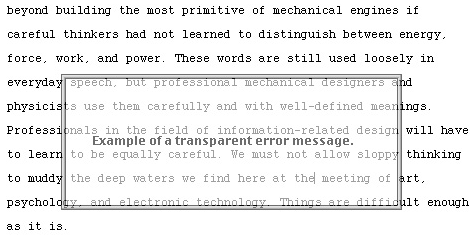

"Deep thinking is rare in this field where most companies are glad to copy
designs that were great back in the 1970s. The Humane Interface is a
gourmet dish from a master chef. Five mice!"
— Jakob Nielsen, Nielsen Norman Group
Author of Designing Web Usability: The Practice of Simplicity
This unique guide to interactive system design reflects the experience and
vision of Jef Raskin, the creator of the Apple Macintosh. Other books may
show how to use today's widgets and interface ideas effectively. Raskin,
however, demonstrates that many current interface paradigms are dead ends,
and that to make computers significantly easier to use requires new
approaches. He explains how to effect desperately needed changes, offering
a wealth of innovative and specific interface ideas for software
designers, developers, and product managers.
The Apple Macintosh helped to introduce a previous revolution in computer
interface design, drawing on the best available technology to establish
many of the interface techniques and methods now universal in the computer
industry. With this book, Raskin proves again both his farsightedness and
his practicality. He also demonstrates how design ideas must be built on a
scientific basis, presenting just enough cognitive psychology to link the
interface of the future to the experimental evidence and to show why that
interface will work.
Raskin observes that our honeymoon with digital technology is over: We are
tired of having to learn huge, arcane programs to do even the simplest of
tasks; we have had our fill of crashing computers; and we are fatigued by
the continual pressure to upgrade. The Humane Interface delivers a way for
computers, information appliances, and other technology-driven products to
continue to advance in power and expand their range of applicability,
while becoming free of the hassles and obscurities that plague present
products.
Acknowledgments
Friendly counsel cuts off many foes.
William Shakespeare (King Henry VI, Act III, Scene 1)
To list those who have helped is difficult, because they are so
numerous, and the debt is so enormous. Many friends, colleagues,
relations, reviewers, and some generous strangers I know only via the
Internet have contributed ideas, critiques, suggestions, and detailed
editorial work. Please forgive (and inform) me if you've helped and I've
left you out or gotten your name or title wrong.
Thanks to the groups at Addison Wesley Longman, whether editors,
designers, in PR, marketing, or whatever, all of whom seem to have been
chosen not only for their competence, but also for their friendliness
and forbearance. On the other hand, the anonymous reviewers they chose
were merciless, for which I am also grateful.
Among the following list are friends, acquaintances, colleagues, my
brother, my son's horn teacher, a fellow model airplane enthusiast—a
seemingly unlikely lot. Only a few are experts in human-computer
interface design, but all have read my manuscript and made essential
contributions to the book or have contributed over the years to its
concepts: David Alzofon (who also drew Quasimodo), Bill Atkinson, Thomas
Atwood, Paul Baker, Jerry Barenholtz, John Bumgarner, David Caulkins,
William Buxton, Ph.D., Renwick Curry, Ph.D., Robert Fowles, Josh
Garrett, Ph.D., Jean-François Groff, Scott Kim, Ph. D., Kathleen Mandis,
Pamela Martin, Troy May, Miriam Meisler, Ph.D., Douglas McKenna, Michael
S. Miller, David Moshal, M.D., Andrew Nielsen, Jakob Nielsen, Julie
Ososke, Ian Patterson, Michael Raskin, Ph.D., Erasmus Smums, Spider
Robinson, Minoru Taoyama, Shay Telfer, Yesso Tekerian, Bruce Tognazzini,
David Wing, Terry Winograd, Ph.D., the local chapter (BayCHI) of the
ACM's Special Interest Group in Computer-Human Interaction, which has
let me preach and debate my theses, and the students at the Center for
Computer Research in Music and Acoustics at Stanford University and its
director, John Chowning.
I am lucky to have a literate as well as a loving wife, Linda Blum,
R.N., who has never cared that writing a technical book is no way to
support a family, so long as it was a worthy endeavor. Her attention to
the ideas, direction, and details of this book have improved many a
page. I can take no credit in choosing my parents, but they deserve much
credit for teaching me to value people over things and to relish the
arts as well as the sciences, choices that lead directly to this work.
My son Aza contributed far beyond what you'd expect from someone of his
youth, including ideas, editing, and hard work on the illustrations. He
and his sisters were amazingly patient with me as I wrote. Especially
important in my life is L. Roland Genise, my best teacher, who, during
high school, gave me the twin gifts of intellectual self-confidence and
a love of mathematics. Among those who have shared warm friendship,
philosophy, and music, and who have been devastating editors of my
earlier works, I am lucky to be able to name Brian Howard and Douglas
Wyatt. I have disagreed with a few details of the writings of Dr. Donald
Norman in this book, but these are minor points as I regard his work as
essential reading in the field; without his critiques and teachings this
book would not have come about. I am grateful to Bill Verplank, a quiet
and agreeable sort whose comments are delivered so gently that you don't
realize the rug's been pulled out until you hit the floor. His was one
of the voices that convinced me to completely change the tone and
orientation of the book, for the better. Another who hammered this book
into shape was Lyn Dupré, a fierce and nitpicking professional editor.
She wrote BUGS in Writing, which you should read. Many
concepts, a few of which are cited in the text, came from or were
polished during discussions and work done with my friend James Winter,
M.D., Ph.D. The delightfully acerbic computer scientist Dick Karpinski,
who styles himself aptly as the world's largest leprechaun, has been
helpful in manifold ways, whether expounding on a technical point,
introducing me to a key person or book, or dropping by with dim sum.
And, whom I've saved for last, there's Peter Gordon, a man of wisdom,
persistence, and (especially) patience, who was my advocate at
Addison-Wesley. Our correspondence must never be made public as it would
reveal a penchant for extended word play and awful puns that would
forever besmirch both our names, but which lightened the burden of
endless details that must be attended to in putting together even so
slim a book as this.
Thanks to Agfa Corporation for supplying the digital camera used in
creating some of the illustrations.
Thanks, also, to the following readers, who first offered me particular
corrections, or suggested changes, that have now been incorporated into
the book: Eric Blossom, Jon Bondy, Philip Craiger, Paul Cubbage, Ted
Frick, Rebecca Fureigh, David B. Gustavson, Peter Johns, G. A. Michael,
Cam Mitchner, Rich Morin, Guy Parker, Martin Portman, and Elisabeth
Riba, Reuben Thomas, and Jim Weiner. The author is also grateful to Rich
Morin for supporting the
www.jefraskin.com Web site.
Chapter Two. Cognetics and the Locus of Attention
He wept and was nothing content, but it booted not.
Dominic Mancini, speaking not of a dead computer but of Edward V of
England. Occupatione Regni Anglie per Riccardum Tercium (1483). Quoted
in Alison Weir, The Princes in the Tower (1992).
As complicated as computers and other products of our technology may be,
it is easier to understand the machine side of the human-machine
interface than to come to grips with the far more complex and variable
human side. Even so, many—perhaps surprisingly many—human performance
factors are independent of a user's age, gender, cultural background, or
level of expertise. These properties of human learning and performance
are directly applicable to the foundations of any interface design. In
particular, that we have one locus of attention affects many aspects of
the design of human-machine interfaces.
2.1. Ergonomics and Cognetics: What We Can and Cannot Do
Know thyself.
Inscription at the Delphic Oracle, from Plutarch, Morals
Use a machine or a tool in accord with its strengths and limitations,
and it will do a good job for you. Design a human-machine interface in
accord with the abilities and foibles of humankind, and you will help
the user to not only get the job done but also be a happier, more
productive person.
Design guidelines for products that interact with us physically are
reasonably straightforward. The sizes and capabilities of the human
frame and senses have been well cataloged; these studies form the
science of ergonomics. Chairs, tables, keyboards, and
displays can be designed with a high degree of likelihood that they
will work reasonably well for their human users, although thorough
testing can never be neglected. You would not design a machine that
required one person to simultaneously operate two switches 3 meters
apart: We all know that humans are not that large.
Mayhew 1992 (Chapter 12) discusses
computer-relevant ergonomics, a topic outside the scope of this book,
in her overview of interface design. Ergonomics takes into account the
statistical nature of human variability. You might design a car seat
to accommodate only 95 percent of the population, even though you know
that 5 percent of the potential car purchasers will find the seat
uncomfortable. It might be too expensive or mechanically impossible to
give the seat the range of adjustment needed to work with the rare
1-meter midget or the rarer still 2.5-meter giant.
For the most part, the machines that our civilizations have built have
been mechanical and have interacted principally with our physical
selves. Consequently, our physical limitations are relatively well
understood. Increasingly, inventions have come to the aid of
intellectual rather than physical pursuits.
We must master an ergonomics of the mind if we want to design
interfaces that are likely to work well.
As surprising as it may seem, we are often blind to our own mental
limits; we must rely on careful experiment and observation to discover
the edges of our own mind's abilities.
The study of the applicable, engineering scope of our mental abilities
is cognitive engineering, or cognetics. Certain
cognetic limitations are obvious: You do not expect a typical user to
be able to mentally multiply a pair of 30-digit numbers in 5 seconds,
and you would not design an interface that requires such an ability.
But we are often not aware of other mental limitations that adversely
affect our performance when we use human-machine interfaces, although
these limitations are inherent in every human. Remarkably, all of the
well-known computer interfaces—and many noncomputer human-machine
interfaces—are designed as though their designers expect us to have
cognitive abilities that experiment shows we do not possess. Much of
the difficulty that we have with computers and related devices is due
to poor interface design rather than to any complexity inherent to the
task or to any lack of effort or intelligence on the part of users.
Just as ergonomics takes into account the statistical nature of human
variability, so too should cognetics. However, because there has been
so little practical use of what is known of the limits of human
cognition that are common to all of us, it seems wise to look first at
those limits.
Fortunately—if only because our present knowledge of these topics is
uncertain—we do not need to examine the structure of the physical
brain. We can design successful interfaces based on a pragmatic and
empiric view of what the human mind can and cannot do, of how long the
mind and body take to do particular tasks, and of the circumstances
that increase the likelihood that we will make mistakes.
2.2. Cognitive Conscious and Cognitive Unconscious
Oh Doctor Freud, Oh Doctor Freud, how we wish that you'd been
otherwise employed!
Doctor Freud," David Lazar, 1951
It can be difficult to deal with the psychologically, philosophically,
and historically laden terms—such as conscious and
unconscious—that we use to describe aspects of the way our
minds work. In an engineering context, it is useful to work with the
more limited concepts of the cognitive conscious and
the cognitive unconscious. More accurate would be the
terms empirical conscious and
empirical unconscious, but Kihlstrom's more euphonic coinage
has priority (Cohen and Schooler 1997, p. 137).
Understanding that we possess these two distinct sets of limited
mental abilities and understanding how they work in relationship to
human-machine interfaces is as essential to designing interfaces as is
knowing the size and the strength of the human hand when we are
designing a keyboard.
Here is a first-cut definition: Unconscious mental processes are those
of which you are not aware at the time they occur. The cognitive
unconscious is not the seething, mythic creature of Freudian
psychology but rather a phenomenon that you can demonstrate with a
straightforward experiment, which you will be asked to try shortly.
Although a growing mountain of books discusses the questions and
paradoxes of consciousness, following the approach taken in Bernard J.
Baars's A Cognitive Theory of Consciousness (1988)—a book that has broadly informed this chapter—helps us to avoid the
dilemmas and to deal only with what we can observe directly and
produce concretely. As Baars says in his preface, "one time-honored
strategy in science is to side-step philosophical issues for a time by
focusing on empirically decidable ones." Cognetics is a practical
discipline. Although theoretical studies can be illuminating and
eventually may lead to firm and practical results, we avoid them until
they do. (Analogously, although a study of human bone growth can
inform ergonomics, such a study would fall within the purview of
physiology rather than of ergonomics itself.)
Because concerns about what is conscious and unconscious usually seem
remote from our workaday world, let us tangibly demonstrate their
reality in your life by means of a question: What is the final
character in your first name? Until you read the previous sentence,
you were probably not thinking about this alphabetic character and its
relationship to your name. You know—and have long known—what that
character is and where in your first name it lies, but you were not
paying attention to that knowledge. You were not thinking of it; you
were not considering it. Or, to use our preferred terminology, you
were not conscious of it. The information was not being accessed, yet
you could recover it on demand. We will call that place from which the
character was fetched the cognitive unconscious. The cognitive
unconscious may not be a physical place, although it must be
represented by physical phenomena in the brain. To help dispel the
notion that the unconscious or conscious must be places in
the brain—which is different from the notion that they
might be—we can think of possible alternative mechanisms. For
example, when you became aware, or conscious, of the alphabetic
character, this becoming might have been a change of state.
Alternatively, perhaps our brains use a pointer mechanism, and a
pointer was changed while the memory or thought was left where it was
in your brain. It is possible that thoughts and memories could be
distributed, like a holographic record of an image.
We could consider other mechanisms or descriptions, but we have no
need to do so. For our purposes, all we need is to acknowledge that
you were not conscious of the character at one moment and were
conscious of it at another moment. I use a positional metaphor from
time to time, speaking of a thought as moving from the conscious to
the unconscious or back, but you should not think of this verbal
convenience as denoting a model of how the brain works. (Research into
the physical brain may show such a model to be valid, but that is not
our concern here.)
When I use the terms conscious and unconscious in
this book, I will generally intend them as abbreviations for the
cognitive conscious and the cognitive unconscious. When you did think
about the final character in your first name—a thought triggered by a
sentence in this book—that thought became part of your conscious
awareness. This change of state of your thought, from unconscious to
conscious, demonstrates that you have at least two forms of knowing.
To build a science of cognetics, we must banish solipsism and assume
that other humans would make the same observations about their mental
processes as you just did about yours.
A stimulus, such as reading a particular portion of this book, can
trigger the migration of not only an item of information but also a
sensation, a feeling, or another aspect of your memory or knowledge
from the unconscious, where it is stored, to the conscious, where you
are aware of it. Notice how your clothes feel: where they are tight
and where they are loose. Until you came across the sentence that
directed your attention to your clothes, you probably were not
consciously aware of the various pressures that your clothes were
putting on portions of your body. You can also call up memories—say,
of a recent happy event—and perhaps can even retrieve a bit of the
accompanying emotion from your cognitive unconscious and can bring the
memories into your cognitive conscious. Now pay attention to the feel
of this book in your hand—if you are reading this text in book form—or
to the input device that you are using to control your computer—if you
are reading from a display. I trust that these experiments on your
part have convinced you that you have a cognitive unconscious and a
cognitive conscious and that a stimulus can bring a mental construct
from the former to the latter.
By definition, you cannot experience, or be conscious of, any
unconscious process. An unconscious process, such as the one that
monitors your bladder pressure, can be a stimulus, whereupon the need
to relieve yourself becomes conscious.
A bothersome philosophical question in connection with the previous
sentence is: Who is the "you" about whom I am talking? Can I
distinguish between you and your conscious? Taking an engineering
perspective, I sidestep this question, saying simply that the "you" in
this case is the union of your physical self and all of the physical
and mental phenomena that your physical self manifests. We do not have
to address the question of the possible distinctions among you, your
conscious, and your unconscious to understand interface-design
principles.
It seems likely that memories or keys to memories are stored in
physical places in the brain, because in some cases, direct electrical
stimulation of parts of the brain, as is sometimes done during brain
surgery, can evoke a memory—that is, can make that memory conscious.
Stimulating one place may reproducibly call up a particular memory,
feeling, or sensation; stimulating another place may reproducibly
evoke a different experience. Studies of the brain performed with such
techniques as magnetic-resonance imaging (MRI) and positron-emission
tomography (PET) are helping researchers to elucidate the physical
correlates of various mental activities. These technologies are
mentioned because they may, at a future time, be directly helpful in
the design—and, especially, in the testing—of interfaces. For example,
there is an inverse correlation between a person's localized glucose
uptake—an indicator of how much energy the brain is using in a
particular physical structure—and the ease with which that person uses
a tested interface feature. Interface testing in the future may well
make increasing use of direct measures of brain activity, but a
further exploration of these methods lies outside the scope of this
book.
Our examples so far have followed mental constructs from unconscious
to conscious. Here is an example moving the other way: A sudden noise
or other unexpected event can pull your attention away from what you
are doing—for example, reading this book—and to the question of what
caused the sound; the sound of a lamp falling from a shelf (what was
your cat doing up there?) is an example. After you return to reading,
your knowledge of the event will move from the cognitive conscious to
the cognitive unconscious.
There are borderline cases, and there is much that we do not
understand about the conscious and the unconscious. For example, you
sometimes feel that someone's name is on "the tip of your tongue"; you
can almost think of the name, but you cannot quite do so. Sometimes,
the memory becomes fully conscious and you recall the name. Other
times, the memory remains elusive. Is there a state between the
conscious and the unconscious? Have we caught the mind in the middle
of "moving" the information about the name from one region of the
brain to another? Is an almost remembered name evidence for a link
partially formed or intermittently connected, sputtering like a loose
electrical contact? Such open questions are interesting, but we do not
need to answer them, just as in cosmology, we can understand that the
universe is expanding, without having a clue about what happened
before the expansion started, that is, before the big-bang event that
most cosmologists believe was the raising of the curtain on our
universe.
As I have said, I do not want to reify any particular metaphor of how
the brain works. However, we cannot avoid building mental models of
our brain: We build these models of our brain in our brain, a
mind-boggling thought. For the time being, then, picture the conscious
and the unconscious as separate compartments. These compartments are
more than just different places or states for storing thoughts or
memories: They have different ways of interacting with the world and
with concepts. As has been elucidated by cognitive psychologists over
the past century, the cognitive conscious and the cognitive
unconscious have properties beyond our awareness and unawareness of
them.
Table 2.1 summarizes the differences between
the cognitive conscious and the cognitive unconscious. The table tells
us that the cognitive conscious is brought into play whenever you
encounter a situation that seems new or threatening and whenever you
have to make a nonroutine decision—that is, one based on what is
happening in the here and now. Only when you are conscious of a
proposition can you determine whether it is logically consistent. The
cognitive conscious operates sequentially and can consider only one
question or control only one action at a time. You can be conscious of
only between four and eight distinct thoughts or things at once. Your
conscious memory fades in, at most, a few seconds.
The conscious is invoked in branching tasks. It is sometimes difficult
to distinguish a branching task from a nonbranching task. For example,
braking for a traffic light may be either. It is nonbranching—and is
handled by the cognitive unconscious—if you are simply reacting to a
red light by pressing the brake pedal. However, if a light that you
are approaching turns yellow, such that you have to decide whether to
continue through the intersection without pause or to stop, your
cognitive conscious comes into play. While you are learning a task,
you may see and react to it as a branching event requiring conscious
attention. With repetition, your execution of the task may become
nonbranching and automatic. In Section 2.3, we
start looking into these properties and their implications for
interface design.
Table 2.1. Properties of the Cognitive Conscious and the Cognitive
Unconscious
| Property |
Conscious |
Unconscious |
| Engaged by |
Novelty
Emergencies
Danger |
Repetition
Expected Events
Safety |
| Used in |
New circumstances |
Routine situations |
| Can handle |
Decisions |
Nonbranching tasks |
| Accepts |
Logical propositions |
Logic or inconsistencies |
| Operates |
Sequentially |
Simultaneously |
| Controls |
Volition |
Habits |
| Capacity |
Tiny |
Huge |
| Persists for |
Tenths of seconds |
Decades (lifelong) |
2.3. Locus of Attention
You have a degree of control over making unconscious thoughts
conscious, as you demonstrated when you brought the final character of
your first name "into mind." You cannot deliberately make conscious
thoughts unconscious, however. "Don't think about an elephant," a girl
whispers to a boy, knowing that the boy cannot comply. But in a few
moments, unless the conversation stays on elephants, the animal will
fade into the boy's unconscious. When that happens, the boy is no
longer paying attention to the thought of an elephant: The elephant is
not his locus of attention.
I use the term locus because it means place, or
site. The term focus, which is sometimes used in a
similar connection, can be read as a verb; thus, it conveys a
misimpression of how attention works. When you are awake and
conscious, your locus of attention is a feature or an
object in the physical world or an idea about which you are intently
and actively thinking. You can see the distinction when you
contemplate this phrase: "We can deliberately focus our attention on a
particular locus." Whereas to focus implies volition, we
cannot completely control what our locus of attention will be. If you
hear a firecracker unexpectedly exploding behind you, your attention
will be drawn to the source of the sound. Focus is also used
to denote, among the objects on a computer display, the one that is
currently selected. Your attention may or may not be on this kind of
focus when you are using an interface. Of all the world that you
perceive through either your senses or your imagination, you are
concentrating on at most one entity. Whatever that one object,
feature, memory, thought, or concept might be, it is your locus of
attention. Attention, as used here, includes not only the case of
actively paying attention but also the passive case of going with the
flow, or just experiencing what is taking place.
You see and hear much more than whatever is the locus of your
attention. If you go into a room to look for a misplaced item, what
you seek may be plainly in view but remain unnoticed. We can
demonstrate through optical considerations that the image of the
sought object was on your retina; it might even have been within the
5-degree cone of your foveal vision. We know through experiments in
neurophysiology that a signal representing the object was being
generated and transmitted over the optic nerve, yet you do not notice
it, because it never became your locus of attention. If I listen for
them, I notice that the fluorescent lights in the hall near my office
buzz annoyingly, but otherwise I do not hear them. The sound is there,
as a tape recording can demonstrate, even when I am unaware of it. I
most often notice the sound when I turn the lights on or off. The
sudden start of the buzzing calls my attention to it; the sudden stop
makes me realize—amazingly, because it is after the fact—that I had
been hearing it. Indeed, what seems to be a full-fidelity recollection
of the sound I had just been hearing suddenly becomes my locus of
attention. Experiments show that direct perceptions—the contents of
what psychologists call perceptual memory—seem to persist for a brief
period: The well-known phenomenon of the persistence of vision is what
makes the discrete frames of a movie appear to flow in continuous
motion. In particular, visual perceptions decay in typically 200
milliseconds (200 msec), with a range of 90 msec to 1,000 msec;
auditory perceptions decay in typically 1,500 msec, with a range of
900 msec to 3,500 msec (Card, Moran, and Newell 1983, pp. 29?1). I cannot now, sitting at my desk, recreate the buzz in
that same vivid, immediate way as I did right after it had stopped and
my attention had been directed by the sudden onset of silence to the
previous presence of the sound. Now, hours later, the perception is
long gone, and only a relatively pale memory—one having the character
more of a description than of a sensation—remains of the annoying
fluorescent buzz.
Perceptions do not automatically become memories. Most perceptions are
lost after they decay. One implication for interface design of the
rapid decay of sense perceptions is that you cannot assume that,
because someone has seen or heard a particular message 5 seconds
earlier, that person will remember its wording. If that particular
wording is important or if there is an important detail—for example,
if the message is, "Report error type 39-152," with the critical
detail being the particular number—either you must keep the message
displayed until it is no longer needed (the best strategy), or the
user must be able to apply the information immediately—that is, before
memory of it decays. As the information becomes the locus of
attention, it moves into short-term memory, which we define in
Section 2.3.4; it will persist there for as
long as 10 seconds.
2.3.1. Formation of Habits
Anything worth doing is worth doing badly—at first.
Dick Karpinski
When you perform a task repeatedly, it tends to become easier to do.
Juggling, table tennis, and playing piano are everyday examples in
my life; they all seemed impossible when I first attempted them.
Walking is a more widely practiced example. With repetition, or
practice, your competence becomes habitual, and
you can do the task without having to think about it.
Lewis Thomas (1974), whose writings on biology
are always a joy to read, expanded lyrically on the subject.
Working a typewriter by touch, like riding a bicycle or strolling
on a path, is best done by not giving it a glancing thought. Once
you do, your fingers fumble and hit the wrong keys. To do things
involving practiced skills, you need to turn loose the systems of
muscles and nerves responsible for each maneuver, place them on
their own, and stay out of it. There is no real loss of authority
in this, because you get to decide whether to do the thing or not,
and you can intervene and embellish the technique any time you
like; if you want to ride a bicycle backward, or walk with an
eccentric loping gait giving a little skip every fourth step,
whistling at the same time, you can do that. But if you
concentrate your attention on the details, keeping in touch with
each muscle, thrusting yourself into free fall with each step and
catching yourself at the last moment by sticking out the other
foot in time to break the fall, you will end up immobilized,
vibrating with fatigue. (p. 64)
When an observer suggested that a baseball player should think about
his technique as he was hitting, baseball star Yogi Berra echoed
Lewis's theme but with characteristic brevity: "How can you think
and hit at the same time?" (Kaplan 1992, p.
754).
Any habit is a surrender of detail control, but habits are essential
to the earth's higher life forms. At the other extreme, life is
entirely possible—for example, in microbes—in the absence of any
consciousness whatever, at least as far as we know or have any
reason to believe. We also use the term habit in a
pejorative sense. Despite Lewis's claim that there is no real loss
of authority, bad habits do develop. Habits can be so strong as to
approach addiction, sometimes reaching the point of a total loss of
conscious control. (I am speaking not of physiological addictions
here, such as to nicotine or opiates, but rather of undesired
learned habits, such as nail biting.) Insofar as our conscious
selves are who we are, I am reminded of Unamuno's observation: "To
fall into a habit is to begin to cease to be" (Unamuno 1913). Unamuno was, perhaps, warning us against the pernicious aspects
of habit formation; when it comes to the routine aspects of everyday
life, however, you want your conscious attention to "cease to be."
You can readily imagine how difficult it would be to drive your car
if you had to think, "Uhh, I want to stop. Let me see now: The
engine needs to slow down, so I have to take my foot off the
accelerator. Now I have to dissipate my car's kinetic energy into
heat by pressing on the brake pedal...." Fortunately, as an
experienced driver, you perform the operation habitually. Similarly,
you have developed many small habits that help you to use your
computer, watch, alarm clock, telephone, and every other device that
has an interface.
Persistent use of any interface will cause you to develop habits
that you will find yourself unable to avoid. Our mandate as
designers is to create interfaces that do not allow habits to cause
problems for the user. We must design interfaces that (1)
deliberately take advantage of the human trait of habit development
and (2) allow users to develop habits that smooth the flow of their
work.
The ideal humane interface would reduce the interface component
of a user's work to benign habituation. Many of the problems that
make products difficult and unpleasant to use are caused by
human-machine design that fails to take into account the helpful
and injurious properties of habit formation.
One notable example is the tendency to provide many ways of
accomplishing the same task. Having multiple options can shift your
locus of attention from the task to the choice of method (a topic
explored in Section 3.7).
You cannot often break a habit by an act of volition. As often or as
fiercely as you tell yourself that you will not perform the habitual
action, you may not always be able to stop yourself. Say that, for
example, next Sunday your car will interchange the functions of the
brake and accelerator pedals. A red light will illuminate on your
dashboard to warn you of this change. You might manage to drive a
few blocks successfully with the pedals reversed, but most of us
would not get out of the driveway without making an error. As soon
as your locus of attention is pulled away from the novel
arrangement—for example, if a child runs into the street—your
habitual reaction will make you stomp on the wrong pedal. The red
light will be of no help at all. I emphasize that you cannot undo a
habit by any single act of willpower; only a time-consuming training
process can undo a habit. A designer can lay—or create
inadvertently—a nasty trap by permitting to run, on one computer,
two or more heavily used applications that differ in only a handful
of often-used details. In such a circumstance, the user is
guaranteed to develop habits that will cause him errors when he
attempts to use in one application a method appropriate to only the
other.
2.3.2. Execution of Simultaneous Tasks
In the language of cognitive psychologists, any task that you have
learned to do without conscious thought has become
automatic. Automaticity enables you to do more than one
activity at a time: All but at most one of the tasks that you
perform simultaneously are automatic. The one that is not automatic
is, of course, the one that most directly involves your locus of
attention. When you do two tasks simultaneously, neither of which is
automatic, your performance on each task degrades—a phenomenon that
psychologists call interference—compared to your
performance on each task alone, because the two tasks compete for
your attention. The more predictable, automatic, and unconscious a
task becomes, the less it will degrade or compete with other tasks
(Baars 1988, p. 33).
We humans apparently simulate the simultaneous accomplishment of
tasks that require conscious control by alternating our attention
between tasks, attending now to one, then to the others (Card, Moran, and Newell 1983, p. 42). You achieve true simultaneity when all but at most one of
your tasks become automatic. For example, you can, at the same time,
eat a snack without choking, walk without tripping, and think
through a mathematics problem to a satisfactory conclusion. (You may
also be working on another math problem unconsciously, but by the
definition of the cognitive unconscious, you wouldn't notice that
you were. I am claiming only that you cannot simultaneously work
consciously on two different math problems.) For most
people, all of the tasks, except for finding the solution to the
mathematics problem, are so well learned that they undertake these
tasks on autopilot. However, if you were practicing these
simultaneous activities and suddenly discovered a nasty-tasting
morsel in the snack, you would become conscious only of what you
were eating. You would no longer be conscious of the mathematics
problem.
Equally important as the fact that you cannot be conscious of more
than one task at any moment is the realization that humans cannot
avoid developing automatic responses. This idea is important enough
to bear repetition: No amount of training can teach a user
not to develop habits when she uses an interface
repeatedly. That we form habits is part of our fixed mental wiring;
habit formation cannot be prevented by any act of volition. If you
have ever unintentionally driven toward your normal workplace on a
Saturday morning when you intended to go somewhere else, you've been
had by a habit that formed through repetition of a fixed sequence of
actions. When you learned to read, at first you sounded out and paid
attention to each letter and syllable; now (I hope) you read without
conscious attention to the process of translating marks into words.
Any sequence of actions that you perform repeatedly will,
eventually, become automatic. A set of actions that form a sequence
also becomes clumped into a single action; once you start a sequence
that takes less than 1 or 2 seconds to complete, you will not be
able to stop the sequence but will continue executing the actions
until you complete that clump. You also cannot interrupt sequences
that take longer than a few seconds to execute unless the sequence
becomes your locus of attention. Thus, after you take the wrong turn
on Saturday, you may suddenly realize that you intended to drive in
the opposite direction; this realization makes your navigation your
locus of attention, and you can interrupt the automatic sequence of
actions that would have led you to your workplace.
When you repeat a sequence of operations, making
and keeping what you are doing your locus of attention is
the only way to keep a habit from forming. This is very difficult to
do. As expressed in a common phrase, our attention wanders.
The inevitability of habit formation has implications for interface
design. For example, many of us have used computer systems that,
before they will perform an irreversible act, such as deleting a
file, ask, "Are you sure?" You then must type, say, a Y for
yes or an N for no in response to the question. The idea is
that, by making you confirm your decision, the system will give you
a chance to correct an otherwise irrecoverable error. This idea is
widely accepted. For example,
Smith and Duell (1992), addressing a nursing
environment, say, "If you inadvertently delete part of the permanent
record (which is hard to do because the computer always asks if
you're sure)..." (p. 86). Unfortunately, Smith and Duell are
unrealistic in their assessment: You can readily make an accidental
deletion even when this kind of confirmation is required. Because
errors are relatively rare, you will usually type Y after
giving any command that requires confirmation. Due to the continual
repetition of the action, typing Y after deleting soon
becomes habitual. Instead of being a separate mental operation,
typing the Y becomes part of the delete-file action; that
is, you do not pause, check your intentions, and then type the
Y. The computer system's query, intended to serve as a
safety measure, is rendered useless by habituation; it serves only
to complicate the normal file-deletion process. The key idea is that
any confirmation step that elicits a fixed response soon becomes
useless.
Designers who use such confirmations and administrators who think
that the confirmations confer protection are unaware of the powerful
habit-forming property of the cognitive unconscious (see
Section 6.4.2).
A more effective strategy is to allow users to undo an erroneous
command, even if they have performed intervening actions since
issuing it. You cannot protect against a user developing a habit of
confirming without reestablishing the decision as the locus of
attention, even by making the required confirmation action
unpredictable. For example, have the computer specify that the user
must type either twice or backward—that choice being presented at
random—a word displayed, also chosen randomly, in the dialog box.
The action that you have requested cannot
be undone. It will cause permanent loss of
the information in the file. If you are sure
you wish to delete the information forever,
type backward the tenth word in this box.
Requiring this kind of confirmation is as draconian as it is futile.
Any attempt at an effective confirmation process is necessarily
obnoxious because it prevents the user from forming a habitual
response and from ever becoming comfortable with it. If, for legal
or other reasons, a file should never be deleted by the user, it
should be made impossible for such a deletion to be performed. Such
measures also create a new locus of attention; the user is not
attending to the correctness of their prior response, thus
frustrating the purposes of both the confirmation and the user.
No method of confirming intent is perfect. Even having the user type
in the reason for a deletion—a technique especially useful in a
situation that carries legal implications—will soon lead to the
user's supplying one of a few stock answers. If the rationale for
performing an irreversible act was flawed from the outset, no
warning or confirmation method can prevent the user from making a
mistake.
2.3.3. Singularity of the Locus of Attention
I can't think about X if I'm thinking about Y.
Chris, a character on the television show Northern Exposure, 31
October 1994
For our purposes, an essential fact about your locus of attention is
that there is but one of them. This observation underlies the
solution of numerous interface problems. Many people do not believe
that they or others have only one locus of attention, but
experiments, described in the cited literature, strongly support the
hypothesis that we are unable to attend to multiple simultaneous
stimuli. This notion, which parallels our discussion on the
limitations of the cognitive conscious, is sufficiently surprising
to justify examining the support for it.
As Roger Penrose (1989) noted, "A
characteristic feature of conscious thought...is its 'oneness'—as
opposed to a great many independent activities going on at once" (p.
398). Bernard Baars (1988), a widely
recognized leader in the study of the cognitive conscious, explains
that when people are "asked to monitor a demanding stream of
information [they are] largely unconscious of alternative streams of
information presented at the same time, even to the same sensory
organ. Similarly, in absorbed states of mind, when one is deeply
involved with a single train of information, alternative events are
excluded from consciousness" (p. 33). The alternative events are not
loci of your attention.
Common parlance recognizes this observation. For example, we may
have a thought, and we may have many thoughts, but we speak of our
attention only in the singular. We never speak of a person's
attentions except in unrelated usages, such as
unwanted attentions.
Although you are unconscious of all but the one line of thought—the
single conceptual thread that you are following—an unexpected or
surprising event can pull your attention from that thread. I have
described how surprising events trigger conscious attention. What is
salient here is that you have acquired a new locus of attention and
lost the old; it is not the case that a second locus has been
brought into play.
An interrupting event does not need to be external: A sudden pain or
the realization that it is time for an appointment may break into
your cognitive conscious, derailing your current train of thought
and putting it on a new track. 1
Considerable attention has been paid to the biological mechanisms
that allow animals to synchronize with external time cycles, but I
am unaware of any work regarding how we set and respond to
internal alarm clocks.
However, if outside or internal events are routine and unpressing,
your unconscious recognizes that status, and you ignore those
events—without being conscious that you are ignoring them. In other
words, in the presence of the ordinary, your attention is not pulled
away. You can train yourself to scan the environment consciously
from time to time to notice events to which your attention would not
be otherwise called. To illustrate, pilots are taught to scan their
instruments regularly, without outside stimuli to initiate scanning.
A scan allows pilots to detect, for example, an instrument that
subtly shows an abnormal condition. (Not every instrument in an
aircraft has an alarm associated with it.) Nonetheless, pilots
regularly fail to perform their scan when events force their
attention to a particular locus.
You can be more or less absorbed in the task that involves your
locus of attention. The more intensely you are focused, the more
difficult to transit to a different locus of attention, and the
greater the stimulus needed to effect such a change. In the extreme
case, when we are completely absorbed by a task, we cease to monitor
our environment. You have probably experienced the absorbed state
when you are reading a book, are thinking deeply about a problem, or
are in the midst of a crisis that, as the expression goes, demands
your attention. The use of a computer is often so stressful and
difficult that a user will become absorbed in working on the
computer system, and therefore distracted from the completion of
tasks. Our goal is to leave the task as the locus of the user's
attention.
Absorption in a task or a problem decreases the ease with which a
person can change her locus of attention. On the other hand, such
absorption—if it is confined to the task and if the system does not
pull attention to itself—is essential to productivity. Systems
should be designed to allow users to concentrate on their jobs.
Interfaces should be designed as though the user will be so absorbed
in her task that she may not respond to your attempts to communicate
with her. An interface must work, whatever the user's state of
absorption. For example, interface designers sometimes assume that
the user's locus of attention is the cursor and that changing the
cursor's shape will inevitably command the user's attention. The
cursor location is a good place to put indicators, but even there,
the indicator can go unnoticed; the shape of the cursor is not the
locus of attention; rather, the place or object to which it is
pointing may well be. An example is given in
Section 3.2.
Many examples of absorption seem unbelievable until you experience a
similar incident or until you have seen so many reports that you
become convinced of the strength of absorption's grip. Because
aviation accidents are often well researched and carefully
documented, they are a good source for case studies. Here is another
(Garrison 1994). A well-known pilot was flying
an aircraft unfamiliar to him, one that required him to lower the
retractable landing gear as he made his descent. As a reminder, a
buzzer sounds when this particular model of aircraft is a certain
distance from the ground and the gear has not been lowered. "I
landed gear-up at one point, having persuaded myself that the
insistent buzzer I kept hearing as I approached the gravel runway
had something to do with the airbrakes. (This was one of my early
lessons in the bizarre mental mix-ups that can lead to accidents)"
(Garrison 1994). But there was no bizarre
mental mix-up: Garrison was concentrating on making a good landing,
one of the most difficult tasks that a pilot must accomplish and one
that requires a great deal of concentration.
2
An interface designer might wonder why, if the aircraft could
sound the buzzer, could it not also automatically lower the
landing gear? This book is not the forum for a discussion of the
details, but at times, automatically lowering the landing gear
could be dangerous to the occupants. Therefore, it is always left
up to the pilot to choose whether to lower the gear.
The human ability to tune out disturbances is not necessarily an
all-or-nothing response, as in the previous examples; it can be
proportional to the level of absorption and the degree of
disturbance. As stress increases, "people concentrate more and more
on but a few features of their environment, paying less and less
attention to others" (Loftus 1979, p. 35).
Thus,
if the computer behaves unexpectedly while you are using an
interface, you become less likely to see hints, help messages, or
other user aids as you become increasingly agitated about the
problem.
The more critical the task, the less likely it is for users to
notice warnings that alert them to potentially dangerous actions. A
computer warning message is most likely to be missed when it is most
important for it not to be missed; this sounds like a humorous
corollary of Murphy's law, 3
If anything can go wrong, it will. The first corollary is, If
nothing can go wrong, it will anyway.
but it is not. One way we can help is to
make sure that users cannot make interface operation errors, or
that the effects of any actions are readily reversible rather than
simply notifying users about the potential consequences of their
actions.
Most interface situations can be designed such that error messages
are unnecessary. A forceful diatribe against using error messages
appears in About Face (Cooper 1995,
pp. 421?40).
2.3.4. Origins of the Locus of Attention
That we have only one locus of attention may seem odd. Let us
explore how we may have come to have this trait.
Baars (1988) speaks eloquently to the
question; he seeks a biological rationale for our having evolved in
this limited fashion, asserting that
consciousness and related mechanisms pose a great challenge to
functional explanations because of the paradoxical limits of
conscious capacity. Why can't we experience two different "things"
at one time? Why is Short Term Memory 4
Short-term memory, often abbreviated STM in the literature,
describes the behavior of memory with respect to stimuli just
seen, heard, or otherwise sensed. If we do not make use of the
memory or make it our locus of attention, STM fades in 10 to 20
seconds, or far less if we pay attention to new events. As Baars
notes, STM is not only short but also of very limited capacity,
and new events will drive out the old irretrievably. For a
nontechnical and eminently readable account of the structure of
human memory, see Loftus (1980).
limited to half a dozen unrelated items? How could such narrow
limits be adaptive? Reasoning naively, it would seem wonderful to
be able to consciously read one book, write another one, talk to a
friend, and appreciate a fine meal, all at the same time.
Certainly the nervous system seems big enough to do all these
things simultaneously. The usual answers, that the limitations are
"physiological" or that we only have two hands and one mouth to
work with, are quite unsatisfactory because they simply move the
issue one step backwards: Why have organisms blessed with the most
formidable brain in the animal kingdom not developed hands and
mouths able to handle true parallel processing? And why does our
ability to process information in parallel increase with
automaticity, and decrease with conscious involvement? (p. 348)
Baars suspects that the answer lies in there being only one "whole
system": There is but one "I" in each of us. But to say that there
is one personhood per human being begs the question. That is, why
are there not multiple personhoods per mind-body ensemble? I am
speaking not of changes that occur serially, 5
Continuing change of personality is a human constant: We grow and
change all the time. These changes, as well as the changes called
multiple-personality disorder, are not what is being discussed.
but rather of true simultaneous and independent minds in a single,
connected physical entity. It may simply be that having a single
personhood is a biological accommodation to the linearity of time or
results from an accident of evolution rather than from a functional
adaptation. Nevertheless, it seems more likely that our single
personhood is adaptive: an accommodation to the purely physical
impediments to having multiple simultaneous persons in one body.
Given our evolved body plan, both personalities would not be able to
speak at once or to turn the head in different directions
simultaneously. Even if our eyes could have evolved to operate as
independently as a gecko's, would they be able to serve two
independent curiosities? I can imagine—to mention just one possible
catastrophe—that any multiple-mind mutation was eaten when it tried
to escape a predator by deciding to run in two different directions
at once.6
I have often seen my cat poised between curiosity and fear, its
senses intently trained on an unfamiliar object, its body tensed
for immediate flight. I have acted the same way myself. Sometimes,
what is learned by not fleeing is of value, and sometimes the
delay is fatal: whence the expression "curiosity killed the cat."
This occasional "being of two minds," as the idiom goes, is an
internal sequential dialogue rather than two independent
simultaneous processes.
Siamese twins and two-headed animals do occur from time to time, and
they have two independent minds, but they are developmental
accidents, a mismatching or a misreading of the genetic code. They
are not successful from an evolutionary standpoint and are not
products of natural selection. In the wild, such sports of nature
rarely survive and reproduce.
2.3.5. Exploitation of the Single Locus of Attention
We have examined the effects and the possible origins of having a
single locus of attention. The next step is to make use of that
singularity. We can redesign neither our own internal wiring nor
that of other users, but we can create products that have interfaces
that accommodate these cognitive capabilities.
That people have a single locus of attention is not always a
drawback. Magicians exploit this characteristic shamelessly. A good
magician can fix the attention of an entire audience on one hand so
that not a single spectator will see what the other hand is doing,
although that hand is in no way concealed. If we know where the
user's attention is fixed, we can make changes in the system
elsewhere, knowing that the changes will not distract the user. This
phenomenon was exploited in designing the Canon Cat (Figure 2.1). When a user stopped working, the Cat stored a bit-for-bit image
of the screen—exactly as the display appeared when she stopped—on
the first track of the disk. When the user again loaded her disk,
the Cat placed the most recently viewed image on the screen, in only
a fraction of a second. It takes about 10 seconds for a person to
switch contexts or to prepare mentally for an upcoming task (Card, Moran, and Newell 1983, p. 390), but it took only 7 seconds for the Cat to read into
memory the rest of the disk. So while the user was staring at the
static screen image, recalling what she had been doing and deciding
what she was going to do next—her locus of attention being the
preparations for the coming task—the system finished loading. Only
then did the screen become active, although it did not change
appearance, except that the cursor began to blink. Only a handful of
users ever noticed this trick. Most Cat owners thought that the
product magically managed to read in the whole diskette in the
fraction of a second that it took to display the first screen.
Presto!
Figure 2.1. The Canon Cat. Note the two LEAP keys below the space
bar.
Many people do not believe that it takes a person approximately 10
seconds to switch contexts; the time is measured between the final
command executed in the previous context and the first command
issued in the new context. The hiatus is not noticed because the
minds of the users are occupied; they are not aware of the passage
of time. However, this phenomenon should be used carefully when
designing an interface. If the work flow is such that a user makes a
particular context switch repeatedly, so that it becomes habitual,
the user will make the switch in far less time.
Time delays can be masked; for example, a card game that takes time
to create a new deal will feel faster if a card-shuffling noise is
played during the delay. The value of masking was vividly
demonstrated when such a game had its sound turned off inadvertently
and the players suddenly found the delay annoying (Dick Karpinski,
personal communication 1999).
2.3.6. Resumption of Interrupted Work
Usually, after dealing with an interruption to a task, you then
return to the interrupted task. If the interruption lasts only a few
seconds—within the decay time of short-term memory—no further
stimulus is required to signal you to return to the prior task.
After a longer break, however, your return to the interrupted task
must be triggered, often by seeing your incomplete work lying before
you. Such cueing is as common in daily life as it is when using a
computer: A banana peel left on the kitchen table by your 4-year-old
child becomes a cue to dispose of the peel.
A metaphor that permeates personal computers and derivative
technologies is that of a central, neutral dispatch area, or
desktop, from which you can launch a variety of applications. When
computers are turned on, most of them present the desktop, although
some of them can be set to launch a fixed set of applications. When
you quit an application, you are usually returned to the desktop.
This interface strategy is inefficient and nonhumane. The reason is
straightforward: When you quit an application, you (1) want to
either return to the previous task on which you were working or (2)
start a new task.
In current desktop-based systems, you must always navigate
to the task. This is the same as the worst
case for an interface that always returns you to what you were
last doing, because in the case of wishing to return to the task
from which you left off, you have to do
no work at all.
Similarly, when you return to an online site, such as a web page, it
would generally be better to return you to where you last were than
to a home page that, if the site is well designed, is always
available with a single click. The same reasoning suggests that
when you open a document in an application, such as a word
processor, you should be returned to the place where you were
working when you last closed or saved it.
The Canon Cat had the property of always returning you to the
previous task when you started to use it; moreover, it presented
exactly the same screen appearance, including cursor placement, as
when it was last used. Many users reported that seeing the same
display helped them to remember what they had been doing when they
had last used the machine, which made returning to the Cat a more
pleasant experience than returning to a computer that boots into a
desktop. More recently, the Apple iBook has taken a similar
approach, saving the current state to disk and whisking it back in
when you turn the machine on.
Designers of digitally tuned radios and televisions make sure that
their products retain the most recently tuned station and volume
settings, a requirement that adds to the complexity and cost of
those products in the form of nonvolatile memory that otherwise
would be unnecessary. For computer designers, who work with products
that already have substantial nonvolatile memory, such as a hard
disk, the hardware needed to do this is already in place, and there
is no excuse.
Chapter Three. Meanings, Modes, Monotony, and Myths
There is no progress without struggle.
Frederick Douglass
So that we can discuss interface with precision, a few definitions and
conventions of notations are introduced here. We use these tools,
building on the notion of locus of attention from
Chapter 2, to understand modes and their harmful
effects on interface design. We introduce a beneficial property of
interfaces, called monotony, which leads to a critique of
interfaces that have beginner and expert modes.
3.1. Nomenclature and Notations
The world is divided into people who think that they're right.
Diedre McGrath
Content is the information that resides in a computer
or other information-processing device and that has meaning and
utility for you. Creation or alteration of content is the task that
you intend to accomplish with the device. If you are a writer, the
content is those of your writings that are stored in the system. If
you are an artist, your graphics are the content of the system. Where
the system is a computer, the menus, the icons, and other
paraphernalia of the computer are not your content—unless you are an
interface designer or a programmer. We can now paraphrase Asimov's
first law of robotics from Chapter 1 in terms of
content: Any system shall not harm your content or, through inaction,
allow your content to come to harm.
A graphical input device (GID) is a mechanism for
communicating information, such as a particular location or choice of
object on a display, to a system. Typical GID examples are mice,
trackballs, lightpens, tablet pens, joysticks, or touchpads. The
GID button is the principal button
on any GID—for example, the left button on a two-button mouse. In
general, you use the graphical input device to control the position of
the cursor, which is an arrow or other graphical emblem on the display
to indicate the system's interpretation of where you are pointing.
Because we can pay attention to only one cursor at a time, systems
should not display more than one cursor for each graphical input
device on the system. The rationale for the one-button mouse is
discussed in Appendix A.
A tap is the act of pressing and releasing a key or
switch without any intervening action. Tap applies only to
keys on a keyboard or to other momentary contact switches that, when
released, automatically return to their original position and
electrical state.
To click is to position the GID and then to tap the
GID button. Thus, "click the word alligator" indicates that
you are to move the cursor such that it points to
alligator and then, while the cursor remains stationary, tap
the GID button. This operation constitutes "clicking on
alligator." To drag is to press the GID
button at one location and then to move the GID before releasing the
GID button at a new location; this action is sometimes called
click and drag. To double click is to
position the GID and then to tap the GID button twice quickly, without
any intervening motion of the GID or other user action. (In practice,
a small amount of GID motion is allowed, because it will usually move
slightly when the button is pressed.) Triple- and higher-order clicks
have been used in interface design.
The usual notations for the overlapping keystrokes that are used to
control most software are sometimes ambiguous. For example, the act of
pressing and holding the Control key and—while holding
it—pressing and holding Shift and—while continuing to hold
them both down—tapping the letter t, is often written
Control-Shift-t or Control+Shift+t in manuals.
However, these encodings of keyboard operations are indistinguishable
from the conventional notations for the sequences of keystrokes
Control, hyphen, Shift, hyphen,
t; and Control, plus, Shift,
plus, t, respectively.
This ambiguity can cause errors. For example, while I was writing this
manuscript, I looked up a key combination for a command I needed; the
manual listed it (at the end of a sentence) as
Control+.
So I pressed Control and, while holding it, typed a plus
sign. Due to the manual's ambiguous notation, my interpretation was
wrong: The manual was trying to direct me to press and hold
Control and, while holding Control, to tap the
period key.
Furthermore, the usual notations do not allow you to notate pressing
and holding down, say, both the Shift and
Command keys, and—while holding them both down—typing
multiple alphabetic characters, releasing Shift but not
Command after the first two alphabetic characters have been
typed. The alternative that I have just used—expressing the operation
in natural language—is clumsy albeit unambiguous.
To denote keyboard operations with precision and brevity, I use a
downward-pointing arrow immediately after the name of a key to
indicate that the key has been pressed and is to be held; for example,
Shift↓ signals that the Shift key is to be pressed
and held. An upward-pointing arrow after the name of a key indicates
the release of that key: Shift↑. A tap of a single key—for
example, t—is rigorously notated t↓ t↑. The
tap of a single key can be abbreviated, where the shorthand is
unambiguous, as t↓↑ or, where it will not cause confusion,
simply t.
A space separates the notation of consecutive actions. A tap of the
space bar is represented by the notation
Space
This convention does not introduce any ambiguity with typing the word
space, because typing the letters of the word
space is represented by letters separated by spaces, namely,
s p a c e
When there is a risk of misinterpretation, or when exactly what is
being typed requires emphasis, I use the full notation:
s↓ s↑ p↓ p↑ a↓
a↑ c↓ c↑ e↓ e↑
Arbitrary combinations of keys can be represented linearly in this
notation. For example, pressing and holding Shift and then
tapping n, pressing and holding Control while
Shift is still held and then tapping k, releasing
Shift while still holding Control and then tapping
w before releasing Control is written as follows:
Shift↓ n Control↓ k
Shift↑ w Control↑
The release of any of the keys currently being held—if the order in
which they are released is immaterial to the functioning of the
interface—is denoted by an up arrow for each key being held. This
convention allows us to denote typing the word space this
way:
s↓↑ p↓↑ a↓↑ c↓↑ e↓↑
Here is a more useful example: To reset parameter RAM on a Macintosh
computer, you use the following sequence of commands:
Command↓ Control↓ Power↓ ↑↑↑
Command↓ Option↓ p↓ r↓
Hold these keys and wait until a chime sounds
↑↑↑↑
(In English: Press and hold the Command key—the lack of an up
arrow means that you should not release the key immediately. Rather,
while you are holding it, press and hold the Control key.
There is no up arrow here either, so while you are holding both of
those keys, you press the Power key. There have been no up
arrows, so now you are holding down three keys. The three up arrows
that follow mean that you should release all three keys in any order
or all at once. Next, you are instructed to press and hold the
Command key, press and hold the Option key, press
and hold p, and then press and hold r, such that,
eventually, you are holding down four keys at once. You hold these
keys until after the chime and then let all four keys go.)
If a typed sequence has special time dependencies, they should be
noted in accompanying text. For example, for the user to type a single
letter t, we use this sequence:
t↓ t↑
With most keyboards, however, if a delay, usually of at least 500
msec, occurs between
t↓ and t↑, extra instances of the letter
t will be produced at a rate of approximately one every 100
msec. This feature is often called autorepeat. Delays, such as the one
that triggers autorepeat, cause problems in interfaces. The use of
delays in interfaces and an improved way to implement autorepeat are
described in Section 6.4.4.
3.2. Modes
Since humans are more pliable than computers, it can be easier to make
a human fit the computer's limitations than to design the computer to
fit the human's needs. When that happens, the human becomes a prisoner
trapped by the computer rather than liberated by it.
Karla Jennings
Modes are a significant source of errors, confusion,
unnecessary restrictions, and complexity in interfaces. Many of the
problems modes cause have been widely recognized; nonetheless, making
systems truly mode less is an underused tactic in interface design.
Before we can discuss methods for eliminating modes, we must
understand them in detail, especially because even interface
professionals have disagreed about what constitutes a mode (Johnson and Englebeck 1989).
To understand modes, we must first define a gesture. A
gesture is a sequence of human actions completed
automatically once set in motion. For example, typing a common word,
such as the, is a single gesture for an experienced typist,
whereas the typing of each letter would be a separate gesture for a
beginning typist. Combining a sequence of actions into a gesture
related to the psychological process is called
chunking: the combining of separate items of
cognition into a single mental unit, a process that allows us to deal
with many items as though they were one (Buxton 1986, pp. 475?80; Miller 1956).
Most interfaces have multiple interpretations of a given gesture. For
example, at one moment, tapping Return inserts a return character into
the text, whereas at another time, tapping Return causes the text
typed immediately prior to that tap to be executed as a command.
Modes are manifested by how an interface responds to gestures.
For any given gesture, the interface is in a particular mode if the
interpretation of that gesture is constant.
When that gesture has a different interpretation, the interface is in
a different mode. This definition gives us a useful initial view of
what constitutes a mode; we will refine the definition later.
A flashlight that is operated via a push-button toggle can be either
on or off, assuming that it is in good operating condition. Pressing
the button turns the light on if the present state is off, and turns
the light off if the present state is on. The two states of the
flashlight correspond to two modes in the interface: In one mode,
tapping the button turns the light on; in the other mode, tapping the
button turns the light off. If you do not know the present state of
the flashlight, you cannot predict what a press of the flashlight's
button will do. If your flashlight is deep in a duffel bag where you
cannot see it, you cannot check by feel whether the light is off or
on, assuming that it does not get detectably warm; if your intent is
to make sure that it is off, you will have to take it out. Your
inability to determine the state of the flashlight is a classic
problem caused by an interface that has modes; you cannot tell by
inspecting the controlling mechanism what operation you need to
perform to accomplish your goal. If you operate the controlling
mechanism without separately verifying the state of the system, you
cannot predict the effect that the operation will have.
Toggles are difficult to label. For example, in an interface I was
shown, an on-screen button was labeled Lock. When users first
encountered the button, they understood that they had to click on it
to lock the data in that window. When they did so, the button's label
changed to Unlock, to indicate that operating that button
would unlock the data. Later, most of the users wondered why the data
was unlocked, a conclusion they came to because the button said
Unlock. As often happens when toggles are used on buttons or
in menus, users read the label as an indicator of state. And they are
justifiably confused: The button said Lock when the data was
unlocked and Unlock when the data was locked. Obviously, you
cannot solve the problem by interchanging the labels and having the
button say Unlock when the data is unlocked and
Lock when it is locked.
What can help is to use a check box rather than a button and to use
the word Locked rather than Lock on it. This is
usually understood correctly: When the box is checked, the data is
locked. When the box is not checked, the data is not locked. The
labels do not change. You can make more complete labels, such as
"Click this button to unlock the data" or even "The data is currently
locked; click this button to unlock the data." But it is difficult to
put full explanations on a button, alongside a check box, or in a
menu, unless a zooming interface is available, as discussed in
Section 6.2.
Check boxes can leave the user guessing what the alternative is. For
example, if a check box labeled "Save to archive on closing" is
checked, the data will be saved to an archive when the window is
closed, but the label gives little clue as to what will happen if the
box is not checked. Will the data be saved somewhere else, not saved
at all, or will another option appear when you close the window?
Often, the best solution is to use a set of radio buttons (Figure 3.1); they are not modal, and the user can clearly see not only the
current state but also the alternative(s). Whether check boxes or
radio buttons are used, it is important to label them with adjectives,
which describe the state of the object affected, rather than verbs,
which describe an action, in which case the user does not know whether
the action has taken place or is yet to take place.
Figure 3.1. A pair of radio buttons labeled with adjectives. The
option chosen has the dot in the circle; the left image reflects the
locked state and the right image the unlocked state. Confusion is
unlikely, and the user is aware of the available options.
For one-of-many choices, radio buttons are already the standard, and
there is rarely reason to use other mechanisms.
Use radio buttons rather than toggles; toggles work reliably only
when the value of the state controlled by the toggle is your locus
of attention and is visible, or is in short-term memory.
Except when the state is the locus of attention—and it is usually
not—toggles will at times cause users errors. The kinds of errors
caused by toggles are usually transient, and recovery is easy, but
this is no reason to overlook them in interface design. To work in
interface design without attending to details at this level is like
trying to play a violin concerto, only occasionally forgetting to play
a sharp or a flat given in the key signature. The errors annoy by
pulling the listener's attention away from the continuity of the
music. Similarly, occasional little "gotchas" in an interface impede
the user's work flow.
Another troublesome aspect of modes—one that causes computer users
considerable exasperation—is exemplified by the way that the Caps Lock
key, found on most keyboards, functions. Often, your first indication
that this key has become engaged accidentally is that you notice that
the sentence you have typed is set in all uppercase letters, and only
then do you also notice that the Caps Lock key's light is on, if it
has such a light. "It is no accident that swearing is denoted by
#&%!#$&," writes my colleague, Dr. James Winter; it is "what a
typewriter used to do when you typed numbers when the Caps Lock was
engaged" (personal communication 1998).
Decades ago, Larry Clark observed that modes cause problems because
they make habitual actions have unexpected effects (Clark 1979).
1
I am not sure for how long the term mode has been used in
describing interfaces. An internal Xerox report on the Gypsy
Typescript System boasted, "There are no 'modes' in Gypsy" (Tesler and Mott 1975). There were, in fact, modes in Gypsy, but some of the more
problematical ones of contemporary word processors had been
eliminated. The term mode was new enough in 1975 that the
authors felt it necessary to put it in quotes.
The most commonly prescribed remedy for mode errors is to indicate
prominently to a user the state of the system. Dr. Donald Norman
characterized mode errors as resulting from inadequate feedback, the
feedback being provided by an indicator of system state (Norman 1983).
The real culprit, however, is not inadequate feedback but that the
provided indicator is not the user's locus of attention.
An especially clear example of the failure of using an indicator to
provide feedback of system state to the user occurs in the generally
excellent interface to the computer-aided design (CAD) package Vellum
(Ashlar 1995). To anybody who is designing a
drawing package, I strongly recommend a study of Ashlar's Drafting
Assistant; it represents an extraordinarily good interface, one that
is more productive and pleasant than that of the better-known AutoCAD.
2
In fact, AutoCAD licensed this technology while this book was being
written.
One of Vellum's time-saving functions is a tracer that can follow the
inside or the outside of a geometrical figure, selecting the border as
it travels. To enable the tracer, you click on a palette item that
turns the standard cursor
into
a distinct shape, the tracer cursor
After
you finish tracing, you often forget to switch back to the standard
cursor. As I click to select an object after I have executed a trace
operation—selecting by clicking being an action that I do so often
that it long ago became automatic—instead of succeeding in making the
selection, I sit surprised as the tracer goes off on its rounds. I
have been making this mistake for years, as have other users with whom
I have spoken. Although I sometimes catch myself in time, I never will
learn—I never can learn to always catch that I am in tracer
mode—because clicking to make a selection is, for me, automatic. My
locus of attention is the object I am selecting, not the cursor shape.
Vellum's changing cursor shape is one example of many that confirm
that feedback and indicators of system state are not sufficient to
guarantee the elimination of mode errors, even if the indicators are
physically colocated with your locus of attention. They may be in your
high-resolution foveal field, and, in this case, you are even using
the indicator as your cursor, yet because it is not your locus of
attention, you are not aware of the message it is trying to convey.
Essential topics for future research include quantifying the frequency
of mode errors and understanding the conditions that affect the
frequency with which these errors occur.
Expertise is no protection against modes; an expert has developed firm
habits. Naiveté is also no protection. In the example of Vellum's
cursors, the beginner has not yet established in his mind that it is
necessary to change the cursor back after tracing. By the time a
beginner has learned to do this step without having to think about it
explicitly, he is an expert with respect to this feature and is
subject to the habituation problem. If the current state of the
interface is not the user's locus of attention and if an interface has
modes, the user will sometimes make errors because his locus of
attention is not the current mode.
Here is another example: On some popular computers, many programs give
you a new, clean form when you type
Command↓ n↓↑ ↑
The n stands for new. In the America Online
electronic mail package, in contrast, you obtain a new, blank e-mail
form by typing
Command↓ m↓↑ ↑
I presume that m stands for mail. The error that is
repeatedly made when a user wants to start a new electronic mail
message is to use
Command↓ n↓↑ ↑
The interface state that gives rise to a mode in this example consists
of having a particular application active. The problem occurs when
users employ the
Command↓ n↓↑ ↑ command habitually. A beginner would
probably make this same error for a different reason; he would assume
that Command↓ n↓↑ ↑ operates identically across
applications and thus would make the error from excusable ignorance.
Norman (1983) lists three ways to minimize mode errors.
- Do not have modes.
- Make sure that the modes are distinctively marked.
-
Make sure that the commands required by different modes are not the
same, so that a command issued in the wrong mode will not lead to
difficulty.
Of these three, only the first always prevents mode errors. As we have
seen, the second works sporadically. The third does not decrease the
number of errors, but it does reduce the penalty for erring.
Extreme techniques will usually draw a user's attention to a mode
indicator, but by their intrusive strength, they redirect the user's
locus of attention to the current state of the system and not on what
he is trying to accomplish—a result that is as undesirable as the mode
error that the indicators might prevent. Norman defined mode errors as
mistakes that occur when a user misclassifies, or when the user makes
an erroneous analysis of a situation (Norman 1981). The terms misclassifies and analysis hint at
active, conscious participation on the part of the user and therefore
apply while she is unfamiliar with a command but do not apply after
her use of it has become automatic.
3.2.1. Definition of Modes
If the definition of a mode is based exclusively on the design of
the interface, as our definition has been up to now, all users would
make the same errors, albeit with different frequencies. They do
not. A given interface feature can be modal for one user and not
modal for another. A more complete definition of modes must
incorporate how the user views the interface:
A human-machine interface is modal
with respect to a given gesture when (1) the current state of the
interface is not the user's locus of attention and (2) the
interface will execute one among several different possible
responses to the gesture, depending on the system's current
state.
An interface can be modal with respect to one gesture and not modal
with respect to a second gesture.
For an interface as a whole to be classified as not modal, it
must not be modal for any gesture.
A measure, 𝑄, of how modal a particular interface is can be given by
classifying each of the gestures in an interface as modal or not
modal. Then, given the probability, 𝑝(𝑁ᵢ), that a particular
nonmodal gesture, 𝑁ᵢ, is used, measured for a given user or averaged
over a population of users, 𝑄 = ∑ 𝑝(𝑁ᵢ). 𝑄 ranges from 0, completely
modal, to 1, completely nonmodal.
Both parts of the definition of a modal gesture are necessary to
decide whether, for example, the gesture of pressing the
Backspace key is modal. In most computer interfaces,
assuming you are in the process of entering text, the Backspace
command erases the most recently typed character. If that character
was an e, the key erases an e. If that character
was an x, the key erases an x. That is, sometimes
Backspace is an e eraser, and sometimes it is an
x eraser. Considering only the second part of the
definition, the use of Backspace is modal because what it erases
depends on the character most recently typed; content is part of
system state. However, when you realize that your locus of attention
is the object that you are erasing, it is the first part of the
definition that explains why the operation is not modal and why you
do not make mode errors when you use the Backspace key to
erase characters in text or any other kind of object that you can
select and delete in the same way. 3
On the Macintosh, the key is, more accurately, labeled
Delete.
A command that sets whether the Backspace key operates as a
forward or a reverse erase, on the other hand, does make the
interface modal. The setting of erase direction, made earlier, is
usually not your locus of attention when, subsequently, you use
Backspace, so sometimes you will erase in the unexpected
direction.
Modes also restrict your scope of activity. If a gesture
g invokes action a in mode A and action
b in mode B, you must, if you are in mode
B and want to invoke action a, first leave mode
B and reset the interface into mode A. Only then
can you use the gesture g to invoke a. The
division of an interface into bounded areas is a necessary
consequence of modes; the set of states in which the gesture
g has a particular interpretation can be called the
range of g. Software sold as an
application—for example, a spreadsheet—usually consists of one or
more overlapping ranges. Certain ranges are relatively large. For
example, the following sequence performs a cut in nearly all
applications on both the Macintosh and Windows platforms:
Command↓ x↓
Other ranges are tiny. The following sequence in a certain computer
game opens a treasure chest only when the chest is visible:
Command↓ h↓
Grouping commands into separate ranges, or what we usually call
applications, can be an aid to understanding and using a
complex interface, but there are ways to organize an interface that
are less restrictive than are modes.
A fully humane interface would consist of exactly one range.
When an interface is controlled by another machine, you might think
that modelessness is of no importance, because machines have no
problem remembering state; they just model it internally with a
state of their own. However, if an interface is modal and the
program operating it does not initially know the current state of
the interface—for example, if it connects to the system after the
system is already running—the program, prior to operating any modal
control, must be provided with a means for testing that state.
Interface toggles are particularly troublesome in this regard, where
consecutive invocations of the toggling mechanism cycle the control
through a number of states before returning to the initial state
(the cycle then repeats).
This discussion of programs that operate interfaces is relevant to
human-machine interface design because you might want to construct a
set of stored commands that can be played back with a single
gesture, a macro, which is a rudimentary form of computer
program. A macro cannot set a toggle into a specific state unless
the macro first interrogates the system to determine the system's
current state. We saw this problem in the example of the flashlight
in the duffel bag. One solution is to have any multiple-option
switch always reset to a specified initial state immediately after
it is operated. Then, counting the number of invocations of the
switch always informs the operator of the switch's current state.
More than about five states is excessive if the switching is to be
done by a person. As mentioned earlier, another solution is to use
radio buttons.
We have not yet exhausted what harm modes do. Modes can put the
computer, instead of the user, in charge of an interaction. This
aspect is especially noticeable when you are forced to stop what you
are doing to reply to a message box. Certain designers consider
forcing the user to stop and to work in lockstep with a planned
sequence to be an interface advantage, in that the system is
"guiding" the user. There may be circumstances under which it is
imperative that the user make a particular decision—if there is no
user decision, there is no need for a dialogue at all—by a certain
time or before doing another step in the sequence. In the first
case, put up a count-down clock, but do not restrict the user from
doing other operations with the system. In the second case, have a
message stating that the decision must be made before the next step
will be presented, but the system should not prevent the user from
performing other operations that are not part of the programmed
sequence. For example, what if the user needs to look up something
in a file or do a calculation in order to answer the question?
Guidance should be offered modelessly, so that the user remains in
control of as much as possible of the system.
3.2.2. Modes, User-Preference Settings, and Temporary Modes
Facilities for setting user preferences constitute an example of
modes and are a major source of user frustration. Ironically, these
features are usually touted as a user benefit. Present interfaces
are often so difficult to use that a user may feel an urge to
rearrange them. Microsoft (1995, p. 4) specifically recommends that
such facilities be provided: "Users, because of their widely varying
skills and preferences, must be able to personalize aspects of the
interface...such as color, fonts, or other options." On the other
hand, a user of Microsoft Word described the effect of setting a
preference as being like dropping a time bomb into the word
processor. She needed to build a list in a format different from the
one she usually used, so she looked up how to make the changes and
chose new settings. The next time she wanted to build a list, she
used the familiar List command and, of course, unexpectedly obtained
the one she had reset Word to give her rather than the one she was
used to. It took her more than an hour to figure out what had
happened and to fix it. (Her first impulse was to believe that there
was something wrong with the program or in her use of the command,
and she repeated the command many times before she remembered that
she had reset the preferences.)
Bob Fowles, of the Pennsylvania State University Computer Center,
observed:
People not aware of the complexity of Word can really get into
trouble when they accidentally press Command, Option, or Control
plus another key while they are typing rapidly. My wife got into a
problem yesterday that took me quite a few minutes to figure out.
Every time she pressed Return, she got a bullet. Looking at the
Edit pull-down menu, I saw "undo Autoformat." After several
minutes of searching and using Help, I found where Autoformat
could be turned on or off and turned it off. Somehow, she had
typed a keyboard shortcut that had turned it on. (personal
communication 1998)
This user was injured by a customization, a mode, an invisible
keyboard shortcut, and excessive design complexity all at once.
Customizations are software design changes that are not reflected in
the documentation. For example, when I was using Word, I tried to
turn off a feature that was unfamiliar to me. The Help facility
instructed me simply to click a certain button on the standard
toolbar; however, a previous user had modified this toolbar using a
user-preference setting, so that the button was not there. It took
me a long time to figure out how to make the program behave. More
important, the incident pointed out another fundamental problem of
having user preferences: How do you test for interface quality or
even succeed at documenting a system whose configuration the
designers and writers cannot know in advance? In my case, the
previous user's mode change rendered the documentation wrong.
Allowing the user to change the interface design often results in
choices that are not optimal, because the user will, usually, not be
a knowledgeable interface designer. Typically, a user will choose
the method closest to one with which he is already familiar or a
customization needed only temporarily. Some designers have argued
that applications for high-level users should have many preference
settings so that a user can tailor the system as much as possible.
However, high-level users have no special claim to being good
interface designers and, being habituated to their software, have an
especially strong need for a stable system so that their habits will
not be rendered useless by changes, even changes they themselves
make.
By providing preferences, we burden users with a task extraneous to
their job function. A user of, say, a spreadsheet has to learn how
to use not only the spreadsheet but also the customizing facilities.
Time spent in learning and operating the personalization features
is time mostly wasted from the task at hand.
Managers complain about the time workers waste "playing with" the
system preferences. Most users just want to get their jobs done and
care not whether the numbers in the spreadsheet default to Palatino
in purple, Garamond in green, or Bodoni Semibold Extended Italic in
bellwether blue.
Personalizing an interface in a shared environment is an invitation
to disaster, as it means that the interface can change without
notice. The right action yesterday—say, clicking the red button—is
clicking the blue button today, because someone thought it looked
better in blue. Your training and habits are undermined. Especially
over the telephone or via e-mail, it is also more difficult to help
the user of a system that has preferences.
Customization sounds nice, democratic, open-ended, and full of
freedom and joy for the user, but I am unaware of any studies that
show that it increases productivity or improves
objective measures of usability or learnability. Adding
customization certainly makes a system more complex and more
difficult to learn. I suspect that if you were to take a user
survey, more people than not would be in favor of lots of
personalizable features. But then, when GUIs were first coming in, a
majority of users said that they'd never want to use one. It is also
important to recognize that users will customize an interface in
such a way that it appeals to their subjective judgment. As has been
observed in a number of experiments,
an interface that optimizes productivity is not necessarily an
interface that optimizes subjective ratings. (For an example, see Tullis 1984, p. 137.)
The central point of this issue is that if we are competent user
interface designers and can make our interfaces nearly optimal,
personalizations can only make the interface worse. Therefore, we
must be sparing and deliberate in offering user customizations. If a
user can, by a few judicious choices, really improve the interface,
we probably have done a poor job.
On the other hand, if a program's interface is as dismal—to voice an
opinion—as that of Microsoft Word 97/98, the situation is reversed.
Almost any change the user makes is an improvement, to exaggerate
only slightly. However, Word's interface is not the kind of goal
toward which we should be striving.
Modes that vanish after a single use cause fewer errors than do
those that persist, if for no other reason than that they have less
time to cause havoc. In the Vellum cursor example, fewer user errors
would result if the cursor, after performing its trace function,
reverted in form and function to its normal state. If you use a
temporary mode immediately after setting it, the fact that you set
the mode may not have evaporated from your short-term memory, and
you will not make a mode error; you may even incorporate setting the
mode as part of the gesture that carries out the command, which
makes the situation completely nonmodal for you. However, if you set
the interface mode for a command, and, prior to using the command,
are delayed or distracted, you are likely to make a mode error.
To avoid a mode, the Canon Cat was designed without a power switch.
4
I was startled to find a power switch on the back of the Cat when
the first units came back from Japan. I pointed out that the
design specifications said that there was to be no power switch,
and I had gone over the rationale for this repeatedly with the
engineers. "We thought the specifications had an error," I was
told.
The reason was that products react to gestures differently,
depending on whether they are on or off, and a power switch
therefore introduces a mode. To save energy, the Cat went into a
low-powered sleep state if it was not used for five minutes. To make
sure that sleep was not a mode, any user action or incoming message
turned on the Cat without perceptible delay; furthermore, the user
action that turned it on was not lost but took effect just as if the
machine had not been in the sleep state.
In many systems, computers come out of sleep mode at the touch of a
key, but the keystroke that turns them on—and any keystrokes made
subsequently but before the system is fully awake—are lost. Not
losing any keystrokes turned out to be an elegant feature. For
example, if you had a sudden inspiration or had to take a note
during a telephone call, you could just start typing without
worrying about the state of the Cat or even looking at the display.
It is a characteristic of modelessness that, once you become
habituated, you do not have to think or plan before you act; your
attention stays on the content of your work. (If you happened to put
your note in the midst of something else, you'd just select the note
and move it after you were done memorializing your inspiration or
finishing your telephone call.)
Occasionally, designers claim that modes are necessary because the
number of desired software functions exceeds the number of gestures
that a user can make with a keyboard and a graphical input device,
making gesture reuse necessary. However, display-based commands,
such as menus, and typed multiple-character commands, as in command
line-driven systems, offer an unlimited number of commands and thus
avoid that difficulty. (How you make sure that the various commands
in a command line system are visible, rather than having to be
memorized, will be discussed later.)
The bottom line on modes is this:
If you design a modal interface, users will make mode errors
except when the value of the state that is controlled by the mode
is the user's locus of attention and is visible to the user or is
in the user's short-term memory. The burden is on the designer to
demonstrate that a mode is being used under the appropriate
condition or that the advantages of a particular modal design
outweigh its unavoidable disadvantages.
It is always safe to avoid interface designs that have modes.
3.2.3. Modes and Quasimodes
Using the Caps Lock key to type uppercase letters and holding the
Shift key to the same effect are significantly different. The first
case establishes a mode; the second case does not. A set of
experiments at the University of Toronto confirmed that the act of
holding down a key, pressing a foot pedal, and any other form of
physically holding an interface in a certain state does not induce
mode errors (Sellen, Kurtenbach, and Buxton 1992). Other studies revealed the neurophysiological roots of this
phenomenon: Most of our nervous system operates such that a constant
stimulus yields signals that, in time, decrease in their ability to
capture our attention. This decrease continues until our cognitive
system receives no signal at all. However, the signals that report
back to us whether our muscles are actively producing a force do not
fade.
Activating and holding a control while performing another user
action has been referred to as a
spring-loaded mode and a spring-locked mode (Johnson and Engelbeck 1989). But this terminology is inappropriate because no physical spring
may be involved, the key or button is not locked, and holding a
control does not cause mode errors. The phrase
user-maintained mode (Sellen, Kurtenbach, and Buxton 1992) for this action is accurate but makes it difficult to frame a
corresponding adjective. I have come to use the term
quasimode and its adjectival form, quasimodal, to
denote modes that are maintained kinesthetically. (See
Figure 3.8.)
Figure 3.8. The hunchback of Notre Dame.
Quasimodes are very effective in eliminating modes (Raskin 1989);
however, excessive use of quasimodes can lead to absurd interface
conventions that require the user to remember dozens of commands,
such as Control↓ Alt↓ Shift↓
Esc↓ q↑↑↑↑. The limit for the number of effective
quasimodes is probably between four and seven. But one quasimode can
solve a multitude of varied problems (see
Section 5.4).
A typical problem that is readily solved by the use of quasimodes
occurs when an interface presents you with a set of choices, such as
the Macintosh's pull-down menus. In this application of quasimodes,
you press and hold down the graphical input device button when, on
the name of the menu, the other choices appear for as long as you
are holding down the button. You move the cursor to the desired item
and release on that item to make your menu choice.
Another use of quasimodes is to cycle through a set of options. So
long as the cycle starts on the same element in the set and proceeds
in the same order, and so long as there are not too many elements, a
fixed number of taps chooses the option. For example, in the design
of the Canon Cat, the user could change a selection to any of four
paragraph styles: left-aligned, centered, right-aligned, and
justified. Paragraph styles were chosen by repeatedly tapping the
key that had on its front the legend
¶ STYLE
To access a key with a front legend on the Cat, you held down a
special Shift key that was marked on its top Use Front (Figure 3.9). In general, the Use Front key allowed you to execute the
function indicated by the legend on the front of a key. Because
paragraph style was a quasimode (you had to hold down Use Front
while tapping the Paragraph Style key), the Cat knew how many times
you had tapped it. As a consequence, you soon learned that one tap
left-aligned the selection, two taps right-aligned the selection,
and so forth. Had the software cycled from wherever you left off, as
many interfaces do, there would have been no way of making your use
of the paragraph style command habitual; you always would have had
to look at the display to know what was happening. Note that a
paragraph style button that did not require holding down Use Front
would not have worked as well; it was the establishment of the
quasimode, when you pressed the Use Front key, that allowed the
system to know when to start counting.
Figure 3.9. Canon Cat's Use Front key and some of the command
keys. The words USE FRONT are light blue, as are the legends on
the fronts of the keys that are enabled by the Use Front key.
A habituating feature is often one that can be operated
successfully by a blind user. Following the principles in this
book will often result in interface methods that can be used by
the blind. We are all blind—in a very real sense—to the world
outside of our locus of attention.
Some menus or palettes take the most-used or the most recently used
item and position it at the top of the menu or in the palette: a
simple example of an adaptive menu or an
adaptive palette. A menu or a palette is made adaptive on
the assumption that having the favored item available, without
having to pull it down, will speed your use of the system. It is
useful to compare two approaches: The first approach is to
remove the chosen item from the list that has been pulled
out and place that item in the main palette or menu; the second
approach is to duplicate the chosen item into the main
palette or menu (Figure 3.10).
Figure 3.10. Ashlar pull-out palette. Note the duplication of the
first icon on the pulled-out group, so that the pullouts are
always in the same order; their use can, therefore, become
automatic.
It might seem that the first strategy is better. For one thing,
there is one less choice in the list that has been pulled out. It
also takes less screen space. But you also have to stop and check
whether the tool you want is in the main palette or in the pulldown,
especially if it has been more than a few seconds since you last
used the tool. But it is the second alternative, whereby you can
adopt the simple strategy of always using the nth pulldown
for a desired task, that is usually faster. It is certainly easier
from a cognitive standpoint. If you remember that a certain option
is now in the main menu, you save having to pull down the complete
list. But if you don't remember, you can use the pulldown as you
always do.
Vellum (Ashlar 1995) is an example of a
product interface with adaptive palettes done correctly (Figure 3.10). In Vellum, the palette is adaptive, and each tool can
also be found in its accustomed place. However, an experienced user
might ignore the adaptive feature, going automatically to the
accustomed tool position. An additional aspect of providing multiple
ways of invoking a feature will be discussed in
Section 3.5.
It has been suggested that interfaces should adapt to accommodate
the user's emotional state, and some products, such as Microsoft's
Bob, attempt to tailor the interface to the personality of the user.
It is not clear how an interface can adapt to the user in these ways
without upsetting habituation. But even if we can, someday, reliably
detect a user's emotional needs and use that information to improve
the performance of an interface without interfering with our learned
and automatic responses, our interfaces must still first satisfy the
user's unchanging cognetic needs. The principles outlined in this
book will still apply and will probably need to be applied prior to
any adjustment for emotional needs.
Fundamentally, there are only two kinds of inputs you make to your
computer or information appliance: creating content or controlling
the system. The rule of thumb adopted here is this:
Quasimodes are reserved for control functions. Operations you
perform when no quasimode is engaged create content.
It is this way rather than the other way around because it is more
difficult to operate a system while a quasimode-establishing button
is being held, and it is hoped that users will spend more time
creating and working with content than in using commands.
3.3. Noun-Verb versus Verb-Noun Constructions
A large class of commands involve applying an action to an
object. In operating a word processor, for example, you might
take a paragraph and change its typeface; in this case, the object is
the paragraph, and the action is the selection of a new font. The
interface can allow you to sequence the operations in two ways. You
choose either (1) the verb (change font) first and then
select the noun (the paragraph) to which the verb should
apply or (2) the noun first and then apply the verb. At first glance,
it would seem that the situation is symmetrical and the order is of no
importance, but in most interface designs, the situation is not
symmetrical, and the order (either noun-verb or verb-noun)
6
The terminology object-action versus
action-object is also used.
makes a significant difference in usability.
Most interface guidelines correctly recommend noun-verb interaction
(Apple 1987, Hewlett Packard 1987,
IBM 1988, Microsoft 1995). A locus-of-attention
analysis shows the benefits.
-
Error reduction. Verb-noun style sets up a mode. Once you
have chosen a command in this style, it will take effect on the
next selection you make. If there is a delay or a distraction
between issuing the command and making the selection, the ensuing
action may be surprising when you next make a selection. With
noun-verb construction, commands are executed when issued, when
your locus of attention is the command.
-
Speed. You do not have to shift your attention away from
your content—which is what triggered the need to perform an
operation—to the command and then back to find your place in the
content again to make the selection. With noun-verb construction,
you make the selection—your locus of attention—and then switch
your attention to the command. There is one change of locus of
attention instead of two.
-
Simplicity and reversibility. In the verb-noun paradigm,
you need to have an escape or a cancel feature associated with the
command; if you issue a command and then decide against it, you
are in a mode where the system expects you to make a selection, so
a mechanism must be provided so that you can signal the system
that you do not want to make a selection, you want to issue
another command. In noun-verb construction, if you decide to
change your selection, you simply make another selection. No
Cancel button or cancel method is necessary.
Every interface guideline I have seen that advocates noun-verb
construction also permits the verb-noun style of commands. The
Microsoft manual states that verb-noun style is necessary for
palettes, such as those for the various brush styles in paint programs
(Microsoft 1995). This is not strictly true. A pure noun-verb model is
possible: You draw in a default set of attributes, such as a thin
black line, and then apply color, width, texture, or whatever via
commands. However, we really want to see the full effect of each
stroke as we make it—with all of its attributes in full flower.
The conventional method, whereby you first select the attributes from
one or more palettes—much as you dip a real brush into this or that
paint and then make your mark—does lead to the mode errors we have
come to expect in such situations. It also makes sense to let the mode
you have chosen persist until you deliberately change it. Therefore,
it will happen that you start to draw and find unexpected attributes
appearing. Fortunately, the appearance of what you are drawing is your
locus of attention; if the software is humane, you will be able to
immediately undo the offending mark, change the attributes to those
desired, and continue working. The mode errors are annoying, and it
would be gratifying to find a noun-verb or other nonmodal method that
would be effective in this situation, but to the best of my knowledge,
nobody has as yet found a solution to this particular problem.
In general, the noun-verb paradigm is preferred. Verb-noun methods
should be limited to palette selections intended for immediate
use.
3.4. Visibility and Affordances
On a clear disk you can seek forever.
Source unknown
Whether a product is a handheld two-way radio or a computer's desktop,
it is not always clear what functions are available, what they do, or
how they are accessed. You should be able to use your senses to easily
discover both what abilities are available and how they are to be
operated.
An interface feature is visible if it either is
currently accessible to a human sense organ—usually the eyes, although
this discussion applies also to other sensory modalities—or was so
recently perceived that it has not yet faded from short-term memory.
If a feature is not visible, we say that it is
invisible. For an interface to work well, "[j]ust the
right things have to be visible: to indicate what parts operate and
how, to indicate how the user is to interact with the device.
Visibility indicates the mapping between intended actions and actual
operations" (Norman 1988, p. 8). 7
This book, The Psychology of Everyday Things, is not to be
missed.
If an interface forces you to memorize the fact that a feature exists,
that feature is invisible. If you are forced to root around in the
interface until, by luck and perseverance, you reach a sequence of
actions that activates a feature, such a feature is not visible. If
you have to use a help system to discover how to perform an operation,
the methods for invoking that operation are invisible. Many computer
games are, essentially, undocumented interfaces in which the controls,
or their mapping to desired effects, are invisible. Add documentation
and these games become trivial.
Most people do not want to play games when they are trying to get
work done. It is up to the designer of an interface to make every
feature of a product visible.
In designing to accommodate visibility, each function and the method
of operating it would be apparent—to most people in the culture for
which it is intended—by merely looking at it. A control that has this
attribute has come to be called an affordance (Norman
1998, p. 123). "Affordances provide strong clues to the operations of
things.... Knobs are for turning. Slots are for inserting things into.
Balls are for throwing or bouncing" (Norman 1988, p. 9). If you, as a
designer, put a knob such as is used in volume controls on a product,
people will attempt to turn that knob. Put on something that looks
like a pushbutton, and people will push it. Whether a feature is or is
not an affordance depends on the experience and the background of the
people who will be using the product and the context in which the
feature appears.
In analyzing interfaces, we should always ask how the user knows that
an action is possible, and we should always require that each visible
feature provide a recognizable affordance. Icons are often considered
the epitome of visible affordances, but they do not always serve this
function, as we discuss in Section 6.3.
Visibility is more than just detectable existence. An object may be
visible in the sense that it is there, but it might be too small to be
noticed, or it may have too little contrast to be readily
distinguished from the background. Optimizing the perceptual qualities
of an interface is an important ergonomic consideration, but the
concern here is with the cognitive properties of interfaces.
3.5. Monotony
Man is an over-complicated organism. If he is doomed to extinction he
will die out for want of simplicity.
Ezra Pound
Designers of interfaces often present users with a choice of methods.
For example, both a menu item and a keyboard shortcut may execute the
same command. In most word processors, you can move a contiguous
portion of the text by either (1) the three steps of selecting,
cutting, and pasting or (2) the two steps of selecting and dragging.
Also, the selection process itself can be invoked in more than one
way. The user has a smorgasbord of methods.
One justification for having multiple methods to do a given task is
that some users prefer one method and other users prefer a different
method. For example, a novice user might find menus easier to learn,
although an expert user might rather keep her hands on the keyboard
and issue commands by typing them (see
Section 3.6). Another justification is that one
method—for example, selecting, cutting, and pasting—is useful between
distant portions of a document, and the other method—selecting and
dragging—is effective only when the source and destination are both
visible on the display. Another reason for a plurality of methods is
that each of them is sanctioned by custom, and the developers felt it
wise to accommodate as many previously developed skills as possible.
This last reason, called backward compatibility,
8
I usually suggest that if the word compatibility is
eliminated from this phrase, its true meaning becomes
apparent.
is the weakest and can lead to absurd interfaces that are an
accumulation of incompatible methods. When I was grounded and waiting
for the weather to improve during a long flight by commercial jet, I
went to the cockpit, where I studied an autopilot that had no fewer
than five ways of entering coordinates and similar numbers of methods
for performing most of its other functions. When I asked the pilot for
the rationale, she said that it had been built to functionally
resemble, as closely as possible, autopilots from other aircraft that
pilots might have trained on and thus avoid the need for expensive
retraining. The question was whether the tactic was successful and
whether the old units had been duplicated exactly. As she explained,
the pilots not only had to learn the small but annoying differences
between their old system and the emulation of their old system on the
new autopilot but also were required to learn the four other ways of
using the autopilot. A pilot must be familiar with
every aspect of every piece of equipment in the
cockpit; besides, many of the newer features of the autopilot were
available in only some of the emulations; those of the earlier
autopilots did not have those features because the autopilots being
copied had not had them.
The tactic of portmanteau interface design, or just toss every method
you can think of into the bag, increased training time, produced a
harder-to-use autopilot, and, as the pilot noted, increased cockpit
confusion and opportunities for errors. She did not say so, but it
also probably increased the cost and complexity of the product, the
manuals, and the cost of maintenance. The same is true for any
interface that is a conglomeration of disparate design philosophies,
accumulated over time; this includes the Macintosh and Windows.
I use the term monotonous, tongue partially in cheek, to
describe an interface having only one way to accomplish a task (See
Appendix B;
Alzofon and Raskin 1985, p. 95).
Monotony is the dual of modelessness in an interface.
In a modeless interface, a given user gesture has one and only one
result: Gesture g always results in action a.
However, there is nothing to prevent a second gesture, h,
from also resulting in action a. A monotonous interface is
one in which any desired result has only one means by which it may be
invoked: Action a is invoked by gesture g and in no
other way. An interface that is completely modeless and monotonous has
a one-to-one correspondence between cause (commands) and effect
(actions). The more monotony an interface has for a given task space,
the easier it is for the user to develop automaticity, which, after
all, is fostered by not having to make decisions about what method to
use.
Another cause of nonmonotonous design is managerial indecision. Given
two or more choices of interface methods and no rational method of
choosing one above the others, I have seen the problem "solved" by
expediently putting in all of the proposed methods. This is
rationalized as giving the user a choice, as if the user were an
interface expert and will make the most productive choice.
A common myth, discussed in more detail in
Section 3.6, is that beginners and expert users
of a system require radically different interfaces. Designers speak in
terms of "the tradeoffs between ease of learning and speed of
execution in a system" (Card, Moran, and Newell 1983, p. 419). This may be true of particular interface designs, but I
have seen no demonstration that it is necessarily a property of all
interface designs; in particular, it is not a property of the kinds of
designs discussed in this book.
Present desktop GUIs are a compound of at least two distinct
interfaces, a relatively visible and learnable but time-consuming
menu-based system and an incomplete keyboard-based collection of
hard-to-learn and unmemorable shortcuts. Two wrongs do not make a
right.
When you have to choose among methods, your locus of attention is
drawn from the task and temporarily becomes the decision itself. This
is a primary reason for choosing to design a monotonous system. If the
conditions for making the decision are sufficiently clear and
distinct, the path you take in each case can become habitual, and you
have monotonized the situation. It still behooves the designer to seek
an efficient monotonous solution to gain benefits, including ease of
learning, simplicity of implementation, minimization of documentation,
and lowered maintenance costs. These benefits are either free to the
implementers or can be had for the relatively small one-time cost of
careful design and testing. Monotony does not mean that the same
content cannot be arrived at in many ways but that there should not be
multiple gestures to invoke the same command.
Monotony happens spontaneously. Many users monotonize the interfaces
they use by choosing one method and sticking to it, ignoring
alternatives whatever the situation. Computer gurus who pride
themselves on knowing every wrinkle of a system often decry such users
as amateurs; nonetheless, the "amateurs" may be using the interface
more efficiently than the gurus do. From the point of view of an
implementer, such users are wasting features; from the point of view
of the users, it is the implementers who are wasting resources.
I believe that an interface that is both modeless and, insofar as
possible, monotonous—all other design features being of at least
normal quality for a modern interface—would be extraordinarily
pleasant to use.
A user would be able to develop an unusually high degree of trust in
his habits. The interface would, from these two properties alone, tend
to fade from the user's consciousness, allowing him to give his full
attention to the task at hand. The psychological effects of totally
(or near totally) modeless and monotonous systems is an area of
interface design ripe for experimental study.
If I am correct, the use of a product based on modelessness and
monotony would soon become so habitual as to be nearly addictive,
leading to a user population devoted to and loyal to the
product.
Its users would find moving to a competitor's product psychologically
difficult. Unlike selling illicit drugs, marketing an addictive
interface is legal, and the product is beneficial to its users; in
another way, it is just like selling illicit drugs: extremely
profitable.
3.6. Myth of the Beginner-Expert Dichotomy
We're humans first, beginners or experts second.
Clifford Nass, CBC "Quirks and Quarks" radio program, 23 January
1994
Psychologist Clifford Nass's point is similar to one that this book
makes: Our interface designs must begin by accommodating universal
human frailties and exploiting universal human strengths. We must make
sure that every detail of an interface matches both our cognitive
capabilities and the demands of the task (not that those two
objectives exhaust our concerns). His comment also reflects the common
assumption that users can be grouped into two classes: beginners and
experts, perhaps with a few temporarily in transition. This dichotomy
is invalid. As a user of a complex system, you are neither a beginner
nor an expert, and you cannot be placed on a single continuum between
these two poles. You independently know or do not know each feature or
each related set of features that work similarly to one another. You
may know how to use many commands and features of a software package;
you may even work with the package professionally, and people may seek
your advice on using it. Yet you may not know how to use or even know
about the existence of certain other commands or even whole categories
of commands in that same package. For example, a user of a
photo-processing application who produces only online images may never
need, or even learn of, that same application's facility for doing
color separations, a feature needed primarily by commercial printers.
Interface designers have tried various approaches to accommodate the
premise that users can be separated into beginners and experts.
Because this premise is false, the approaches have failed. Adaptive
systems that shift automatically from beginner mode to expert mode
when they judge that your competence has reached a certain level are a
good example. If you are using such a system in beginner mode and it
suddenly shifts into expert mode, you will find yourself on unfamiliar
ground, at least with regard to a portion of the system. A system that
shifts piecemeal, feature by feature, is no better. It will feel
unstable and unsettling, because the habits that you were developing
as a novice yesterday become useless when the feature shifts into
expert mode today.
One web-based program I studied promoted you to expert status after
you had used it once successfully. The program put you back into
beginner mode when you had not used it for six months. Any such
arbitrary schedule may not accord with a user's personal rate of
learning and memory decay. If a program that promoted you switches to
beginner mode after too short a time, you will feel annoyed at being
forced to use the tedious beginner method. If the program does not
switch back to beginner mode in time, you will be faced with features
that you have forgotten how to use. Given present technology, a system
cannot know when you have forgotten how to use a given feature, so it
cannot know when it should shift back to beginner mode. A program that
quizzed you from time to time to assess your level of expertise would
be obnoxious.
Most attempts to make interfaces adaptive are ill-advised; whenever a
system changes automatically, even if the change is as small as, say,
a reordered set of items on a menu, your expectations are upset and
your habituation is frustrated. (Microsoft features adaptive menus in
its Windows 2000 operating system. 9
Windows 2000 was a new product as this section was being written,
and I was able to interview only a few users. A typical remark was,
"Adaptive menus seemed like a cool idea, but the first time a menu
changed on me, I found it upsetting. I don't like the idea any
more."
) On the other hand, there is no theory that tells us that the same
fixed interface cannot work well over the full span of a person's
experience with it, from novice to old timer. It seems best not to
have to shift paradigms during your use of a product, and no elaborate
analysis is needed to reveal the advantage in having to learn only one
interface to a task.
It is easy to fall into the trap of designing different interfaces for
different classes of users, because by doing so, you can make sweeping
assumptions that simplify the design process. Few such assumptions are
likely to be true of every user in any reasonably large class of users
that you specify. The antidote is to view an interface not from the
perspective of a class of users but rather through the eyes of an
individual. Every person who uses software over a long period goes
through a relatively brief period of learning for each feature or
command and a far longer period of routine (and, we hope, automatic)
use. We do need to design systems that are easy to learn and
understand, but it is more important that we make sure that these
systems can be efficiently used in the long run. The exceptions are
applications that will be used only briefly, so that every user is a
novice, and habituation is not an issue. One example of such an
interface is that for a computer-driven kiosk at an exhibition.
The learning phase of working with a feature involves your conscious
attention. Therefore, simplicity, clarity of function, and visibility
are of great importance. The expert phase is predominantly
characterized by unconscious use of the feature; such use is enhanced
by such qualities as aptness to the task, modelessness, and monotony.
These sets of requirements are not in conflict; therefore,
a well-designed and humane interface does not have to be split into
beginner and expert subsystems.
This is not to say that an interface must not be split on these lines.
However, if you find yourself designing an interface and are tempted
to provide "expert" shortcuts, consider whether you should instead
redesign the existing method so that it satisfies the needs of all
users with one mechanism.
Chapter Four. Quantification
The harmony of the world is made manifest in Form and Number, and the
heart and soul and all the poetry of Natural Philosophy are embodied in
the concept of mathematical beauty.
D'Arcy Wentworth Thompson, On Growth and Form (1917)
A number of methods for analyzing interface details quantitatively are
available. However, explicit directions on how to use them are rare.
This chapter gives an easy-to-use treatment and fully worked-out
examples of Card, Moran, and Newell's keystroke-level GOMS model,
Raskin's measures of efficiency, Hick's Law, and Fitts' law.
4.1. Quantitative Analyses of Interfaces
He fingered and fingered the computer—it simply amazed Melrose that
the machine supposed to take the pain out of all sorts of niggling
jobs took more time to perform a simple one than it would have taken
Bub to do by hand ten times over.
Martha Grimes, The Stargazey (a detective novel)
Many qualitative methods and heuristics are useful for analyzing and
understanding interface design. These methods form the majority of the
content of most books on the subject, including those cited in the
references for Shneiderman, Norman, and Mayhew. For example, what an
experienced interface designer can learn from passively observing a
test of a new interface with a few subjects can be as valuable as what
she can learn from any quantitative analysis. My concentration on
quantitative methods is not meant to denigrate the importance of
qualitative techniques but rather to help even the balance by
emphasizing the numerical and empirically testable methods that are
not yet widely used. Quantitative methods can often reduce argument to
calculation; a further, and most important, benefit is that
understanding why
the quantitative methods work guides us to understanding important
aspects of how humans interact with machines.
One of the best quantitative analyses of interface design is the
classic model of goals, operators, methods, and selection rules
(GOMS), which first gained attention in the 1980s (Card, Moran, and Newell 1983). GOMS modeling allows you to predict how long an experienced worker
will take to perform a particular operation when using a given
interface design. After discussing the GOMS model, I present
quantitative methods for determining interface efficiency, cursor
movement speed, and the time cost of decision making.
4.2. GOMS Keystroke-Level Model
The aim of exact science is to reduce the problems of nature to the
determination of quantities by operations with numbers.
James Clerk Maxwell, On Faraday's Lines of Force (1856)
I will introduce only the simplest—yet nonetheless valuable—aspect of
the GOMS method: the keystroke-level model. We designers who know GOMS
rarely use a detailed and formal analysis of an interface design, but
that is due, in part, to our having absorbed the fundamentals of GOMS
and of other quantitative methods such that our designs inherently
incorporate GOMS teachings. We do bring formal analysis into play when
choosing between two approaches to interface design in which small
differences in speed can have significant economic or psychological
effects. We can sometimes benefit from the impressive accuracy of the
more complete GOMS models, such as critical-path method GOMS
(CPM-GOMS) or a version called natural GOMS language (NGOMSL), which
takes into account nonexpert behavior, such as learning times. We can,
for example, predict how long it will take a user to execute a
particular set of interface actions to within an absolute error of
less than 5 percent. In these advanced models, almost all predictions
fall within 1 standard deviation of the measured times (Gray, John, and Atwood 1993, p. 278). In a field in which religious wars are waged over
interface designs and in which gurus often have widely varying
opinions, it is advantageous to have in your armamentarium
quantitative, experimentally validated, and theoretically sound
techniques. For a good overview and bibliography of the various GOMS
models, including her own CPM-GOMS model, see
John 1995.
4.2.1. Interface Timings
Numerical precision is the very soul of science.
D'Arcy Wentworth Thompson, On Growth and Form (1917)
When they developed the GOMS model, its inventors observed that the
time it takes the user-computer system to perform a task is the sum
of the times it takes for the system to perform the serial
elementary gestures that the task comprises. Although different
users might have widely varying times, the researchers found that
for many comparative analyses of tasks involving use of a
keyboard and a graphical input device, you could use a set of
typical times rather than measuring the times of individuals. By
means of careful laboratory experiments, they developed a set of
timings for different gestures. In giving the timings, I follow the
original nomenclature, in which each of the times is designated by a
one-letter mnemonic (Card, Moran, and Newell 1983):
| 𝐾 = 0.2 sec |
Keying: The time it takes to tap a key on the
keyboard
|
| 𝑃 = 1.1 sec |
Pointing: The time it takes a user to point to a
position on a display
|
| 𝐻 = 0.4 sec |
Homing: The time it takes a user's hand to move from
the keyboard to the GID or from the GID to the keyboard
|
| 𝑀 = 1.35 sec |
Mentally preparing: The time it takes a user to
prepare mentally for the next step
|
| 𝑅 |
Responding: The time a user must wait for a computer
to respond to input
|
In practice, these numbers vary widely; 𝐾 can be 0.08 sec for a
135-wpm highly skilled typist, 0.2 sec for a more typical 55-wpm
skilled typist, 0.28 sec for a 40-wpm average unskilled typist, or
1.2 sec for a beginning typist. Typing speed is not independent of
what is being typed: It takes most people about 0.5 sec to type a
random letter, given a set of randomly chosen letters to type.
Typing messy codes—for example, e-mail addresses—takes most people
about 0.75 sec per character. The value 𝐾 includes time it takes the
user to make corrections that he has caught immediately. Shift is
counted as a separate keystroke.
The wide variability of each measure explains why we cannot use this
simplified model to obtain absolute timings with any degree of
certainty; by using the typical values, however, we usually obtain
the correct ranking of the performance times of two
interface designs. If you are evaluating complex interfaces that
include overlapping time dependencies or if you must generate
accurate absolute times, you should use the more complete models,
which are not discussed in this book, such as CPM-GOMS.
The duration of the machine response time, 𝑅, can have an unexpected
effect on user actions. If a user operates a control and nothing
appears on the display for more than approximately 250 msec, she is
likely to become uneasy, to try again, or to begin to wonder whether
the system is failing.
We cannot build products that can complete any operation within
human reaction time, but our interfaces can always, within that
time, give feedback that the input has been received and recognized.
Otherwise, user actions—often flailing at the keyboard, trying to
get a response—during a delay can start the system off on unintended
activities, causing further delay or damaging the user's content.
For example, if you try to download a file while accessing America
Online from a browser, such as Netscape's, there is often a long
delay. No feedback lets you know that progress is being made; a
small, static message far from the locus of attention says only that
the computer is awaiting reply. After a few seconds, inexperienced
users start clicking at buttons on the display, which stops the
download—again without feedback.
It is important that interfaces provide feedback if delays are
unavoidable; display a progress bar (Figure 4.1) that accurately reflects the time remaining. If you cannot
predict how much time an operation will take, say so! Do not lie to
or misinform users.
Figure 4.1. A progress bar. It is important that it represent time
linearly. A textual statement of time remaining, if accurate, is
also a humane feature when delays are unavoidable.
4.2.2. GOMS Calculations
We begin the calculation of the time it takes to perform a method,
such as "move your hand from the graphical input device to the
keyboard and type a letter," by listing the operations from the GOMS
list of gestures (see Section 4.2.1) used in
this method, in this case 𝐻 𝐾. Listing the gestures (𝐾, 𝑃, and 𝐻) is
the easy part of creating an instance of GOMS models. The more
difficult part of developing an instance of a keystroke-level GOMS
model is figuring out at what points the user will stop to perform
an unconscious mental operation: the mental preparation (𝑀) times.
The basic rules—following the methods of
Card, Moran, and Newell 1983, p. 265—for
deciding where mental operations occur in a method are presented in
Table 4.1. In
Section 4.2.3, we look at how these rules
are applied in practice.
Table 4.1. Heuristics for Placing Mental Operators
-
Rule 0 Initial insertion of candidate 𝑀s
-
Insert 𝑀s in front of all 𝐾s (keystrokes). Place 𝑀s in front of
all 𝑃s (acts of pointing with the GID) that select commands, but
do not place 𝑀s in front of any 𝑃s that point to arguments of
those commands.
-
Rule 1 Deletion of anticipated 𝑀s
-
If an operator following an 𝑀 is fully anticipated in an
operator just previous to that 𝑀, then delete that 𝑀. For
example, if you move the GID with the intent of tapping the GID
button when you reach the target of your GID move, then you
delete, by this rule, the 𝑀 you inserted as a consequence of
rule 0. In this case, 𝑃 𝑀 𝐾 becomes 𝑃 𝐾.
-
Rule 2 Deletion of 𝑀s within cognitive units
-
If a string of 𝑀 𝐾s belongs to a cognitive unit, then delete all
the 𝑀s but the first. A cognitive unit is a contiguous sequence
of typed characters that form a command name or that is required
as an argument to a command. For example,
Y, move, Helen of Troy, or
4564.23 can be examples of cognitive units.
-
Rule 3 Deletion of 𝑀s before consecutive terminators
-
If a 𝐾 is a redundant delimiter at the end of a cognitive unit,
such as the delimiter of a command immediately following the
delimiter of its argument, then delete the 𝑀 in front of it.
-
Rule 4 Deletion of 𝑀s that are terminators of
commands
-
If a 𝐾 is a delimiter that follows a constant string—for
example, a command name or any typed entity that is the same
every time that you use it—then delete the 𝑀 in front of it.
(Adding the delimiter will have become habitual, and thus the
delimiter will have become part of the string and not require a
separate 𝑀.) But if the 𝐾 is a delimiter for an argument string
or any string that can vary, then keep the 𝑀 in front of it.
-
Rule 5 Deletion of overlapped 𝑀s
-
Do not count any portion of an 𝑀 that overlaps an 𝑅—a delay,
with the user waiting for a response from the computer.
In these rules, a string is a sequence of
characters. A delimiter is a character that marks
the beginning or the end of a meaningful string of text, such as a
natural-language word or a telephone number. For example, spaces are
the delimiters for most words; a period is the most common delimiter
at the end of a sentence; parentheses delimit parenthetical remarks;
and so on. The operators are 𝐾, 𝑃, and 𝐻. When a
command needs information, such as when you use the command that
sets the time for an alarm to go off and have to supply the time,
the information you supply is an argument for that
command.
4.2.3. GOMS Calculation Examples
An interface design usually begins with a task or a set of tasks
that need to be accomplished. A statement of the task and the means
available for implementing a solution are often formulated as a
requirement or specification. In this example, the user is
personified as Hal, a laboratory assistant.
Now, I would like you to stop reading so that you can design an
interface for this simple example. It will not take long to write
down your proposed solution, along with sketches of the display that
Hal will see; do not just think about this problem but rather write
about it as well. (You will be tempted to read on without honoring
my request. Please reconsider. The next few sections will make much
more interesting reading if you have already tried to solve the
problem yourself.) After designing your interface, read the two GOMS
analyses that follow. Then you will be ready to analyze your own
interface.
4.2.3.1. Hal's Interface: Solution 1, Dialog Box
The instructions in Figure 4.2 are
reasonably clear; from them we can write down the method that Hal
must use in terms of the gestures of the GOMS model. The GOMS
representation is shown growing incrementally as each new gesture
is added to the method.
Move hand to the graphical input device: 𝐻
Point to the desired radio button: 𝐻 𝑃
Click on the radio button: 𝐻 𝑃 𝐾
Figure 4.2. A dialog box solution with radio buttons.
Half of the time, the interface will already have the correct
conversion chosen, and Hal will not need to click on the radio
button. We consider first the case in which it is not the one
already chosen.
- Move hands back to the keyboard: 𝐻 𝑃 𝐾 𝐻
- Type the four characters: 𝐻 𝑃 𝐾 𝐻 𝐾 𝐾 𝐾 𝐾
- Tap Enter: 𝐻 𝑃 𝐾 𝐻 𝐾 𝐾 𝐾 𝐾 𝐾
The keystroke for the tap of the Enter key completes the
method portion of the analysis. Using rule 0, we add 𝑀s in front
of all of the 𝐾s and 𝑃s except those 𝑃s that point to arguments,
of which there are none in this example:
𝐻 𝑀 𝑃 𝑀 𝐾 𝐻 𝑀 𝐾 𝑀 𝐾 𝑀 𝐾 𝑀 𝐾 𝑀 𝐾
Rule 1 tells us to change 𝑃 𝑀 𝐾 to 𝑃 𝐾 and to eliminate any other
fully anticipated 𝑀s, of which there are none in this example.
Rule 2 eliminates 𝑀s in the middle of strings, such as in the
string that represents the temperature. Applying these two rules
leaves
𝐻 𝑀 𝑃 𝐾 𝐻 𝑀 𝐾 𝐾 𝐾 𝐾 𝑀 𝐾
The 𝑀 before the final 𝐾 is required by rule 4. Rules 3 and 5 do
not apply in this example.
The next step is to add the times represented by the letters.
(Recall that 𝐾 = 0.2, 𝑃 = 1.1, 𝐻 = 0.4, and 𝑀 = 1.35):
𝐻 + 𝑀 + 𝑃 + 𝐾 + 𝐻 + 𝑀 + 𝐾 + 𝐾 + 𝐾 + 𝐾 + 𝑀 + 𝐾 =
0.4 + 1.35 + 1.1 + 0.2 + 0.4 + 1.35 + 4 * (0.2) + 1.35 + 0.2 =
7.15 seconds
In the case in which the correct conversion is already selected,
the method is
𝑀 𝐾 𝐾 𝐾 𝐾 𝑀 𝐾
𝑀 + 𝐾 + 𝐾 + 𝐾 + 𝐾 + 𝑀 + 𝐾 + = 3.7 sec
By the requirements document, these two cases are equally likely.
Thus, the average time it will take Hal to use this interface for
one conversion task will be (7.15 + 3.7) / 2 ≈ 5.4 seconds. But,
because the two methods that Hal has to use are different, it will
be difficult for him to operate this interface automatically. One
of the open problems in the quantitative analysis of interfaces is
how to estimate error rates from a given interface design.
Next, we explore a graphical interface that makes extensive use of
a familiar metaphor.
4.2.3.2. Hal's Interface: Solution 2, GUI
The interface shown in Figure 4.3 uses
realistic representations of thermometers to indicate temperature.
Hal can lower or raise the pointer on each thermometer in
Figure 4.3 by using the drag method with
the GID. Hal indicates which conversion he wants by moving the
arrow on either the Celsius or the Fahrenheit thermometer. He does
not type any characters; he simply selects the temperature on the
input thermometer. As he moves one of the pointers, the pointer on
the other thermometer moves to the corresponding temperature. To
set the required precision, Hal expands and contracts the scales;
he can also change the range. When Hal changes the scale or the
range on one thermometer, those on the other thermometer change
automatically to cover approximately the same set of temperatures.
Numerical readouts are provided on the movable arrow. The
temperature is indicated both numerically and with a bar, so Hal
can use either the graphical or the character-based
representations of the data to accommodate his learning style or
personal preferences. The Auto-Med feature changes the ranges such
that they are centered on 37 degrees Celsius and 98.6 degrees
Fahrenheit, in case someone in the lab is working with human body
temperatures; this feature is designed to save time.
Figure 4.3. A GUI for Hal's interface.
Clicking on Expand Scales or Compress Scales increases or
decreases by a factor of 10 the values at tick marks on the
vertical thermometers. To get quickly to a far-distant
temperature, Hal expands the scale and scrolls up or down until
the desired range is in view, puts the arrow near the desired
temperature, and then compresses the scale, adjusting the arrow if
necessary, until the desired precision is attained.
A GOMS keystroke-level analysis of this graphical interface is
complex because the method Hal uses depends on where the converter
is presently set and what range and precision Hal needs. We look
first at the fastest case, in which the range and the precision of
the C or the F thermometer happen to be already set as Hal wants
them to be. This analysis will give us the minimum time needed to
use this interface.
-
Write down the gestures Hal uses as he moves his hand to the GID
and clicks and holds down the GID button on the desired arrow: 𝐻
𝑃 𝐾
-
Continue listing gestures as Hal moves the arrow until it points
to the correct value and then releases the GID button: 𝐻 𝑃 𝐾 𝑃 𝐾
- Place 𝑀s according to rule 0: 𝐻 𝑀 𝑃 𝑀 𝐾 𝑀 𝑃 𝑀 𝐾
- Eliminate two 𝑀s according to rule 1: 𝐻 𝑀 𝑃 𝐾 𝑀 𝑃 𝐾
There are no cognitive units, no consecutive terminators, and no
other reasons to apply rules 2 through 5. We find the total time
by adding the times for each gesture:
𝐻 + 𝑀 + 𝑃 + 𝐾 + 𝑀 + 𝑃 + 𝐾 =
0.4 + 1.35 + 1.1 + 0.2 + 1.35 + 1.1 + 0.2 = 5.7 seconds
This calculation applies to the lucky case in which the input
thermometer was preset to the appropriate range and resolution.
Now consider the case in which Hal wants to expand the scale
factor so that he can see the desired temperature, change the
range, compress the scale factor to get adequate resolution, and
then move the arrow. I will write down the method Hal uses,
without going through a step-by-step derivation. (I assume that
Hal is a perfect user and does not have to juggle back and forth
to find the right places on the thermometer.) Hal has to use the
arrows to scroll several times. Each scrolling operation may
require several gestures; the computer then animates the scrolling
operation, which takes time. To estimate scrolling times for the
analysis, I built a similar interface and measured scrolling
times, which were all 3 seconds or longer. Using 𝑆 to represent
the scrolling times, we can write the sequence of gestures that
Hal uses as follows:
𝐻 𝑃 𝐾 𝑆 𝐾 𝑃 𝐾 𝑆 𝐾 𝑃 𝐾 𝑆 𝐾 𝑃 𝐾 𝐾
Using the rules to place 𝑀s, we get
𝐻 + 3⋅(𝑀 + 𝑃 + 𝐾 + 𝑆 + 𝐾) + 𝑀 + 𝑃 + 𝐾 + 𝐾 =
0.4 + 3 * (1.35 + 1.1 + 0.2 + 3.0 + 0.2) + 1.35 + 1.1 + 0.2 + 0.2
=
20.8 seconds
Except for the rare case in which the thermometer scales are
correctly set at the beginning of the problem, a perfect user will
need more than 16 seconds to accomplish a temperature conversion
using this method. A real—imperfect—user would jog the scales and
the arrows back and forth and thus take even longer.
4.3. Measurement of Interface Efficiency
Every tool carries with it the spirit by which it has been created.
Werner Karl Heisenberg
We have looked at two interfaces, one of which will take about 5 seconds
to operate and the other of which will take more than 15 seconds to
operate. It is clear which of the two better satisfies the requirement.
The next question that we ask is how fast an interface that satisfies
the requirement can be.
Given a design for an interface, you can use GOMS and its extensions to
calculate how long a user will take to accomplish any well-defined task
with that interface. But analysis models do not answer the question of
just how fast you should expect an interface to be. To answer this
question, we can use a measure from information theory. In the following
discussion,
information is used in the technical sense of a quantification
of the amount of data conveyed by a communication, such as when two
people have a telephone conversation or when a human sends a message,
such as a click of the GID button when the cursor is at a certain
location, to a machine. Before dealing with the technical details of
measuring the amount of information a user must provide to accomplish a
task, we establish the need for such a measurement.
To make a reasonable estimate of the time that the fastest possible
interface for a task would take, we can proceed by first determining a
lower bound on the amount of information a user has to provide to
complete that task; this minimal amount is independent of the design of
the interface. If the methods of a proposed interface require an input
of information that exceeds the calculated lower bound, the user is
doing unnecessary work, and the proposed interface can be improved. On
the other hand, if the proposed interface requires the user to supply
exactly the amount of information that the task requires, you cannot
make a more information-efficient interface for this task. In this
latter case, there may yet be ways of improving—and there are certainly
many ways of ruining—the interface, but at least this one efficiency
goal will have been met.
Information-theoretic efficiency is defined similarly
to the way efficiency is defined in thermodynamics; in thermodynamics we
calculate efficiency by dividing the power coming out of a process by
the power going into that process. If, during a certain time interval,
an electrical generator is producing 820 watts while it is driven by an
engine that has an output of 1,000 watts, it has an efficiency of 820 /
1,000, or 0.82. Efficiency is also often expressed as a percentage; in
this case, the generator has an efficiency of 82 percent. A perfect
generator—which by the second law of thermodynamics cannot exist—would
have an efficiency of 100 percent.
The information efficiency 𝐸 of an interface is defined
as the minimum amount of information necessary to do a task, divided by
the amount of information that has to be supplied by the user. As is
true of physical efficiency, 𝐸 is at least 0 and is at most 1. Where no
work is required for a task and no work is done, the efficiency is
defined as 1. (This formality is necessary to avoid the case of 0
divided by 0, as in responding to a transparent error message. See
Section 5.5.)
𝐸 can be 0 when the user is required to provide information that is
totally unnecessary (Figure 4.4). Surprisingly, a
number of interface details achieve the dubious honor of having 𝐸 = 0. A
dialog box that allows the user only one possible action, such as
clicking the box's OK button, is such an example. (JavaScript has a
command, Alert, solely for creating such unnecessary boxes: The
designers were wise enough to remove goto from the JavaScript
language to force structured code, but they failed to provide similar
guidance on the interface side.)
Figure 4.4. A dialog box with an information theoretic efficiency of
0.
𝐸 takes into account only the information required by the task and that
supplied by the user. Two or more methods may have the same 𝐸, yet have
different total times. It is even possible that a first method has a
higher 𝐸 yet is slower than a second method—for example, 𝑀 𝐾 𝑀 𝐾 versus
𝑀 𝐾 𝐾 𝐾. In this example, only two characters have to be entered when
the first method is used. In the second method, three characters are
required, yet it takes less time to perform the task. It is difficult to
construct many real-life situations that exhibit this inversion of speed
and information efficiency. 2
It is possible to design more sophisticated measures of efficiency;
for example, the 𝑀 operator does not enter into our calculation.
However, the simple measure defined here suffices for the purposes of
this book.
For the most part, the more efficient interface is also the more
productive, more humane interface.
Information is measured in bits; a single bit, which represents a choice
between two alternatives—such as 0 and 1, on and off, or yes and no—is
the unit of information. 3
Bit is mathematician John W. Tukey's contraction of the words
BInary digiT (Shannon and Weaver 1963, p. 9).
For example, a choice made among four objects would require 2 bits of
information: If the objects are A, B, C, and D, the first bit could
choose either A and B, or C and D; once that choice was made—say C and
D—the second bit would choose either C or D. Two binary choices, or 2
bits, suffice to separate one item from a set of four. To choose among
eight alternatives, you need 3 bits; to choose among sixteen items, you
need 4 bits; and so on. In general, given 𝑛 equally likely alternatives,
the amount of information communicated by all of them taken together is
the power to which 2 has to be raised to obtain 𝑛:
log₂𝑛
And the amount of information in any one of them is
Equation 1
(1/𝑛)⋅log₂𝑛
If the probabilities among the alternatives are not necessarily equal
and the 𝑖th alternative has probability 𝑝(𝑖), the information associated
with that alternative is
Equation 2
𝑝(𝑖)⋅log₂(1/𝑝(𝑖))
The amount of information is the sum (over all alternatives) of
expression (2), which reduces to expression (1) in the equiprobable
case. It follows that the information content of an interface that
allows only the tap of a single button is 0 bits; not tapping the button
is not permitted:
Equation 3
1⋅log₂(1) = 0
It would seem, however, that the required tap of a single button can,
for example, cause the ignition of dynamite used to demolish a building.
Would this tap of the button then convey information? It would not,
because not tapping the button was not an alternative; the interface
"allows only the tap of a single button." If, however, the button was
not tapped during, say, a five-minute time window in which the
demolition was permitted, the building would not be demolished, and the
tap or nontap would convey up to 1 bit of information because there
were, in this case, two possible messages. From expression (2), we know
that the calculation involves the probability, 𝑝, that the building will
be exploded. The probability that it will not be exploded is therefore
1/𝑝. From expression (2), we can calculate the information content of
this interface:
Equation 4
𝑝⋅log₂(1/𝑝) + (1-𝑝)⋅log₂(1/(1-𝑝))
When 𝑝 = ½, expression 4 evaluates to
½ ⋅ 1 + ½ ⋅ 1 = ½ + ½ = 1
Expression (4) evaluates to less than 1 if 𝑝 ≠ ½. In particular, it
evaluates to 0 when 𝑝 = 0 or 𝑝 = 1, as in expression (3).
This example illustrates an important point: We can measure the
information embodied in a message only in the context of the set of
possible messages that might have been received. To calculate the amount
of information that has been conveyed by the reception of a message, we
must know, in particular, the probability of that message having been
sent. The amount of information in any message is independent of other
messages past or future, is without reference to time or duration, and
does not depend on any other events; similarly, the outcome of the flip
of a fair coin is unaffected by previous tosses or by what time of day
it is tossed.
As explained in Shannon and Weaver (1963), it is
also important to keep in mind that
information should not be confused with meaning...information is a
measure of one's freedom of choice when one selects a message....Note
that it is misleading (although often convenient) to say that one or
the other message [when just two are possible] conveys [1 bit of]
information. The concept of information applies not to the individual
messages (as the concept of meaning would), but rather to the
situation as a whole, the unit information indicating that in this
situation one has an amount of freedom of choice in selecting a
message, which it is convenient to regard as a standard or unit
amount. (p. 9)
However, a user's actions in performing a task could be modeled with
greater accuracy as a Markoff process, whereby the probability of a
later action depends on earlier actions taken by the user, but the
single-event probabilities discussed are sufficient for the purposes of
this book; messages are assumed to be independent and equiprobable.
The amount of information conveyed by nonkeyboard devices can also be
calculated. If your display is divided into two regions—one labeled Yes
and the other labeled No—a single click in one or the other region would
supply 1 bit of information. If there are 𝑛 equally likely targets, with
one click, you supply log₂𝑛 bits of information. If the targets are of
unequal size, the amount of information given by each does not change,
but it does take longer to move the GID to smaller targets—by an amount
that we shall show how to calculate presently. If the targets have
unequal probability, the formula is the same as that already given for
keyboard inputs with unequal probabilities. There is a difference in
that a user can operate a keyboard key in 0.2 sec, whereas it will take
1.3 sec to operate an on-screen button, on average, ignoring homing
time.
For our purposes, we can calculate the information content of voice
input by treating speech as a sequence of input symbols, rather than as
a continuous phenomenon with a certain bandwidth and duration.
This treatment of information theory and its relationship to interface
design is a simplified account. Yet even in this rudimentary form,
information theory—used in a manner analogous to our use of the
simplified GOMS keystroke-level model—can give us first-order guidance
in evaluating the quality of our interface designs.
4.3.1. Efficiency of Hal's Interfaces
Accurate reckoning: The entrance into the knowledge of all existing
things and obscure secrets.
Rhind Papyrus, c. 1650 B.C.
It is useful to go through a detailed example of a calculation of the
average amount of information required for an interface technique. I
will again use the temperature-conversion example. According to the
requirement, the input needed by the converter consists of an average
of four typed characters; a decimal point occurs once in 90 percent of
the inputs and not at all in the other 10 percent, and the negative
sign occurs once in 25 percent of the inputs and not at all in the
other 75 percent. For simplicity, and because there is no need for 1
percent precision in the answer, I will assume that all of the other
digits occur with equal frequency, and I will ignore the 10 percent of
the inputs that have no decimal point.
We need to determine the set of possible messages and the probability
of each. Five forms are possible, where d denotes a digit:
-
-dd
-
d.d
-
.ddd
- d.dd and
- dd.d.
The first two each occur 12.5 percent of the time, and there are 100
of each of them; the final three each occur 25 percent of the time,
and there are nearly 1,000 of each. 4
The "nearly" comes from the fact that the temperature of 0 degrees
will not be entered as 0.00 or 00.0.
The probability for either of the first two types of messages is
(0.125 / 100) = 0.00125; the probability for any one of the final
three types of messages is (0.75 / 3000) = 0.00025. The sum of the
probabilities of the messages is, as it must be, 1.
The amount of information of each message, in bits, is given by
expression (2) 5:
To get logs to the base 2 on a calculator or a computer that has
only natural logs (ln), use: log₂(𝑥) = ln(𝑥) / ln(2).
This expression evaluates to approximately 0.012 for the negative
values and to 0.003 for the positive values. Calculating 200 x 0.012 +
3000 x 0.003 gives a total of 11.4 bits for each message.
Taking the probabilities into account can be important. If we took a
simple-minded approach and assumed that all of the 12 symbols (minus,
decimal point, and the 10 digits) were equally likely, the probability
of each would be 1/12, and the information contained in a
four-character message would be approximately
4⋅log₂(12) ≈ 14 bits
It is a theorem of information theory that the information is at a
maximum when all symbols are equally likely. Therefore, making the
assumption of equiprobable messages will give you a value that is
equal to or greater than the amount of information in each message.
Obviously, this assumption also makes estimating the information
content of a message easier to compute. If the resultant value of the
approximation is smaller than the amount of information your interface
requires the user to supply, you do not yet need to bother with the
more refined calculation.
We have just calculated that the task requires that Hal supply an
average of about 11 bits of information each time he has to convert a
temperature. We can—and will, presently—divide this quantity by the
amount of information the interface requires him to supply. The result
will be the efficiency of the interface.
Another simplification for quick analysis is to find the amount of
information in a keystroke or a GID operation and then to count the
various gestures. When a keystroke delivers information to a computer,
the amount of information delivered depends on the total number of
keys available—for example, the number of keys on the keyboard—and the
relative frequency with which each key is used. Thus, keystrokes can
be used as a rough measure of information. If a keyboard had 128 keys,
each of which had the same frequency of use, each key would represent
7 bits of information. In practice, the frequency of use varies
tremendously—for example, space and e are common, whereas
j and \ are rare), and the information per keystroke
is closer to 5 bits in most applications. The requirement stated that
the average length of the input that specifies the temperature was
four keystrokes.
For this analysis, it is easier to use a measure simpler than
information-theoretic efficiency but that often achieves the same
practical effect. Character efficiency is defined as
the minimum number of characters required for a task, divided by the
number of characters the interface makes the user enter.
Achieving an interface that required four keystrokes, on average,
would give us a character efficiency of 100 percent. If we add a
keystroke to decide which conversion is desired and then another to
delimit the answer, our average length of input will grow to six
keystrokes, and our keystroke efficiency will drop to 67 percent. If
Hal has as his input device only a 16-key numeric keypad, the
information provided by a single keystroke would be 4 bits, and the
interface would be more efficient. (The requirements, however, do not
permit us to use this option.)
Because any task in a GOMS analysis requires at least one mental
operator, the most keystroke-efficient interface for the
temperature-conversion problem will have, in theory, an average time
of
𝑀 + 𝐾 + 𝐾 + 𝐾 + 𝐾 = 2.15 sec
Thus, it will be considerably faster than either of the two interfaces
already discussed. However, typing four characters on a standard
keyboard supplies at least 20 bits of information, whereas only 11
bits are required—an information-theoretic efficiency of 55 percent—so
we know that there is room for improvement. As we have seen, using a
standard numeric keypad instead of a full keyboard drops the input
information per four keystrokes to 16 bits, raising the efficiency to
about 60 percent. A dedicated numeric keypad—one that has only the
digits, the minus sign, and a decimal point—will permit a slightly
higher score, of about 70 percent efficiency. We raise the score again
by using special encodings of temperature information and novel input
devices, but training difficulties and excessive costs begin to loom
with these extreme approaches, so I will stop here and accept 70
percent information-theoretic efficiency. Theoretical limits may or
may not be reached by a practical interface, but they do give us a
star by which to steer.
4.3.2. Other Solutions for Hal's Interface
In Section 4.3.1, we stopped trying to
improve information-theoretic efficiency when we reached 70 percent.
We achieved that efficiency with an unspecified, theoretical
interface that somehow managed to have 100 percent keystroke
efficiency. Let us see how close we can come to this ideal with a
standard keyboard and a GID.
Consider an all-keyboard interface. In this interface, a note
appears on the display:
To convert temperatures, indicate the
desired scale by typing C for Celsius or F
for Fahrenheit. Type the numeric temperature;
then press the Enter key. The converted
temperature value will be displayed.
A GOMS analysis finds that the user must make six keystrokes.
Following the rules for placements of 𝑀s gives us
𝑀 𝐾 𝐾 𝐾 𝐾 𝐾 𝑀 𝐾
The average time is 3.9 seconds.
We can decrease this time if we can use the C or the F itself as a
delimiter. That is, consider an interface in which the following
instructions appear:
To convert temperatures, type the numeric
temperature, followed by C if it is in
degrees Celsius or F if it is in degrees
Fahrenheit. The converted temperature will
be displayed.
In this example, the Enter key is not used. Some primitive
interface-building tools demand that the user tap Enter and
will not permit us to use C or F
as a delimiter; such tools are inadequate for building humane
interfaces.
The GOMS analysis of the C/F-delimiter interface yields
𝑀 𝐾 𝐾 𝐾 𝐾 𝑀 𝐾
The average time is 3.7 seconds. If we did not have an analysis that
showed that the theoretical minimum time is 2.15 sec, this solution
might strike us as satisfactory. It is considerably more efficient
than the ones that we discussed previously, so we might stop here.
Tempted by that theoretical minimum, however, we ask whether there
is an even faster approach. Consider the interface depicted in
Figure 4.5; we might describe it as
bifurcated: One input will give us two outputs.
Figure 4.5. An interface that does not require a delimiter. A more
efficient interface is made possible by taking advantage of
character-at-a-time interaction, and by performing both
conversions at once.
Under the bifurcated interface, no delimiter is required.
Furthermore, the user does not have to specify which conversion is
desired. The GOMS analysis for the average input of four characters
is
𝑀 𝐾 𝐾 𝐾 𝐾
The bifurcated interface achieves the minimum 2.15 seconds and has
100 percent character efficiency.
If, as in our example, the output sometimes changes when a character
is typed, the flickering of the output does not distract you,
because your locus of attention is the input. The continually
changing output is often beneficial: The user will notice it only
peripherally after the first few times that he uses the feature, at
which point it will provide him feedback that the system is
responding to his input. For single-character interaction to be
effective, the system must respond quickly; in particular, the
interaction must keep up with the user's typing speed. Only a slow
network connection should exhibit this problem.
Although not part of the requirement, you might ask how this
converter is "cleared" for the next operation. Does the clear
operation add a keystroke? Not necessarily. For example, we could
design the interface such that, whenever the operator returns to his
background task or goes on to another task, the values in the
converter are automatically grayed and the converter becomes
inactive. The values shown are not cleared at this time, so that
they can be referred to again if necessary. The next input to the
converter does clear the old values.
Just because it has optimal speed of operation and is highly
efficient, the bifurcated converter is not necessarily the best
interface of those discussed or of those possible. Parameters other
than speed also are of importance, such as error rate, user learning
time, and long-term user retention of the way to use the interface.
We should be especially concerned about the error rate of the
bifurcated converter, due to Hal's possibly reading the wrong output
box, especially because he may have just heard, for example, the
word Celsius
and thus be required to read out the Fahrenheit line. Nonetheless,
the bifurcated converter would definitely be on the short list of
interfaces to be tested for the temperature-converter application,
and a few others that we have seen—solutions that might otherwise
have seemed worth a try had we not learned how to do a GOMS
analysis—would not make the cut.
Whether we use it in a simple keystroke-timing analysis or in a
detailed information-theoretic extravaganza, a quantification of the
theoretical minimum-time, minimum-character, or minimum-information
interface can be a useful guide for our designs.
Without a quantitative guide, we are only guessing at how well we
are doing and at how much room there is for improvement.
4.4. Fitts' Law and Hick's Law
It behooves us to place the foundations of knowledge in mathematics.
Roger Bacon, Opus Majus (13th century)
Various quantitative laws relating to interface design have sound
cognetic underpinnings and have been validated repeatedly. These laws
often give you additional data on which you can base interface-design
decisions. Fitts' law quantifies the fact that the farther a target is
from your current cursor position or the smaller the target is, the
longer it will take you to move the cursor to the target. Hick's law
quantifies the observation that the more choices of a given kind you
have, the longer it takes you to come to a decision.
4.4.1. Fitts' Law
Consider that you are moving a cursor toward an on-screen button.
The button is the
target of the move. The length of a straight line from the
position at which the cursor started to the closest point on the
target is the distance used in the statement of Fitts' law.
Given the size of the target and the distance to be moved,
Fitts' law gives you the average time it takes a
user to succeed in getting the cursor to the button.
In the one-dimensional case, in which the target's size, measured
along the line of motion, is 𝑆 and the target is at a distance 𝐷
from the starting position (Figure 4.6),
Fitts' law states that
Time (in msec) = 𝑎 + 𝑏⋅log₂(𝐷/𝑆 + 1)
Figure 4.6. Distances used in Fitts' law to determine the time to
move a cursor to a target.
(The constants 𝑎 and 𝑏 are determined experimentally or are derived
from human performance parameters.) 6
The time that you calculate begins when the cursor is at the
starting point and after the user has chosen the target. The
logarithm to the base 2 gives a measure of the difficulty of the
task in terms of the number of bits of information it takes to
describe the (one-dimensional) path of the cursor.
Mathematics, supposedly a paragon of clarity, clings yet to that
old-fashioned style whereby undefined variables appears in a
formula before you know what they stand for. For example, you will
see such statements as
𝐴 = 𝜋⋅𝑟²,
where 𝑟 is the radius of a circle and 𝐴 is its area.
This can be confusing, forcing you to read ahead and then go back,
especially if the equation is a long one with lots of
as-yet-unexplained variables. Far better, from a reader's
viewpoint, is to follow the obvious dictum to define terms
before you use them:
A circle with radius 𝑟 has an area 𝐴, given by:
𝐴 = 𝜋⋅𝑟²,
The units of distance do not affect the calculated time, because 𝐷/𝑆
is the ratio of two distances and is therefore dimensionless. It
follows that, even though we might move the pointing device a
distance smaller or larger than the distance the cursor moves on the
display, the law still works when the distances are measured on the
display, assuming a linear relationship between GID and cursor
motion. Fitts' law applies only to the kinds of motions we make when
we are using most human-machine interfaces: motions that are small
relative to human body size and that are uninterrupted, that is,
movements that can be made in one continuous motion. For
back-of-the-envelope approximations, I use 𝑎 = 50 and 𝑏 = 150 in the
Fitts' law equation.
An extension of Fitts' law to more complex constraints, such as
tracking a cursor between straight or curved walls, has been
developed and tested empirically (Accot and Zhai 1997). For a two-dimensional target, you can usually obtain a
reasonable approximation of the time needed to move the cursor to
the target, using the smaller of the horizontal and vertical
dimensions of the target for the value of 𝑆 (Mackenzie 1995).
Fitts' law explains, for example, why it is much faster to move the
cursor to an Apple Macintosh-style menu (Figure 4.7) that is on the edge of a display than to a Microsoft
Windows-style menu (Figure 4.8) that floats
away from an edge. The size 𝑆 of the Windows menu on my display is 5
mm. The effective size of the Macintosh target is large because you
do not have to stop within the confines of the menu bar but rather
can continue to move the GID any comfortable distance beyond that
needed to put the cursor in the menu: The cursor stops at the edge
of the display.
Figure 4.7. The Macintosh menu, at the top edge of the screen,
effectively increases its size compared to a menu that floats away
from the edge.
Figure 4.8. The Windows menu is below the top edge of the screen;
you have to place the cursor more carefully to pull down a
submenu.
A series of tests I performed determined that users typically stop
within about 50 mm of the edge of the display on the Macintosh, so
we can use 50 mm as 𝑆 for the Macintosh. On a 14-inch flat panel
display, the average distance the cursor must be moved to reach the
menu bars is 80 mm; thus, the calculated time to move the cursor to
a menu item on the Macintosh is
50 + 150⋅log₂(80/50 + 1) = 256 msec.
This result is far less than the calculated time it takes to move
the cursor to a corresponding menu item on a Windows-style menu:
50 + 150⋅log₂(80/5 + 1) = 663 msec.
These calculations apply only to the time it takes the user to move
the cursor. Clicking on the target to indicate that you believe that
the cursor has reached its goal adds another 0.1 sec on average. (𝐾
= 0.2 in the GOMS model includes both the downstroke and the release
of the button, whereas this timing is stopped by the downstroke.) In
a typical experimental situation, you have to add the human reaction
time of about 0.25 sec at the start of the cursor movement. When we
take these factors into account, we get times that agree with what I
have observed: It takes about 0.6 sec, on average, for a user to
open an Apple menu, whereas it takes a user more than 1 sec to open
a Windows menu. This analysis makes it clear why menus were
deliberately placed at the edge of the display when the Macintosh
interface was developed.
4.4.2. Hick's Law
Before you move the cursor to a target or take any one action with a
multiplicity of choices, you must first choose the target or action.
Hick's law says that when you have to choose to
take one among 𝑛 alternative actions and when the probabilities of
taking each alternative are equal, the time to choose one of them is
proportional to the logarithm to the base 2 of the number of choices
plus 1. When put this way, Hick's law looks just like Fitts' law:
Equation 1:
Time (in msec) = 𝑎 + 𝑏⋅log₂(𝑛 + 1)
If the probability of the 𝑖th choice is 𝑝(𝑖), then, instead of the
logarithmic factor in the equation, you use
Equation 2:
∑ 𝑝(𝑖)⋅log₂(1/𝑝(𝑖) + 1)
The coefficients in Hick's law are strongly dependent on many
conditions, including how the choices are presented and how
habituated to the system the user has become. (If the choices are
presented in a confusing manner, both 𝑎 and 𝑏 can increase;
habituation decreases 𝑏.) These dependencies will not be discussed
here; all we need to consider is that making decisions takes time,
that making complex decisions takes more time than making simple
ones, and that the relationship is logarithmic. In the absence of
better information, we can use the same coefficients 𝑎 and 𝑏 as for
Fitts' law to make off-the-cuff or relative estimates.
Whatever positive, nonzero coefficients we use for 𝑎 and 𝑏, it
follows from Hick's law that giving a user many choices
simultaneously is usually faster than is organizing the same choices
into hierarchical groups. Making choices from one menu of eight
items is faster than is making choices from two menus of four items
each. Assuming that the items are equally likely to be chosen—and
ignoring the time it takes to open the second menu, which, if taken
into account, would make the time taken for the two-menu interface
even longer—we compare the time to select one item of eight, 𝑎 +
𝑏⋅log₂8, with the time to select one item of four twice, 2⋅(𝑎 +
𝑏⋅log₂4). Because log₂9 = 3 and log₂5 = 2, and because both 𝑎 <
2⋅𝑎 and 3⋅𝑏 < 4⋅𝑏, we see that
𝑎 + 3⋅𝑏 < 2⋅(𝑎 + 2⋅𝑏)
This accords with experiments on menu structures (see, for example,
Norman and Chin 1988).
Our discussion of Fitts' and Hick's laws is incomplete. For example,
it is no accident that they have the same form as the
Shannon-Hartley theorem. Nonetheless, this brief treatment is
sufficient to alert you to these useful guides to interface design.
They can help you even if, as in the example, you do not know the
empirical coefficients 𝑎 and 𝑏. (For more detail, see
Card, Moran, and Newell 1983, pp. 72?4.)
Another instance of the tight relation between interface design,
infor mation theory, and thermodynamics is apparent when you note
that the equation (2) on page 96 is also the equation for the
entropy of the probability distribution 𝑝 (see
Bennett 1981).
Chapter Five. Unification
It is immensely ingenious, immensely complicated, and extremely
effective, but somehow at the same time crude, wasteful, and inelegant,
and one feels that there must be a better way of doing things.
C. Strachey (speaking not of Windows but of the IBM Stretch computer
in 1962)
In trying to create a general-purpose interface that takes into account
the requirements that we have delineated in the previous four chapters,
we find that basic changes from present practice are necessary. Many
directions are possible; one tack is to see what we can do within the
limitations of the Internet and with the hundreds of millions of
computers and information appliances that exist and that are being
manufactured today.
The most common personal computer hardware configuration is nearly
universal at present. By taking a point of view that emphasizes the
commonality of physical actions across almost all applications, using
the common hardware elements, rather than looking at the vast disparity
of tasks, we can develop a general yet simple interface.
The list of actions a user can take to influence content—be that content
textual, graphical, or multimedia—can be arranged into a simple
taxonomy, which allows us to describe any application's interface in a
uniform way. This organization can help guide us in simplifying
interface designs. Implementing a universal undo/redo facility also
helps to develop a unified interface, eliminating much of the need for
individual programs to handle error recovery.
Different applications have different commands, and a user cannot in
general use the commands from application A while working in application
B and vice versa. By liberating commands from applications, we eliminate
the inherent modality of applications. The total number of commands a
user must master drops dramatically with this kind of unification,
primarily because unification rids us of the immense duplication of
commands. For example, on the Canon Cat, a total of 20 commands handled
word processing; spreadsheet operations; database setup, retrieval, and
sorting; calculations; and more. Contemporaneous systems of comparable
power required more than 100 commands to accommodate the same set of
tasks. In today's environment, the thousands of commands now provided
would be reduced to the hundreds. Because not all commands apply to all
data types, we would need to apply data-type transformers to objects to
create new objects that, whenever possible, can be acted on by the
chosen command.
Another division that can be erased is between facilities provided, at
present, by commercial software and by the user. For example, menus are,
at present, operating system objects that are set up by each
application. However, they are just text. Is there any reason that a
user cannot type up a list of regularly used commands, lock them so that
they do not get changed accidentally, stick them up at the top of the
display, and treat them like a system-provided menu? To make such menu
creation easy, an interface could allow the user to lock and unlock text
and to make the text either flow with other content or stay fixed with
respect to the display. These are various states of text.
Eudora and Microsoft Word are programs that allow you to change the
content menus, but you must use a facility that the program provides
specifically for that purpose. Here we are discussing the ability to
create menus with the same mechanisms you use for creating and editing
any text. Menus become content in this view.
The next step in the simplification of the interface is to eliminate
difficult-to-remember and annoying-to-create file names and
system-provided file structures. If given suitable search mechanisms, a
user will find both the file names and the provided file structures
unnecessary.
5.1. Uniformity and Elementary Actions
Entities should not be multiplied unnecessarily.
William of Occam
The hardware that makes up a computer interface has become formulaic:
one or more text input devices (keyboard, handwriting tablet, speech
recognizer), a GID, and a two-dimensional color display. The formula,
not a bad one, has a few variations; for example, a touch screen can
be the text input device, the GID, and the display. Microphones for
sound, video inputs, and other electronic interfaces are devices that
are not, except experimentally, part of the usual human-machine
interface. Indeed, we use the interface to control the functioning of
these devices.
If you were to watch a person who is operating today's standard
hardware, without your seeing what is being displayed and without any
idea of what the operator is trying to accomplish, you would generally
not be able to guess what he is doing. There are exceptions: A user's
fixated stare at the display, accompanied by manic gyrations of a
joystick to the beat of a persistent and repetitive sound track, are
strong hints that a game is being played. But in general, user actions
in one application, such as word processing, look much like user
actions in others, such as a data entry task or a spreadsheet
manipulation.
This uniformity of user actions across applications is a clue that
interfaces for various applications are not as different as they might
seem when you are involved in using the computer yourself.
Applications seem more different than they are because you are
attending to the content of what you are doing—that is, to the widely
varying semantics of each action. In particular, you are not paying
attention to the physical manipulations you are performing.
Another way in which applications are similar is that nearly all of
them require text entry. (Even games have you type your name when you
do well.) It is thus worth ensuring that text handling—whether in the
small, as when the user is entering the string on which to execute a
Find command, or in the large, as when the user is writing a novel, is
accomplished with a smooth and efficient set of operations.
We and our software are not perfect; not all text-entry keystrokes,
pen motions, or acts of speech will cause the desired characters to be
displayed. Therefore, an essential provision of an interface is that
keystrokes can be erased with an immediate tap of the Backspace (or
Delete) key, with analogous methods for other forms of input. Larger
changes, such as adding a paragraph, require that the user be able to
select regions and to delete them. Another fundamental requirement,
except for brief inputs, is that the user be able to move the cursor
to any point in the text and to insert additional characters. In
short, whenever text is to be entered, the user expects to have
available many of the capabilities of a word processor.
Whenever you are entering text, you are placing it into a document or
a field, such as an area provided for you to enter your name on a
form. With present systems, the rules about what editing functions are
available change from field to field and from one document type, such
as a word processor document, to another, such as a spreadsheet. The
editing rules can change within a single document in systems that
allow the document to include portions generated by separate
applications (in Section 5.7, we look at a
solution to this problem).
Two different but similar pieces of software on a system form a prime
breeding ground for user confusion and frustration. Yet that is
precisely what we do have on nearly every personal computer system. My
computer has 11 text editors, each with its own set of behaviors, and
there may be a few editors that I missed. The situation is
unnecessarily confusing.
One important step in creating a humane interface for computers and or
for computerlike systems, such as a Palm Pilot, is to ensure that the
same rules apply whenever text is being entered and when editable text
is selected. For example, on the Macintosh or in Windows, you cannot
spell-check a file name in situ, so if you are not sure of the
spelling of
rendezvous and you want to use that word as a file name,
1
Of course, if your operating system doesn't allow long names, you
have another problem.
you will have to guess at the spelling or open a word processor and
retype or drag
rendezvous into that word processor to check it. I suspect
that, if I suggested to software developers that users should be able
to check file name spellings, they might well add a new feature. Such
an ad hoc addition—which would probably take the form of a new menu
item in one of the desktop menus, probably the Edit menu, would only
increase the already absurd complexity of the software. It is better
to simplify by means of the idea presented here, that one command for
spell-checking should suffice for any text, whatever role that text
might be playing at the moment.
Interface design should be such that
any objects that look the same are the same. Insisting on
this principle results in a boon of simplicity for user and programmer
alike and is a concept that extends far beyond text. Every object for
which this can be done is an affordance. If a user cannot tell what he
may and may not do with an on-screen object by looking at it, your
interface fails to meet the criterion of visibility as discussed in
Section 3.4. You put the user in the position of
having to guess what operations are possible and to guess what will
happen when a given operation is performed. Requiring the user to
guess at what a piece of software will do is an interface technique
more suited to games than to tools.
The ideal of having appearance invariably indicate function is not, in
general, achievable. For example, one object can mimic or spoof
another. A bitmap of text looks exactly like text, but in current
systems, text-editing operations fail on bitmaps. This kind of problem
can be partially surmounted if the system always attempts to transform
the object into a type to which the operation applies, a notion we
discuss in Section 5.8.
5.2. Elementary Actions Cataloged
As you design an interface, you should have the palette of
possibilities arrayed in your mind, much as a painter has his colors
organized. The spectrum of elementary actions
that a user can perform is remarkably limited. From this set of
elementary actions, all user interaction is built. With a keyboard,
you can tap keys or press and hold them while you perform other
actions. With a GID, you can move a cursor within the bounds of the
display (or displays) on your system, and you can signal the computer,
using the speed, direction, and acceleration of the GID, although you
usually use GID speed and acceleration only as an aid to pointing.
With a GID button, you can signal display locations to which you are
pointing with the cursor. These elementary actions have widely varying
semantics, depending on the application being run.
Pressure-sensitive graphic tablets can detect the angle at which the
pen is held, which results in one or two additional numerical values
being associated with each location to which the user points. Except
when the user is doing freehand drawing, these parameters are rarely
used. Musical keyboards may provide, as inputs to the computer, both
the velocity with which the key is pressed and the pressure with which
the key is being held down after being pressed. There are also
joysticks and three-dimensional input devices. Nonetheless, most
interaction is accomplished with a keyboard and a standard,
two-dimensional GID. This section will address primarily the standard
input and output devices. In many cases, it will be clear how the
principles extend to more exotic physical or, eventually, mental
interfaces. Having an explicit taxonomy and vocabulary of elementary
actions and the elementary operations built from them is, I find, a
great aid in discussing and designing interfaces.
The user performs the elementary actions in various combinations to a
set of elementary operations. The elementary
operations are performed on content and are used in nearly every
interface. We first note that content can be
- Indicated: pointed at
- Selected: distinguished from other content
- Activated: clicked on
-
Modified or used (by means of commands) by being
-
Generated: modified from empty to nonempty
- Deleted: modified from nonempty to empty
-
Moved: inserted in one place and simultaneously
deleted from another
-
Transformed: changed to another data type
-
Copied: sent to or received from an external
device or duplicated at a different internal location—for
example, printed, e-mailed, stored on a hard disk, copied into
another document.
These elementary operations can and should be fundamental to the
computer or appliance itself; that is, they should be part of the
internal hardware or software rather than being reimplemented in
multiple software packages, and each of them should always be invoked
in the same way, regardless of on what objects they are operated. For
the most part,
the cognitive differences among applications lie in how selections
are presented and how the user can operate on them.
In a spreadsheet, values are presented in tabular form, and an
operation might consist of changing a column without a sum underneath
into a column with its sum underneath. In a word processor, text and
illustrations are presented in page-layout form, and a typical
operation is to change text from a roman typeface to an italic
typeface. In a web page program, a word processor page might be
changed into HTML. In a photo-processing program, an image with low
contrast might be modified into one of higher contrast.
Most operations performed on content can be described in terms of
these elementary operations. For example, in many systems, an object
can be queried about its properties. (In systems equipped with
two-button GIDs, the user usually performs this function by a click of
the right button when the cursor is on the object and the system is in
an appropriate state.) To
query is to bring up further information or options
on the item, but it also can be thought of as an operation on one
object that brings into view another, related object. From the user's
point of view, there should not be, and there is no need for there to
be, any distinction between operating-system operations and
applications operations.
That the interfaces of all applications arise from a small set of
elementary operations confirms that the applications themselves, as
rich and varied as they are from a task-oriented point of view, are
not all that different from one another from an interface-oriented
point of view. This fundamental similarity can be exploited to create
powerful computer systems of unprecedented simplicity and
productivity.
First, we need to define several methods for choosing and marking
content on which we want to operate. Those methods are discussed in
Section 5.2.1.
5.2.1. Highlighting, Indication, and Selection
Highlighting is adding, by any means, a
recognizable distinction to a displayed object. The function of the
highlight is to allow the user to determine, by passive observation,
that the system has recognized a particular object as having a
special status. The semantics of that status are dependent on the
nature of the object and on the commands that the user can apply to
it. For sighted users, the highlight is usually visual. Examples of
visual highlighting mechanisms include brightness reversal, color
change, change of contrast, underlining, blinking or other periodic
change, and applying a stationary or animated border to an object.
Nonvisual highlighting can be shown, for example, by different
choice of voices or spoken inflection.
As the user moves the cursor over objects, the object to which the
cursor is pointing should be highlighted. In text, the object
typically would be an individual character. Highlighting the single
object pointed to as a cursor is moved, without any other user
action such as clicking, is indication. With
indication, the user knows at all times to what object the system
thinks she is pointing. In too many present systems, the user must
guess at what will be selected or activated when she clicks the GID
button; if her guess is incorrect, she will have to try again,
wasting time and energy. Indication can be especially valuable when
the objects that the user would like to select are small and close
together, when they overlap, or when their limits are unclear.
Indication is necessary if an interface is designed in accord with
the principle of visibility.
The highlighting used for indication must not exhibit too much
contrast or be overly dramatic, lest the flickering of objects
become annoying as the cursor moves over them; in some situations,
it may be helpful not to indicate objects when the cursor is moving
faster than a threshold velocity. Note that a smaller object, as
measured by the visual angle the indicated object subtends, requires
higher visual contrast of the indication, but this is an ergonomic
issue.
Indication is underused in present systems. If you use indication
aggressively in your interface design, you can eliminate a good deal
of clicking inherent in present designs. In fact, indication can
often replace clicking, and clicking can be used, as when you follow
a link in a browser by means of a single click, in place of double
clicking. For example, say that a user wants to remove inactive
windows from a display. Each window has a Close button. The
Macintosh operating system requires that the user first click on a
window to make it active and only then click on the Close button to
banish the window. This extra click—the one that activates a window
just so that the user can close it—is especially annoying. If,
however, merely moving the cursor over a window made it active, a
single click on the Close button would close it. Of course, if you
design a system that exhibits activation in only certain places and
under only certain conditions, you will create a modal inconsistency
that will bedevil users. Activation should be systemic. As it
becomes more familiar, consumer demand will force its adoption.
Selecting is a process by which a user identifies a
set of one or more objects as having a special status that can be
recognized by the system, thereby creating a
selection. Usually, a user creates a selection with
the intention of applying a command to it in the near future. Unlike
indication's more transient highlight, the highlight that signals
selection persists even after the user has moved the cursor away
from the selection. The user creates a single-object selection by
clicking the GID button while the object is indicated. A user can
also create a selection by dragging a rectangle or other shape
across a set of contiguous objects: All objects that intersect the
area of the shape become selected. Another convenient method of
selection is to create a polygon or free-form shape; all objects
completely inside the shape are selected when the user closes the
boundary of the shape. When a selection is made, the previous
selection should become the old selection. (In most
present systems, the old selection is simply deselected.) This
process can be iterated so that a user can create, in addition to
the first old selection, a second old selection, a third old
selection, and so on up to an 𝑛th old selection. A mathematician
would be tempted to call the current selection the zeroth old
selection. The highlighting that signals selection should be
distinct from and more readily apparent than that used for
indication; highlighting for older selections should also make them
clearly distinguishable from one another and probably of lower
visual contrast than newer ones. An alphanumeric designation may
have to accompany old selections so that they can be readily
identified.
Selection can be of discrete objects or of geometrical regions of
the display, or they can be
composite, consisting of the union of selections.
In much of today's software, the user creates composite—possibly
discontiguous—selections from a set of smaller selections by first
making an initial selection. Then, with one common method, she
presses and holds Shift and, while in this quasimode, clicks on
additional objects to toggle them into or out of the selection.
But this method has three drawbacks. First, the command for creating
composite selections is invisible. Second, it is easy to make errors
when setting up a large composite selection; for example, if the
user accidentally releases the Shift key in the middle of the
process and clicks on another object, the work in making the complex
selection up to that point is lost. Third, the mechanism is a
toggle: The same gesture deselects an object if that object was
selected and selects an object if that object was not selected.
The first problem—lack of visibility—is easily corrected, by use of
an on-screen hint, for example. The second drawback is the high risk
the user runs of making a mistake during the composition process. A
more comfortable method for making complex selections includes a
command that redefines the current selection to be the union of the
old selection and the current selection. Given such a command, the
user can concentrate on making a selection without any concern for
what she has done previously; only after she confirms that the
current selection is correct does she add it to the composite
selection. Making old selections available and, of course, marked by
a special highlight so that they are visible also allows
multiargument commands, such as the two arguments to a command that
interchanges a pair of selections. Compare your present method of
interchanging two pieces of text with the following technique: Make
two selections, then apply the interchange command.
Most present systems do not apply their Undo and Redo commands to
the process of making selections. This omission is unfortunate as
errors in making selections are frequent. An essential feature of
any humane interface is a universally applicable pair of Undo and
Redo commands. Only the amount of available storage should limit the
number (also called "levels") of undos permitted. Undo and Redo
should be pervasive, applying to any operation where undoing and
redoing is logically possible. They should also be—again, as far as
is logically possible—inverse operations. Undo followed by Redo and
Redo followed by Undo should cause no change to the content.
Obviously, the commands should not apply to themselves.
The undo and redo operators are fundamental and are of sufficient
importance to deserve their own dedicated key in future
systems.
Redo should be Shift↓ Undo↓↑↑, with the key cap
clearly marked with the words Undo and Redo (Figure 5.1). This key would be a good replacement for the problematic Caps
Lock key.
Figure 5.1. An Undo/Redo key.
Regarding the third drawback, I described the trouble with toggles
in Section 3.2, in which I suggested that
toggle should not appear in a humane interface. A simple solution is
to use one command or quasimode to add an object to a selection and
a different command or quasimode to remove an object from a
selection. Trying to add an object already selected will not change
the selection, and trying to remove an object not in the selection
also will not change the selection.
An interface usually has one point at which its designers have
interaction take place: the
focus. For example, if you are a touch typist and
your typing appears on the display, the place where the typing
appears is the focus and, often, is colocated with your locus of
attention. If you are not a touch typist, your locus of attention
will alternate between the keyboard and the display. In interfaces
that have a cursor, there is, at any moment, typically only one
cursor. Its position is controlled by a GID, cursor-control keys, or
commands, such as Find.
Just as the locus of attention is always an object—physical, mental,
or displayed—the same can be said for the system's focus. For
example, in current word processors, it might seem that the cursor,
when it has been clicked into a document—a click that should be
unnecessary—is positioned between two letters, and thus, there is no
object to be the focus. In fact, the focus is a pair of characters:
the one to the left, which will be deleted if the next command is
Delete, and the one to the right, where the next character inserted
will appear.
When the human is leading the interaction, the focus will usually be
the current selection. When the system is responding to a human or
external action, the focus will usually be the result of the action.
5.2.2. Commands
Me, I have a science fiction writer's conviction that the damn robot
is supposed to speak human, not the other way around.
Spider Robinson
Some commands, such as Undo, are keyboard commands that are not
necessarily related to selections. Other commands act only with
respect to the current selection, such as the command that deletes
the current selection. Certain of these commands are invoked by
keystrokes; however, the number of keys on a keyboard or keypad is
small relative to the number of possible commands. Each additional
modifier key, such as Shift, Alt, Command, Control, or Option,
doubles the number of possible key combinations. A full-chord
keyboard, of which the computer can recognize any combination of
keys, allows an astronomical number of key combinations; for
example, software that uses any three-key double-quasimode
combination on a 110-key keyboard can signal any one of more than
one million commands with a single gesture. However, extensive use
of modifier keys, especially in combination, quickly reaches
finger-twisting, mind-numbing complexity. In addition, the
combinations are rarely memorable or meaningful. (Do you know what
Control-Shift-Option-\ tells your computer to do?) Learning
arbitrary keyboard combinations is difficult; requiring such
learning places an unacceptable burden on the user's memory. In
addition, such commands violate the criterion of visibility unless
the system displays what their effect will be whenever they can be
invoked. Of course, if there are times when one of these gestures
cannot be invoked or if the gesture has different meanings at
different times, the system is modal with respect to that gesture,
giving rise to problems discussed in Chapter 3.
If you divide the system into applications such that a particular
command can be reused but is given different meanings in different
applications, you increase the number of commands that a user can
invoke for a given number of key combinations, but reuse of commands
by applications that assign those commands different meanings causes
the user to make mode errors. Varying the meanings of a gesture can
also place an unnecessarily heavy burden on a user's memory. This
burden is partially relieved by menus, although she still has to
remember in which menu the command she seeks is hidden. (She may
have to first recall which application contained the desired
command, especially if several applications have similar
capabilities.) This process of looking through menus is sometimes
trivial, but it can be frustrating, especially if the command the
user seeks is a few submenus deep and if what was to the designer
the obvious way to organize the menus is not obvious to the user.
What is needed for invoking commands is a method that is as fast and
physically simple to use as typing a few keystrokes and that also
makes the commands easier and faster to find than does a menu
system. We do not want to duplicate the dual method used in most
popular GUIs, which includes both a slow menu-based system and an
inscrutable set of keyboard shortcuts. For example, there is nothing
memorable about using
Command ↓ v↓ ↑↑
for insert, aside from the v key's being adjacent to the
slightly mnemonic c
key used in
Command ↓ c↓ ↑↑
for "cut" or "copy."
An alternative approach solves many of these problems. Assume, for
the moment, that the keyboard has a key labeled Calculate. When this
Calculate key is tapped, the current selection is treated as an
arithmetic expression and evaluated. In the following discussion, I
will use underlining to indicate selection. Suppose that your text
was
I want to buy 3 + 4 shirts
A tap of the Calculate key would yield
I want to buy 7 shirts
Before using the Calculate key, the 3 + 4 was ordinary
text. Except that it was selected, there was still nothing special
about it; the five characters, including spaces, of which the
selection was composed could have been deleted or moved, or another
typical word-processing command could have been applied to it. But
in this case, the operation calculate was applied. The user
did not need to open a calculator window or to invoke a calculator
application.
Now consider that there was no dedicated Calculate key on the
keyboard. (Although evaluation of mathematical expressions is
certainly a candidate for a dedicated key, such a key would
certainly be more valuable than many of the keys we do have, such as
F9.) What we need is a more general mechanism for commands.
Before discussing such a mechanism, consider the requirements for an
improved method of invoking commands. They might include that
- It not be modal
-
It accommodate any number of commands—in particular, that it not
be limited by the size of the keyboard
-
You be able to invoke a command without taking your hands from the
keyboard
-
You be able to invoke a command with the graphical input device
- It not require a plethora of special keys
- The system not end up with too many quasimodes
One quite general method can best be introduced by means of an
example. (This somewhat trivial arithmetic example is chosen to
demonstrate the method; more efficient means of applying the method
will be discussed later.) Assume that the text was
I want to buy 3 + 4 shirts calculate
Select the sum 3 + 4, and then select the word
calculate, which makes the sum the old selection.
In an alternative method, one that gives the power of a command line
interface to the user, a tap of the Command key can be used
to invoke the selected command. If the command requires an argument,
the old selection is used. In this method, the command itself is
deleted, and the result of the evaluation is left selected.
I want to buy 7 shirts
The idea is that commands need not be restricted to supplied menus
but can be part of your text, or, where appropriate, the command can
be a graphical object instead of a word or a set of words. It is
also important that commands can be provided by the user in the
simplest possible way, by merely typing or drawing them anywhere.
This use does not conflict with the method in which the command is
selected from preexisting text.
Menus offer the advantage of making a list of commands visible.
However, instead of selecting a command from a menu, the user could
as easily select the command from a small document listing commands.
It would not matter whether the document was provided for the user
or whether she had typed it herself. Further, the document need not
be limited to a bald list of commands. For example, each command
could be accompanied by a description or even the user's own notes.
A document that is used as a menu is an ordinary text document, not
something that can be changed only by programmers or by using a
special customization facility.
This approach has a number of advantages. For example, an online
manual automatically contains functioning examples of the commands
it is describing. In present systems, a menu command might or might
not have a keyboard method. But in this approach, every command
described by a sequence of characters in a menu has a keyboard
equivalent. This is guaranteed not by the diligence of the designers
but by the very nature of the system. If you find a command in a
menu, that same spelling is the keyboard equivalent. It is the
keyboard equivalent to which most users will habituate. Another
advantage is that you can make up a menu comprising only those
commands you use, by merely typing a list of the commands in your
word processor. Of course, if you continually adjust the arrangement
of a list as opposed to, for instance, adding to it, you lose the
advantages of habituating to their location.
Just as web links in a text are often distinguished by being
visually distinct—for example, they are often shown in color,
typically blue, and are sometimes underlined—commands could be shown
with some other special marking—red, with reverse italics, for
instance. With such a distinction, the user would point to a command
name so that a letter in the command is indicated, whereupon a tap
of the Command key would invoke the command. This eliminates the
step of having to select the command name in invoking a command.
If there were no special font or color for commands, it would be
necessary to have another convention to show that a word or sequence
of words was to be considered as a single command. It is wise to
avoid some of the present-day conventions that are used to group
separate words into a single entity delimited by spaces or other
characters. For example, if there were a command that we wanted to
call change to JPEG bitmap, present conventions would have
us notate it as change.to.JPEG.bitmap, <change to JPEG
bitmap>, or change_to_JPEG_bitmap. These notations are
"computery," ugly, and discouraging, especially to newcomers to
computers.
The syntax we choose for commands should not keep us from putting
spaces or returns in them.
Any restriction in the character set we can use to name a command is
likely to bite at a future time; moreover, any such restrictions
have to be remembered when naming a command. Another principle to
keep in mind is that
use of conventions not in accord with our natural-language
conventions helps make computers feel unfriendly. We must bend the
machine to work the way we do rather than change our language
conventions to suit what is easiest to program.
Another interaction of typing and selection causes problems in
current interfaces. In a humane interface, typing does not replace
selected text or cause the current selection to become unselected.
This is the opposite of the common convention that typing replaces
the current selection, a practice that occasionally causes users
considerable grief when the new material unexpectedly overlays text
they did not want to delete. The idea that typing should replace a
selection was introduced to save a single keystroke: In most
editors, when you wish to replace a block of text, you simply select
some text and then type. Without this convention, you would select
some text, tap Backspace or Delete, and then enter some text. The
only keystroke the current convention saves is the backspace. With
the usual convention, the text vanishes at your first keystroke, and
your typing is inserted. This happens whether the text to be
replaced was on screen or not and (usually) whether it was a few
characters or three quarters of the novel you were writing; you may
be deleting text that is 40 pages away from your locus of attention.
To be sure, if you notice the problem in time, you can possibly undo
it. However, if you do not notice the deletion—and there is nothing
that lets you know that text has been deleted—you may be out of
luck. A humane interface never puts your work at risk; the one saved
keystroke in this case is bought at too great a price; if you lose
even one character inadvertently, that character might be part of a
phone number or part of an e-mail address that is unguessable from
the remaining text.
The interface should require you to explicitly delete text if you
want to delete text and not delete it as a side effect of another
action.
The concept of locus of attention is useful in defining what,
exactly, we mean by a side effect: A side effect is
an effect of a command that alters contents or events that are not
your locus of attention. In the case just discussed, your locus of
attention is the text being inserted, and the side effect is a
deletion.
The elimination of side effects should be one of the goals of any
designer of humane interfaces.
Another word processor feature often considered helpful is the
ability to drag a selection from one place to another in text.
However, this prevents you from being able to create a new selection
overlapping the current selection or to create a selection that is a
subselection of the current selection. If you try to create either
of those selections, the system assumes that you are trying to move
the selection. This means that you have to click somewhere outside
the selection to deselect the selected text before you can proceed.
The dragging gesture has thus been given two different meanings,
namely, selection and moving a selection. This can interfere with
habit formation. Errors arise because, though the characters in the
selection are your locus of attention, the current state of the
selection is not your locus of attention, even though it is visually
indicated. I have observed users inadvertently dragging a selection
when they intended to create a new selection.
Another problem arises from dragging in text and also occurs in
graphics applications: You will sometimes start to drag a selection
only to discover that the destination is not visible on the display,
in which case you have to put the selection back or into another
place and change to the cut-and-paste method. The principle of
monotony suggests that having only one method is preferable. Some
systems begin to scroll when you bring the dragged selection to the
top or the bottom of the display, but scrolling is much too slow if
the destination is more than a few pages away. Scrolling can also be
too fast, making it impossible to stop at, or even see, the desired
destination.
If marketing could be kept from screaming too loudly, I would not
design an interface with drag-and-drop in text, at least as it is
presently implemented on personal computers. Users accustomed to
having drag-and-drop in text would, I think, find sufficient
compensation for this "loss" in having a system that causes less
frustration and fewer errors. It would be better still to provide
separate quasimodes for selection and dragging, because you could
then have both selection and drag-and-drop without cognitive
interference. For example, if the GID had a button that you pressed
to make selections and if it also had a facility, such as a
side-mounted button, that allowed you to squeeze the GID—with
tactile feedback, such as a click, to let you know that the squeeze
has been registered—to indicate that you've grabbed a selection,
there would be little or no confusion between the two functions.
After a few seconds of instruction and one or two trials, you would
know how to use it ever thereafter. More pedestrian methods for
separating the selection and drag gestures would be to use a
different mouse button for dragging or to use a quasimode, such as
holding down a special duly marked key while using the main mouse
button. (See Appendix A for a more detailed
rationale.)
Another use for a grab feature on a GID is as a replacement for
scrolling. You can grab anywhere in the document and start it moving
up and down: exclusively up and down for narrow documents; in any
direction for wider documents. When the grab cursor—cleverly
indicated by the image of a hand in some present systems—reaches a
border of the display, scrolling continues in the present direction
until the grab function is released or the cursor is moved back into
the window. The customary method of scrolling via scroll bars is
confusing. For example, pressing on the down-pointing scroll arrow
makes the content of the screen scroll up; designing the arrows the
other way around is only slightly more confusing. In addition,
scroll-bar arrows are small features and therefore time consuming to
use; being able to grab anywhere on the document is much faster, as
a Fitts' law analysis readily shows.
The example of the need for a grab function on a mouse incidentally
demonstrates that working on software interface design often
generates ideas for improved hardware, just as hardware
considerations can inspire improvements in the software design. It
is always better to design hardware and software together, although
opportunities to do so are rare. Trying to shoehorn a pure software
interface into hardware designed for another interface is seldom
completely satisfactory. Nonetheless, for most projects, that is
what we must do.
5.2.3. Display States of Objects
A humane-interface feature must be both accessible to the naive and
efficient for the expert, and the transition from one to the other
should not demand retraining; a good interface should provide the
user with one mental model that works for both classes of
user—recalling, of course, that we are beginners or experts for
different parts of a system independently. In the previous section,
it was proposed that a key that executes text as commands can be
used with selected text, whatever its source, to cause a command to
be executed, assuming that the selected text is the name of a
command; otherwise, there is no effect on the content. It is
convenient to also allow the Command key to be held to create a
quasimode during which a command can be typed. The convenience is
highly dependent on the ergonomics of the Command keys. This last
feature is an improvement on command line systems, which are much
loved for their speed and convenience of operation and much hated
for the difficulty with which they are learned. The improvements are
two: You can issue the commands anywhere and at any time, and the
commands are identical to those appearing on menus, so that the
transition from menu to direct command is trivial.
Because it would be a waste of time and display space to designate a
special location for typing commands, a command should be typed
wherever the cursor happens to be at the moment the need for the
command becomes apparent. The typed command name should be deleted
after being executed, so that command names are not left scattered
among your content. On the other hand, when you execute a command
from a list of commands, you do not want the command to disappear;
in effect, the list is a menu. To create such a menu, nothing more
is needed than to type a list of commands, select the list, and then
use a command, perhaps called Make Menu, that can change them to a
distinctive style typically used only for commands and, at the same
time, lock the list of items so that it cannot be inadvertently
changed.
Here are some other commands that change the state of text. One
convenience is to be able to simply lock text or other content, with
a Lock command. Locked content can be seen,
selected, and copied but cannot be changed or moved. The inverse,
Unlock, can be applied to selected content and will
unlock the selection if the selection was locked. (Otherwise, it has
no effect; it must not toggle.) Another command,
Lock with Password, locks the old selection, using
the current selection as the password. It, too, has an inverse
(Unlock with Password). Locked content has a wide
range of utility; for example, it can be used to create forms to be
filled out. The fixed parts of the form are locked or password
locked. Simple locking prevents accidental changes; password locking
prevents unauthorized changes. If the online instruction manual to a
computer system were included as part of the text that the computer
initially came with—which is not a bad idea—the online manual would
probably be password locked at the factory.
Screen Lock and Screen Unlock lock
and unlock the position of selected objects with respect to the
display. With this facility, you can create menus that stay in place
on the display as other objects move underneath them: You could
simulate today's fixed-position menus. (Whether this is a good use
of this facility is a different question.) To use this command, you
would place the object as desired with respect to the screen, select
it, and use the Screen Lock command. There could be a
password-protected version of this as well, for occasions when it is
undesirable for the user to redesign the menus.
Another useful command is one that controls the transparency of a
selection. In some situations, such as when displaying error
messages, it is useful to render the selection transparent enough so
that underlying material can be seen and operated through (Figure 5.2). Similarly, another command could specify whether an object hides
or is hidden by or is viewed through another object. A transparent
message box can fade gradually instead of abruptly, giving you time
to notice it. A document that stores all messages for later review
is essential.
Figure 5.2. A transparent error message over background text has
an efficiency of 1.

Because you can click through a transparent dialog box, removing it
requires no keystrokes; it is modeless and highly efficient, with an
efficiency of 1. As with any method, this idea has its limitations
and can be overused; a deluge of unnecessary messages is still
distracting, even if they disappear when the user proceeds. In
accord with the principle of visibility, a visible distinction
should be provided to allow a user to determine whether text is
locked, screen locked, locked with a password, and so forth.
A humane-interface principle is that the system itself should be
built out of the same kind of pieces with which you are familiar
from your everyday use of the system. This makes your product less
forbidding.
5.3. File Names and Structures
Mankind are more disposed to suffer, while evils are sufferable, than
to right themselves by abolishing the forms to which they are
accustomed.
Thomas Jefferson, Declaration of Independence of the United States
of America
Because the restriction of file name length to 8 characters in earlier
systems was truly dreadful, the 31-character maximum length offered by
the Macintosh looked like heaven to many users. But this modification
was just a different-size straitjacket. Aside from the real limits of
the hardware, an interface should have few, if any, fixed-length
limits. An interface should use dynamic memory allocation, linked
lists, hashing, or whatever techniques seem best but should never
present a user with software implementation limitations, such as "you
can have up to 255 categories" or "paragraphs can be up to 32,000
characters." 2
A word processor I once used quite a while ago had this paragraph
size limit. I exceeded it as soon as I inserted a photograph into a
paragraph; when I spoke to the designers, they admitted they had
never thought of that. The moral: Never put in a fixed limit because
it makes the software easier to write; it will always be too small.
What is a file name? From the user's perspective, it is a handle with
which to grab a file. As we know from long experience, file names do
not work as one would expect; they are an impediment when you want to
save, futile when you want to find. Let me be more specific: File
names are bothersome when you are about to save work, because you have
to stop in the middle of your activity, which is trying to store your
work away, and invent a file name. 3
This is in the context of present systems. You should never have to
explicitly perform a save in future, humane systems.
Creating names is an onerous task: You are required to invent, on the
spot and in a few moments, a name that is unique, memorable, and
within the naming conventions of the system you are using.
Furthermore, at that moment, the question of a file name is not your
locus of attention; preserving your work is. File names are also a
nuisance when you have to retrieve a file. The name you thought up was
probably not particularly memorable, and you probably forgot it after
a few weeks (or less). I, for one, can rarely remember a file name
unless it is quite recent; even looking through lists of file names is
frustrating. Just what is in that file that is labeled "notes ybn 32"?
The name seemed so clever and memorable when I created it. Then, too,
many files are nearly the same. How many different, creative, readily
remembered names can you think up for letters to your accountant about
last year's taxes? Filing them by date may be useful, but how many of
us remember that the letter about the deduction for the company truck
was written on August 14?
Having to name files increases the mental burden on the user. Giving a
file a name does nothing more than add a few characters to the file,
and you are required to remember the file by that one tiny portion and
by nothing else. I count this as one of the major horrors visited upon
us by conventional computer systems. Many information appliances have
also adopted this inhumane methodology.
There should be no distinction between a file name and a file. A human
mind can more effectively use a fast, whole-text search engine, so
that any word or phrase from the file can serve as a key to it.
(Eventually, we'd want more: A request for "a letter about
dragonflies" would cause a search that looked for something that had
the form of a letter and looked not only for the word
dragonfly but also for related terms or expressions, such as
Odonata—in case dragonflies had been referred to by their
scientific name—and if no instances of such letters were found, the
search would look for nonletter documents with that content, and so
forth, extending out to networked computers and to the Internet.) You
do not remember the content of "Letter 12/21/92 to Jim" when you see
that title, but you do remember that you once wrote to Jim about the
blue Edsel that ran across your eyeglasses. A search on
Edsel is likely to find only one or two entries on your whole
system—unless you are an Edsel fancier, in which case you would
probably choose another pattern on which to search. An
unlimited-length file name is a file.
The content of a text file is its own best name.
Graphics and sound files often require names;
Section 6.2 discusses an approach that avoids
the memory burden that traditional file structures impose for nontext
files. Aside from nontext files, given a fast whole-text search, file
names—one whole species of unnecessary entities—can be eliminated.
With the removal of file names go all the mechanisms for dealing with
file names, such as directories of file names, rules for editing file
names, and syntactic restrictions on file names. When file names are
eliminated, a significant mental burden and much internal
machinery—machinery that is currently part of what you have to learn
and what programmers have to implement—vanishes.
The best interface to a whole-text search is interactive, where you
see each found instance in context as it is found. In this interface,
as soon as you see what you want, you are there. Some systems present
copies of the found instances in the line that contains them (Drori 1998). However, this method is not as efficient as the first kind of
search, because you must then perform a second operation to reach the
instance itself; for example, you must click on the copy of the
desired instance.
For users who insist on a system that looks like conventional file
structures, there can be a command that creates an "information
document" or an extra page at the end of each document when the
document is selected and the command applied. The information document
or page would contain such information as the date and time the
document was created or modified, a revision history, the length of
the first document, or whatever information seems of value. The
software to implement such a command would have to acquire and store
the necessary information invisibly to the user. Various vendors might
provide different facilities, depending on user needs. For users who
wish to hold on to their old ways, a vendor could even go so far as to
create utilities that create documents that look and act just like the
annoying directories we now have.
Another source of organization, one that is easier to learn and to use
than traditional file systems, comes from the inherent hierarchical
structure of many natural languages: Words are separated by spaces.
Sentences, or sequences of words, are separated by one of a small
number of delimiters, followed by a space. (In English, these
delimiters include periods, question marks, and exclamation points.)
Paragraphs, or sequences of sentences, are separated by at least one
explicit Return. Explicit page characters, or page breaks, separate
chapters or whatever you wish to call the next level of organization.
In a consistent system, page breaks should be characters and, unlike
most present systems, they should behave—in terms of insertion,
deletion, and searching—just as any other characters do. As with
Return, there may be implicit page breaks to accommodate the fixed
length of physical pages, but these are not part of the content.
4
Dr. James Winter, at Information Appliance, further unified the
structure by pointing out that English already has the same kind of
hierarchical, character-delimited structure proposed for the higher
levels of organization.
There is good reason not to stop here in the hierarchy as many present
systems do. Documents are sequences of pages separated by document
characters, each typable, searchable, and deletable, just as is any
other character. There can be higher delimiters, such as folder and
volume characters, even section and library delimiters, but the number
of levels depends on the size of the data. A set of two consecutive
document characters makes a fine delimiter for sets of documents. If
more levels of organization are needed, three or four consecutive
document characters could be used as delimiters. It can be easier to
repeatedly tap the Document key, even four times, than to type such
rarely used keys as Folder, Volume, and Library. This convention also
prevents an explosion of new keys on the keyboard. It is important for
all delimiter characters to have dedicated keys, for otherwise, they
would not behave as do all other typable characters. That is, we
should not use a keystroke for, say, Return, and then use an Insert
Page Break command; we must have a page character.
Because the various separator characters would behave exactly as did
all other characters, there would be no need to teach users how to do
searches for them. An individual who insists on having explicit
document names can adopt the personal convention of placing the
desired names immediately following document characters. To find a
document with the name "Dogs of Asia," you would search for a string
that began with a document character followed by
Dogs of Asia. Such a search would ignore all instances of
Dogs of Asia except those used as document names. If you
wanted a directory, there could be a command that would assemble a
document comprising all instances of strings consisting of a document
character, followed by any other characters, up to and including the
first Return or higher delimiter.
Eliminating hierarchical file structures does not mean that you have
to give up structuring your stored information. Nothing prevents you
from creating tables of contents and indexes or putting all of your
letters to Uncle Albert and Aunt Agatha on consecutive pages. Nothing
prevents you from even putting a heading page (just another document)
labeled "Letters to Uncle Albert and Aunt Agatha" in front of them. If
that is done, you have created, in effect, a file name but without
having added a special mechanism in the software. You can create, if
you wish, a hierarchical file structure of your own so that, if you
really love file names and hierarchies, you can have them. Structure,
as you choose to create it, is part of your
content, not part of the interface.
5
The same is true of file names and menus proposed in this
book.
Instead of a file-finding facility, you simply use the general search
mechanism to find the file names you have squirreled away. You can
place a folder name as a document in front of a number of collected
files; you can place a volume name in front of a bunch of collected
folders. (Your pattern would be a volume character, followed by the
name of the volume; such a pattern would eliminate matches to other
occurrences of the name that happen not to be labels of volumes.) The
absence of a built-in file organization does not prevent you from
creating a file that fits your needs and one that, because
you created it, you understand. But also, because the system
has not been changed in any way, a guest can find things in your
structure and, in fact, can ignore your structure and treat it as a
flat, unstructured, file.
One advantage of filing information as you wish is that the structures
were not dictated by the system designers, who may have ideas
different from yours. Therefore, you do not have to develop a mental
model of what the designers were trying to do. Many users do develop
inaccurate models of how systems work; these mental models persist and
cause continuing difficulties for those users (Norman 1988).
This discussion is not theoretical: On the SwyftWare and Canon Cat
products, the elimination of file names, directories, and the various
mechanisms usually provided for manipulating them proved one of their
most successful features. Users experienced at conventional computer
systems sometimes found it difficult to make the transition to
content-based organization, but once they had made the transition, the
conventional methods soon began to seem cumbersome. Users who started
on the Cat were not amused at having to learn the more complex and
difficult methods of conventional file systems when they moved to a PC
or a Macintosh.
To users accustomed to standard GUI practices, the methods outlined
here may seem complex by comparison. But the apparent complexity is
due to the new paradigm's lack of familiarity and to our having become
habituated to the many steps we must take and to the problems we have
with the current system. The learning curve has been long surmounted.
But when you compare the progress of beginners with the two systems or
compare the performance of experienced users, the advantages of the
simpler system become apparent.
Consider that you have n documents that you want to copy to
an external medium, such as a hard drive. With, for example, the
Macintosh operating system (OS), you drag the icon of each document to
the icon of the drive, and it is copied. In the new paradigm, it seems
at first more complicated: You have to find the beginning and the end
of each document, select the document, move the cursor to a place on
the drive, and then move each document.
Recall that in the GUI, you start in the generating application. Your
first step is to get to the desktop. You must also know which icons
correspond to the desired documents, and you or someone else had to
have gone through the steps of naming those documents. You also will
have to know in which folder they are stored. So the apparent
simplicity is arrived at only after considerable work has been done
and the user has shouldered a number of mental burdens. A more
efficient method involves an interface invention called LEAP. Assume,
as we did for the GUI, that the cursor is in one of the documents you
wish to move. With LEAP, the user can select the document with six
keystrokes, and without having to look at the screen or recall the
document's name. To type six keystrokes takes less time than to drag
an icon.
LEAP works like this: There are two LEAP keys which lie under the
thumbs. LEAP-Down searches forward and LEAP-Up searches backward from
the cursor position. Pressing and holding a LEAP key puts you into a
quasimode during which whatever you type is used as a search pattern.
To select the document you'd LEAP-Up to a document character (LEAP-Up↓
Doc↓↑↑). This puts the cursor at the beginning of the document. Then
you'd LEAP-Down to a document character (the search will find the
document character at the end of the document). A tap of both LEAP
keys together selects the text. (This is probably most easily done
when the LEAP keys are operated by the thumbs, which are otherwise
underutilized in typing. See Figure 2.1 for a
typical keyboard designed for this use of LEAP. A dedicated Select key
is another alternative.) In order that the function be visible, a
legend adjacent to the LEAP keys is needed. The legend could, for
example, read "Press both LEAP keys together to make a selection."
Note that you do not have to watch the display while you select the
document. Once a document is selected, the cursor is LEAPed to
wherever you want to place the document. When the drive was plugged
into the computer, its contents became part of the contents of the
system, so no special mechanism is required to find it. A Copy command
completes the operation. When selected this way, the document includes
its separators. Thus, if the document is moved, it retains its
character as a document because the document separators move with it.
The same technique used to copy a document—or a selection of any
length from a character to a set of documents or the entire contents
of the system!—from here to there is used to move a selection; the
only difference is that a Move command rather than a Copy command is
given. The process is functionally no more complex than that needed in
the GUI. It is often faster, and the number of methods, concepts, and
structures that an individual must understand is lower.
Consider how you would use the LEAP-based paradigm to put a few
selections from different documents together onto a drive, and then
consider how you would perform the same task using a GUI. With LEAP,
the method is the same as that just described for moving documents to
the drive: The selections are found—and once found, do not
have to be opened, because the concept of opening a document is
superfluous selected, as described previously, except using
the text rather than document characters at the beginning and end of
the selection; and copied into place. In a GUI, the user must
first open a new destination document, possibly by using the
New command in the File menu of the application; find a
document that contains a selection the user needs; open the
document; find the selection within the document;
select it; use the Copy command;
activate the destination document; paste the
selection in; activate the desktop; find the next
document that has a desired selection; and repeat
until all of the selections have been pasted into the destination
document. Then you must
save the result to the drive by using a dialog box.
Even if the complexity of doing any task was the same in either
paradigm, the conceptual simplicity of the methods outlined here would
be preferable. In most cases, the work required is also far less.
5.4. String Searches and Find Mechanisms
One giant leap for mankind.
Neil Armstrong (1969)
Before going further into LEAP, it is useful to treat the subject of
the interface to searches with somewhat more precision. A
string is a sequence 6
I use the term sequence as mathematicians do, to
mean a set of objects having a first object, a second, and so
forth.
of characters; ordinary English words and sentences are examples of
strings. String searches look through a (usually
lengthy) string, called the text, for an instance of
a (usually brief) string that the user specifies, called the
pattern. Each occurrence of a substring of the text
that matches the pattern is called a target. For
example, if you were trying to find where you had written of a cat
called "little Tatsu" in a long letter, little Tatsu is a
good choice of target, and you might choose the briefer string
Tatsu as the pattern to use in the search. The match may be
exact, may be case-independent, or may represent another relationship
between the pattern and the target; they might rhyme, for example. A
commonly used matching criterion, one that tests well, is that
lowercase letters in the pattern match either uppercase or
lowercase letters in the text but that uppercase characters in the
pattern match only uppercase characters in the text. Searches usually
start from the current cursor location and continue forward through
the text. In most systems, a modal user preference setting can direct
the search to proceed backward through the text (Figure 5.3).
Figure 5.3. A modal-search dialog box with modal-search types and
direction settings.
Interfaces to searches are typically based on either of two search
interface strategies. The most common strategy is the
delimited search, found in most word processors. In a
typical delimited search, the user enters a mode in which typing or
other method of text input is regarded not as text but as a pattern.
This is usually accomplished by using a dialog box containing a field
into which the user can enter characters. After summoning the dialog
box, the user types the pattern, followed by a delimiter, which is
usually a character, such as Return, that is not permitted to occur in
the pattern. In most dialog boxes, the user may also limit the pattern
by using the GID to click a button with a label such as OK, Search,
Find, or Find Next. When it is found in the text, a target is
selected, and the cursor is placed immediately at the end of the
selection.
This traditional method is rather punishing to the user, although most
computer aficionados have become so accustomed to it that they no
longer feel the pain. For example, an individual can type in a search
string, make a typo—unnoticed until too late, of course, because he
pressed Return by habit—and sit there, waiting for a search that he
knows will fail. Most searches are not interruptible: a serious design
error. Because the computer waits until the user has finished the
pattern before beginning its search, delimited searches often keep him
waiting unnecessarily.
The less common strategy is the incremental search, a
popular example of which is found in EMACS, an editor used with the
UNIX operating system (Stallman 1993). In most
implementations of incremental searches, as with the delimited search,
the user first summons a dialog box that contains a field in which the
user can enter the pattern. When he types the first character of the
pattern, however, the system uses this character alone as a complete
pattern and immediately begins to search for the first instance of
that character in the chosen search direction. If an instance of that
first character is found before the next character of the pattern is
typed, the instance is selected and the cursor placed immediately
after the end of the selection. If the next character of the pattern
is typed before an instance is found, that character is added to the
pattern and the search continues, now looking for an instance of the
now extended pattern. This method is repeated as each character is
added to the pattern.
Using the Backspace or Delete key to delete a
character from an incremental search pattern should return the search
to the previously found instance that matched the pattern, as it was
before the deleted character had been added to the pattern. The user
can then add to the pattern, and the search continues without his
losing the search already accomplished on the partial pattern. Many
implementations do not have this desirable characteristic.
Incremental searching has a number of other advantages over delimited
searching. Incremental searching wastes less of a user's time: The
search begins when the first character of the pattern is typed; the
system does not wait until the pattern is complete. With a delimited
search, the computer waits for the user to type the pattern and
delimit it, after which it is the user who waits while the computer
does the search. When using a delimited search, the user must guess,
beforehand, at how much of a pattern the computer needs to distinguish
the desired target from other, similar targets; with an incremental
search, he can tell when he has typed enough to disambiguate the
desired instance, because the target has appeared on the display.
Thus, as soon as he sees that he has reached the point desired, he can
stop entering the pattern. If he types too many letters of the
pattern—if the hand is quicker than the search—the pattern will still
match, and the cursor will stay approximately where he wanted it. If
he mistypes a pattern in a delimited search, he must wait until the
search for the incorrect pattern is complete—or, at best, he can
operate a mechanism for stopping the search—before he can correct his
error. In a large text, the search can take a considerable period of
time. In a well-implemented incremental search, the user can backspace
at any time and be returned to the last match found. Because
backspacing after an error is habitual, the process of correcting an
error is very fast, and the search stops immediately. He can also
resume the search by typing the correct character.
Another advantage of incremental search is that, as the user enters
the pattern, it provides constant feedback as to the results of the
search. With a delimited search, he does not find out whether his
pattern is suitable or even if it was typed correctly until it is
fully entered and a search attempt has been made. From the point of
view of interface engineering, the advantages of incremental searching
are so numerous and the advantages of delimited searches so few that I
can see almost no occasions when a delimited search would be
preferred. 7
A search is either incremental or excremental.
In spite of near universal agreement about the desirability of
incremental searches on the part of both designers and users, almost
all interface-building tools make it easy to implement delimited
searches and difficult or impossible to implement incremental
searches. JavaScript and Visual BASIC are two examples of such.
Building a pattern incrementally allows the user to adjust the pattern
interactively during the search, which leads the user to improve his
search strategies through the feedback received. Even building a
Boolean search pattern is made more effective when the early results
of the pattern appear as the user adds to the pattern's specificity.
The found instance should appear in the middle of a display area, not
at the top or the bottom. Thus, material both before and after the
instance is visible; that is, the found instance is displayed in
context. The instance of the pattern found should always appear in the
same place relative to the display or window so that the user soon
learns where to look for the result of the search. In the Canon Cat,
it always appeared at the vertical center of the display. It should
not appear adjacent to any edge of the display area, so that material
on all sides of the found instance is shown.
If an instance of the pattern does not occur in the text, the search
fails. Many systems cease operating in this event and remain unusable
until a particular key—typically Enter or Return—is
pressed or a particular on-screen button is clicked. A modal message
is placed on the display to let you know that you must make the
required obeisance before you will be allowed to continue using the
computer. In multidisplay systems or if the screen is visually busy,
this message may be nowhere near your locus of attention. You may not
notice it at all. It then seems to you that the computer will not
respond to the keyboard; it seems to have crashed. In an incremental
search, it is clear, without any special indication, that a search has
failed; the cursor returns to its original location, and additional
keystrokes do not have any effect. A short beep or a screen flash can
also be helpful, especially if the search exceeded the duration of
short-term memory, say, 10 seconds, so that the user has forgotten the
appearance of the display prior to the search. The beep is also a
useful cue for visually impaired users.
5.4.1. Search-Pattern Delimiters
Another major deficiency of delimited searches is that the delimiter
used to end the pattern cannot be typed into the pattern. Often,
other delimiters are excluded as well. I looked at four popular word
processors, one did not allow a Return in a search pattern at all.
In the second word processor, the user types ^r to insert a
return into the search pattern. In the third, \\ is used;
and in the fourth, a Return is put into a search pattern by the use
of a special dialog box with a pull-down menu of delimiters (Figure 5.4). It is easier to simply press the Return key when
creating a pattern. After all, that's how you enter it into text;
why should it be different in entering a pattern? The general
principle is that
the same sequence of characters should always be typed the same
way; you should not have to use one method here and another method
there. Another way of saying this is that there should be nothing
special about special characters. 8
A parallel problem is the use of reserved words in programming
languages.
Figure 5.4. The Word search box opened to show the list of
characters that can be inserted. With a better search design, the
user could put, say, a tab in a search string just by tapping the
Tab key. Note the two codes for tab characters inserted into the
pattern (the Find What box).
Although incremental searches are better than delimited searches,
further interface improvement over the EMACS style of incremental
search is possible. For example, the search should leave the cursor
on the first character of the target rather than on the last. In
general, you have little control over what will be the last
character in your pattern, because you type just enough pattern to
find your target. Thus, you do not know exactly where the cursor
will be when you are finished. If the cursor lands on the first
character of the pattern, you can predict how the target will
appear. This also means that the search mechanism can also be used
to quickly position the cursor in text, because your locus of
attention is the character on which you want the cursor to be
placed. Trying to invent a pattern where this is the last character
in the pattern is far more difficult than typing the desired
character and whatever follows it on the display.
In conventional GUIs, both delimited and incremental searches are
initiated modally, by means of a dialog box. LEAP is modeless. The
concept of using a quasimode for searches can be extended to a
button on a microphone (or GID) that is held to create a quasimode
during which words, sketches, or handwritten letters are used to
create a search pattern. Other input techniques have analogous means
for creating a search quasimode (Raskin and Winter 1991).
The speed of incremental searches is increased when a few
implementation tricks are used; for example, when you type the first
character of the search string, the computer instantly proceeds to
find the first instance of that character in the text, which is
highlighted and, if it is not there already, moved with its context
into the display window. This is usually a fast process because
there are a lot of potential matches, and one is likely to be close
in text. While waiting for the user to type the next character, a
search can be started for the next instance of the first letter,
followed by each of the next possible characters, working in
decreasing frequency-of-use order to maximize the probability of an
early hit. The program can save pointers to each as they are found.
When the second character is typed, the computer will often be ready
to display the found target, seemingly instantly.
String searches can also be speeded by such methods as the
Boyer-Moore algorithm for fast string search (Moore and Boyer 1977), whereby search time decreases as search-string length increases.
In case the user backspaces through the pattern, keeping a pointer
to the last-found location—one for each character in the search
string—can make going back blindingly fast. Indexing all local
mass-storage devices can make searching over a local system or
network take only milliseconds. Interaction at high speeds, with
wide area networks or the web, also depends on indexing methods.
Incremental searching, in various versions, has been available in
such commercial products as Borland's IDE, Global Village's fax
program, the Canon Cat, and SwyftWare.
5.4.2. Units of Interaction
Incremental searches are just one example of a broader
humane-interface design principle:
A program should interact with you on the basis of the smallest
meaningful unit of input. Interaction with input from a keyboard should be on a
character-by-character basis, not on a line-by-line basis. Voice
input should interact on a word-by-word basis; for some
applications, interaction could be on a morpheme-by-morpheme basis,
and so on.
Interaction by means of entering an entire line of text, that is,
text delimited by a Return, at a time is a holdover from the days of
the Teletype and should be relegated to a museum alongside the
hardware of that time. 9
There is an ever increasing need for a museum of interaction
(MOI), as we have museums for hardware and software. The Internet
might be an appropriate home.
Today, we can and should have interfaces able to react to each
character as you enter it, whenever such a reaction could improve
the quality of the interaction. As always, designers must be
considerate: Character-at-a-time interaction should not be used to
deliver spelling-error messages in the middle of typing a word,
correctly judged a nuisance by touch typists.
In the small texts for which string searches were originally
designed, searching usually proceeded from the current cursor
position to the end of the text. In larger texts, it is generally a
good idea to continue the search, if it has not found a target by
the time it has reached the end, circularly from the beginning back
to the cursor location, in case the user has forgotten that the
desired target is farther back in the text. Unpublished testing at
Information Appliance demonstrated that, if the search is fast, the
circular search is especially favored by users. Fast means here that
there is not enough time for a user action between the time the
search is launched and the time it succeeds or fails: as usual,
about 250 msec. In many systems, the user can also choose to have
the search stop at the end of the file or search circularly. This
causes a typical mode problem: If the search is set to noncircular
and the user is not aware of the setting, a "string not found"
message can give the misimpression that there is no instance of the
pattern in the text. Or, what I have seen happen on many occasions,
the user repeats the search a number of times because he distinctly
recalls that there was an instance of the pattern in the text, and
he is puzzled and frustrated by the search's repeated failure. It
can be many seconds or even minutes before he either figures out the
problem or gives up in frustration. If it is necessary to have
different kinds of searches, this can be accomplished modelessly by
using a different command or on-screen button to launch each kind of
search.
In many circumstances, modality can be avoided by having a set of
launch buttons, one for each variety of an operation, instead of
having means for setting up the desired variety and providing only
one launch button to initiate the operation under conditions you
have established. This improvement not only eliminates a mode but
also saves keystrokes. Also, the user's locus of attention is the
task that he wants done, not the setting up for the task.
Figure 5.5, a typical set-up-then-launch
dialog box found in Microsoft Word, exhibits a second interface
problem: Should the radio buttons be always in the state shown when
the user opens the box? Should they be in the state that he last
left them, or should there be a preference setting as to which is
the default?
Figure 5.5. Dialog box with check boxes for different kinds of
searches, and one launch button.
All three interface options are wrong. If the user is always
updating the entire table, the first option forces two clicks—or a
click and a Return—every time. If the box is left in the last-used
position, the user cannot use the box habitually, because he has to
stop and check on its state each time. If there is a user preference
(see Section 3.2.2), then a mode has been
set up.
The dialog box of Figure 5.6 solves all of
these problems at once, and the larger buttons have a Fitts' law
advantage over the radio buttons. The Cancel button could be
eliminated if this box were transparent, as discussed in
Section 5.2.3. The two buttons would not be
transparent, showing that they are active.
Figure 5.6. More efficient dialog box with different launch
buttons.
Delimited-search dialog boxes usually provide a facility that allows
you to reuse the current pattern in a search that begins just after
the last instance was found. This can be thought of as a "look
again" or "find next" facility; in some implementations, it is
invoked by operating the same button used to launch the initial
search. With an incremental search facility, a command dedicated to
searching again for the same target is required, because no command
was necessary to launch the original search. It is dangerous to use
a tap of the Search quasimode key to repeat the search, as a user
might intend to do a search, press the key, and then change his mind
and release it. Under such circumstances, an unwanted search would
be started, and he could lose his place as a result. Although a
complete undo facility can ameliorate the danger, it is better not
to create the problem. A specific method for repeated searches is
discussed in
Section 5.6.
In larger texts, a search can proceed circularly not only through
the local document but also afterward in automatically expanding
domains, up to and including the entire Internet. 10
It is entirely possible, by such techniques as lookahead and
indexing, to maintain the 250 msec response time.
After the local document has been completely searched, the search
then proceeds through the following documents until the end of the
folder is reached, when the search continues from the beginning of
the first document in the folder until the current, already searched
document is reached. After cycling through the folder, the next
larger domain is treated similarly, and so forth. When, during an
incremental search, a user sees that his search has gone too far
afield, he can stop searching, confident that any nearer instance of
the pattern does not exist. It is usually easy to tell in what
domain you are searching, because you see the results in context;
what you see is not just a list of file names, as with many present
search systems.
Generally, people will use more efficient strategies than simply
relying on this expanding sweep of the hierarchy. For example, if
you are looking for a particular document in the current folder, you
would be likely to do a repeated search for document characters and
would thus quickly be able to review the beginning of, and any
heading on, each document. When the desired document is found, an
incremental search for the target is initiated. This guarantees that
the chosen document is searched first; the advantage of this is that
you can typically use a shorter pattern if the area to be searched
is smaller. If you did not know in what document the target resided
or if you did not want to look for the document, you could perform a
specific search from the beginning, which would find the target
anyway.
5.5. Cursor Design and a Strategy for Making Selections
The traditional intent of both delimited- and incremental-string
searches is to find and to select a target string in the text.
Patterns that people use in searches tend to be short because long
patterns are tedious to type and, in most systems, must be accurate to
the character if they are to match the target. Therefore, string
searches typically are not used to select even moderately large
targets—say, those greater than 10 or 15 characters in length—much
less truly large blocks of text. One application of string searches is
to help you find the location of a desired selection, after which you
use another technique, such as using a GID to drag from one end of the
selection to the other, to establish the selection. However, if the
ends of the selection are not visible simultaneously, you must use
another strategy. The strategy consists of (1) marking one end of the
selection, with the method of marking depending on the system being
used; (2) using such facilities as scroll bars to make the other end
of the selection visible; and (3) marking the other end of the
selection. In most systems, marking the second end of the selection
establishes the desired selection.
A more efficient approach is to design the search mechanism such that
it positions the cursor on a particular character. Two such
positionings can be used to define the first and last characters of a
selection. The multiplicity of mechanisms conventionally needed to
find the ends of a selection—cursor motion, scrolling, various page
and pattern find facilities, and so on—and to mark them are replaced
with one mechanism used twice, making learning, operation, and
habituation easier and simplifying the implementation.
It is now useful to examine the graphical design of cursors.
Currently, the most common form of text cursor is one that appears
between characters, as shown in Figure 5.7. One
problem with the standard text cursor is that users try to place it
precisely between pairs of characters, aiming at a smaller horizontal
target than is necessary and thus incurring a Fitts' law time penalty.
During testing at Information Appliance, we were surprised to discover
that this popular form of cursor caused an interesting cognitive
problem as well: You must place the cursor differently, depending on
what you plan to do next. In particular, if you wish to delete an
existing character with the usual Backspace key, you place the cursor
to the right of the character in English and other left-to-right
languages; to insert a character in the location of an existing
character—the existing character will be shifted to the right when you
do so—you place the cursor to the left of the existing character. We
were surprised because the standard cursor's operation is so familiar
that we had not given any thought to its possibly being the cause of
problems. 11
This example is another demonstration of the importance of testing
an interface on the intended audience.
As anybody who has tried to use one knows, the standard cursor is not
difficult to understand. Nonetheless, a small amount of confusion and
a few errors can be observed when newcomers to computers first use it.
Their confusion is exacerbated by the invisibility of the loci of
action of the commands.
Figure 5.7. The standard between-character cursor.
It is no solution to provide a mode in which deletion occurs in a
direction opposite to the usual one. This method, called forward
erase, does allow you to always place the cursor to the left of the
character to be acted on, but you will sometimes unexpectedly delete
in the wrong direction because the current deletion direction is not
your locus of attention. If two-way deletion is desired, it is better
to use separate buttons or to use a quasimode for opposite-direction
deletion.
A useful improvement to text-related interfaces is to use a cursor
that visually indicates both (1) the insertion location and (2) the
character or characters that will be deleted if backspace is used. The
second form of highlighting can be identical to that used for
highlighting a selection. One way to do this is shown in
Figure 5.8.
Figure 5.8. A two-part cursor, both with a single character and with
an extended selection. The insertion portion of the cursor is
blinking to make it easier to find on a cluttered screen.
Moving a cursor to a target with a GID is an iterative process; the
user visually acquires the target first and then moves the cursor
toward the target. If she does not remember where the cursor is, she
may have to search visually to find it as well. She then reacquires
the target, and so on, until both target and cursor are in the same,
approximately 5 degree, foveal field of vision. This amounts to
several time-consuming processes the human must undertake in cursor
moves using a GID. Nonetheless, a GID is required for pointing to
graphical objects or when working in a totally graphic environment.
The sloth of the GID in text pointing is exacerbated in the case of
having to point to off-page locations. In these cases, exclusive use
of a GID forces you to use scroll bars, page number selectors, or
other mechanisms to view the content to which you wish to point. Each
of these methods has to be learned, and many of them are slow.
LEAP offers the user the cognitive advantage of not having to choose,
depending on the remoteness of the target, between different
strategies (Alzofon et al. 1987). Having both
LEAP and a GID does mean that there are two basic cursor-moving
methods; however, instead of choosing your method depending on the
distance between the cursor and your target, you choose your method
depending on the content of the target. As is usually the case, the
content is your locus of attention, which makes a LEAP/GID split
cognitively simpler.
LEAP is useful in voice-controlled systems and for users with motor
impairments or repetitive stress injuries, for whom the minimization
of keystrokes is of especial value. A button, perhaps placed on the
microphone, establishes the LEAP quasimode. The target of a LEAP is
always a particular character in the text, and that character—whether
the user is seeing it or thinking about it—is usually the locus of
attention during the LEAP. Unlike using a GID, the user does not have
to visually find the target before being able to move the cursor to
it. This property is so strong that LEAP can be effectively used by
the blind. This was tested at the Veteran's Administration Hospital in
Palo Alto (unpublished).
What is most important, however, is that LEAP is used so widely in
systems designed around it that its use soon becomes automatic, and
there is nothing in the design of LEAP that prevents beneficial habit
formation or that causes problems after habitual use is established.
For LEAP to work properly, it must be fast, always finding the next
instance of the current pattern within human reaction time, thus not
giving the user any motivation or time to act during the search. The
necessary speed can be achieved by the methods discussed in
Section 5.4.
A GOMS keystroke-level analysis can be used to compare GID and LEAP
timings. Where the user's hands start on the keyboard, using a GID to
point to a letter in text requires operations H P K. By the
rules for placing the 𝑀 operator, we obtain H M P K, or 0.4 +
1.35 + 1.1 + 0.2 = 3.05 seconds. The time to perform a LEAP depends on
the number of characters you have to type to reach your target.
Testing showed that the average number of characters used in LEAPing
was about 3.5 for operators tested during their first week of use of
the Canon Cat. The operations required to move the cursor to a
particular target are pressing the LEAP key and then typing 3.5
characters. An average LEAP thus consists of typing 4.5 characters.
Adding the 𝑀 operator gives, according to the rules, a time of 1.35 +
(4.5 * 0.2) = 2.25 seconds.
A timed experiment, with experienced users as subjects, compared the
mouse with LEAP. The cursor had to be moved between two randomly
chosen characters on a display 25 lines by 80 characters and where the
timing did not start until the mouse began to move or the LEAP key was
pressed. The measured average times were about 3.5 seconds for the
mouse and 1.5 seconds for LEAP. The longer-than-calculated times for
the mouse are probably due to the small size of the targets, which
were individual characters: a Fitts' law effect. The unexpectedly
short times for LEAP are probably due to the small size of the text,
which allowed an average pattern length of about 2 characters. The
subjects were given unlimited time for planning their actions before
using the mouse or LEAP.
Very often, you can complete a cursor move with LEAP faster than
you can move your hands from keyboard to mouse.
5.6. Cursor Position and LEAP
The target of a LEAP is a single character. Should the cursor land to
the right or to the left of this character? Placing the cursor to the
left of the character is correct only if you intend to insert at that
character location. Placing the cursor to the right of the character
is correct only if you intend to delete that character. The computer,
it would seem, has to know your intentions before it can position the
cursor properly.
For insertion, consider instead the old-fashioned cursor that forms a
rectangle about or an underline beneath the letter. When you LEAP to a
letter, the cursor should land on the letter itself. (The
cursor does not interfere with the readability of the letter; see
Figure 5.9.) Now you can insert or delete at
that location without ambiguity. The block cursor allows you to more
accurately indicate where insertion and deletion will occur than does
the standard, between-character cursor.
Figure 5.9. (a) The cursor has been placed by a GID move or a LEAP
to the letter l in slat. (b) If you backspace, you
get sat. (c) But if you had typed a p, you'd get
splat. Note that in (a), the insert and delete portions of
the cursor are both on the l, indicating that you can
either insert or delete there. After deleting (b) or inserting (c),
the insert and delete portions of the cursor have separated, still
indicating where insertion and deletion will take place. Using a
cursor-moving (arrow) key also causes the cursor to separate.
This solution engenders another problem: Suppose you had the word
tongs, with the cursor on the o, and you type the
letter h. You get thongs. But where should the
cursor go? Again, you seem to need to know the intent of the user: If
the cursor is on the h, does it indicate whether that letter
will be the insertion point or the deletion point? Deletion should be
the inverse of insertion, so that a tap of the Backspace key should
delete the h, returning the word to tongs, but if
you type another letter, say r, it should displace the
o to the right of the h to make the word
throngs. It would seem that an on-character cursor also has
to have precognition to be in the right place.
The solution to the problem is this: When you move the cursor, it
lands on a single character. As soon as you type or delete, the cursor
splits into two parts that are associated with two consecutive
characters, as shown in Figure 5.9: The first
character has the delete cursor on it, the second has the insertion
pointer wrapped partially under it. One part of the trick is to have a
two-part cursor designed so that when the parts coalesce—as they must,
after a LEAP or other cursor movement—it is graphically clear that
they both reside on the same character independently. This may all
seem complicated when written out in detail, but the LEAP cursor is
easier for a newcomer to learn than is the conventional cursor of
Figure 5.7. All that you have to tell a learner
is what the selection and insertion markers look like, that the Delete
key deletes the selection, and that what you type appears at the
insertion marker.
The characters are consecutive rather than adjacent, for although two
consecutive characters are usually adjacent, they are not when the
first of the two is at the end of a line. For left-to-right languages,
the delete cursor is typically to the right of the insert character;
for right-to-left languages, it is the other way around. For
vertically oriented languages, the insert cursor would be below the
delete cursor, and they would alternate directions on each line for
boustrophedonic scripts.
Target acquisition is easier when using a GID with the two-part
cursor, because the targets, or characters, are larger than the spaces
between them, and the hot region is easier to visualize. (The hot
region for the PARC cursor extends about halfway into each character,
on both sides of the space between them, but nothing visually
delineates the boundary, making the target seem smaller. In practice,
many users try to place the cursor between characters, incurring the
Fitts' law penalty that goes along with small targets.)
As we have discussed, naive users sometimes have trouble understanding
how the standard, between-character, cursor works: a transient
phenomenon involving an interface detail that is so familiar that it
is rarely, if ever, questioned. With the two-part cursor that
condenses on a single character after a cursor move, the initial
confusion about which character a cursor points to disappears, solving
the original problem.
At times, it may be advantageous to limit the range of a LEAP. A
limited search can be made by (1) selecting the region to be searched;
(2) selecting a command or current selection, as discussed in
Section 5.2.1, that limits the next LEAP to
that region, which becomes the old selection; (3) and then using a
LEAP. What must not be done is to create a mode that restricts LEAP.
When the user is not aware of that mode, using LEAP will be very
frustrating, and he will not be able to find things he has always
otherwise been able to find. Canon introduced a concept called "Local
Leap" on the Canon Cat, and it caused precisely the problems that a
student of this book would predict.
Another function needed when LEAP is implemented is LEAP AGAIN, which
simply performs a LEAP in the same direction as the most recent LEAP,
to the next instance of the same pattern. In SwyftWare and the Canon
Cat, searches usually took the form of LEAPing to a pattern and then
using LEAP AGAIN repeatedly until the desired instance was found.
LEAP unifies searching and cursor motion in text, recalling that text
includes spreadsheets, labels in graphics, and any other use of
alphanumeric characters. After a short while using LEAP, the user
becomes unaware of LEAPing, just as a touch typist concentrating on
creating content is unaware of the mechanical motions of typing. When
you want to put a target on your display, you LEAP to it; you do not
stop to ask where in the system's universe of content the target is.
You do not track down any hierarchies or open folders; you LEAP
directly to what you want. But when people accustomed to standard file
structures first encounter a system with LEAP, they often try to think
in terms of where the desired item is hierarchically, searching for it
by trying to find the general location and then working their way in
to the specific instance they seek. If the universe over which you are
searching has been properly indexed, it makes no difference to the
user whether the item searched for is in memory, on local or networked
mass storage, or on a local or global network.
When considering searching methods, the observations of Landauer and
his colleagues are pertinent. They have shown that the most common
forms of advanced text search, where the Search key is specified in
terms of Boolean combinations of strings or by means of regular
expressions, are inferior to a full-text search mechanism. The latter
is both faster and easier, and users find a higher proportion of the
relevant items for which they are searching (Landauer 1995). LEAP, on the basis of both GOMS and efficiency measures, is
superior to the search-launching methods used by Landauer and should
therefore show an even greater advantage.
5.7. Applications Abolished
The time it takes your favorite application to complete a given task
doubles with each new revision.
Lincoln Spector
The present structure of computer software, consisting of an
operating system under which application programs execute, is
inherently modal. This implies that for an interface to be nonmodal,
an approach that does not include applications in their present form
is required.
Because gestures, such as those that invoke commands, in one
application may not be available in another, you must be conscious of
which application is currently active. But you cannot reliably do this
when your locus of attention is the task you are trying to accomplish.
You will sometimes use a gesture with either no result or the
incorrect result. A separate difficulty caused by application programs
is the unavailability of the facilities of one application when you
are in another; you wish to do a task that you could have done in
application A, but you are in application B, which
has no comparable command. Computer scientist Dan Swinehart called
this the dilemma of preemption (Tesler 1981, p.
90).
Three approaches at solving the preemption dilemma are well known. The
most common method is to provide, in each application, all those
facilities the user is likely to need. This was discussed in
Section 5.1, where it was pointed out that every
personal computer has many different text editors, each part of an
application or other facility. Most personal computer word processors
have multiple and different text editors; for example, a typical word
processor has a weaker editor for typing a pattern into the Find
dialog box than for working in the main body of the text. This
approach forces applications to become gargantuan, as each of them
must solve a host of user needs that are peripheral to the primary
thrust of the software. For example, my word processor has an embedded
drawing program so that I can create simple illustrations without
having to leave the text editor. At the same time, my drawing program
has an embedded text editor so that I can include formatted blocks of
text in my drawings without having to leave the drawing program. The
drawing facilities in the editor and the text-editing facilities in
the drawing program are inferior to the software dedicated primarily
to those tasks. Ideally, all of the commands and abilities of both the
drawing and the editing programs should be available at all times.
Similarly, every program has facilities for saving and retrieving
named files. However, these facilities operate differently and have
different features in different programs. This is confusing, difficult
to operate, and requires immense amounts of largely redundant
software, all of which you must pay for, learn to use, keep the
documentation for, and provide adequate main memory and mass storage.
The same is true of a host of other features, such as printing, that
are duplicated or nearly duplicated among programs.
There has been some industry recognition of these difficulties; a
number of companies designed software that permits a single
compound document to have parts created by different
applications. When you click at any point in a compound document, the
application that created that portion of the document becomes active.
Once the compound document has been created, this technique allows you
to avoid having to open the individual applications explicitly. Of
course, to create such a document, you must still manually invoke the
applications, create the parts of the compound document, and then
assemble them, usually by cutting and pasting or by dragging.
Although providing a modicum of convenience, the dilemma of preemption
is not solved by this method, which is exemplified by Apple's OpenDoc,
HP's NextWave, and Microsoft's OLE software and their descendants.
When you are working in one part of a compound document, you do not
have the facilities of the applications used to create the other parts
of the document. Worse, you now have a document that seems to have no
boundaries but whose behavior changes from place to place without
warning. A table and a spreadsheet may look identical, but one
operates according to the rules of the word processing program, and
the other operates according to the rules of the spreadsheet program.
This is modality with a vengeance. The only warning you get as you
click here and there is that the menus, which are usually positioned
far from the locus of attention, change. As we have seen, this is an
ineffective means of alerting a user as to system state; there is, of
course, no completely effective means.
The original approach to eliminating the modes inherent in
applications was to create the windowing paradigm. At Xerox PARC, Alan
Kay proposed overlapping windows, in part to eliminate the modality of
applications. He also wanted to eliminate the distinction between
operating system and applications but succeeded primarily in making
the functioning of the operating system visible in the form of the
desktop. This was a true advance, but as PARC's Larry Tesler put it,
"windows are, in a sense, modes in sheep's clothing" (Tesler 1981, p. 94). That is, windows do not eliminate the modality of
applications but instead make multiple applications simultaneously
visible and accessible. Kay's insight, and the other ideas developed
around windowing, formed an important step forward that has benefited
users for more than a decade, but the problem of modes and the
preemption dilemma posed by the existence of applications had not been
solved. Since that time, the sheep disguise has worn thin, and the
wolf bites us all too often.
Section 5.8 presents one way of dispatching the
wolf completely.
5.8. Commands and Transformers
A good design is better than you think.
Rex Heftman
We are justifiably annoyed when a product, a piece of software, or a
computer system imposes complexity beyond our needs and presents
difficulties we do not understand. We want to do some simple word
processing, but we are forced to take in hand hundreds or, as in the
case of Microsoft Office, thousands of commands and methods that we do
not need. If, on the other hand, we brought in each of those commands
as we understood our need for them, then the feeling of imposition and
the immense cognitive burden would be lifted, even if the eventual
system turned out as complex as the original application.
By applying the concept that a system should not be more complex than
your present needs and by allowing the system to increase its power
incrementally, the dream of providing products that are initially
truly simple can be achieved without their being made to merely look
simple and without impairing their flexibility. To understand one
means of doing this, recall from
Section 5.1 that almost all that a computer does
involves the content that you provide or obtain and a set of
operations you wish to perform on this content. Also recall that the
interface to every such operation consists of two parts: choosing the
content and invoking the operation. For example, in a game, you might
shoot a monster, or, in our more prosaic terms, perform the operation
of changing the image of a monster into an image of an explosion. The
content is chosen by moving the cursor to the monster, and the
operation is invoked by pressing the GID button—a lovely interface, by
the way: fast and satisfying.
Invoking a command on a selection results in three possibilities:
- The operation can be performed on the selection.
- It makes no sense to apply that operation to the selection.
- The selection can be modified to make the operation possible.
In the first case, the operation is performed and the content
modified. In the second case, the content is left unchanged. In the
third case, another process must be invoked by the computer to modify
the selection before the command can be performed.
Suppose that you select a part of a photograph of a city street scene
and try to apply the command that checks spelling. The command expects
a sequence of characters (text), but what it finds is a photograph (a
bitmap). Among the computer's capabilities is the ability to transform
content from one data type to another. 12
This class of abilities is sometimes called filters, but
the term filter
implies selectivity rather than a general transformational ability.
Thus, I prefer the term
transformer, which is seldom used in computer science,
outside of circuit descriptions, whereas filter has many
uses, such as a digital filter program.
In this case, the data type is bitmap and the command expects text, so
the computer sees whether any transformer has bitmaps as inputs and
text as output. Such transformers exist; they are called optical
character recognition (OCR) programs. OCR programs are usually
employed to convert input from scanners into editable text. (Some of
the quotes in this book were obtained by scanning the article that
contained the quote and then using an OCR program to convert the
resultant bitmap into text.) Assume that the computer has an OCR
program available. The OCR program is automatically invoked and
inspects the bitmap. If it finds some characters it recognizes—say, a
stop sign and a partly obscured sign with the characters
North First Stree, then these texts are presented to the
spelling checker, which reports finding one unknown word
(stree) and suggests that perhaps tree, strew, or street was
meant.
Instead of a computer's software being viewed as an operating system
and a set of applications, the humane interface views the software as
a set of commands, some of which are transformers that can be invoked
automatically when the data type expected by the command does not
match the data type of the object selected. More than one transformer
may have to be invoked. For example, suppose that a computer with one
transformer converts A to B and another that
converts B to C; if the command expects data type
C but the data type of the selection is A, both
transformers will have to be applied before the command can be carried
out. If no transformers are available to do the job, no change is made
to the selection; the user is informed, if necessary, and the
selection is left unmodified.
Instead of providing application programs, software vendors will
provide command sets that offer a collection of related operations.
For example, instead of a program for doing photographic manipulation,
a vendor would provide a number of independent commands that,
collectively, provide exactly the same range of operations. The user
would install as many or as few as she finds useful rather than having
to install a huge application, of which only a fraction would be used.
By means of Internet sales of software, a forward-thinking vendor
could sell software on a command-by-command basis, perhaps with
significant discounts for buying certain sets or certain numbers of
commands.
When users complain about the absurd complexity of applications and
ask for simpler programs without what are perceived to be unnecessary
bells and whistles, industry observers respond that "lite" versions of
software packages tend not to succeed in the marketplace. There is
good reason for the failure of lite packages. Because the user never
knows which of the facilities offered by the complete package he might
some day need, he purchases the whole package because that is the only
way he can obtain these facilities. If he buys a limited, lower-cost
version, the only way he can upgrade is by buying the complete
package, even if it is only one small feature from the larger program
that he would need to add to the lite version. Therefore, it is safer
to purchase the full version from the beginning and to put up with the
complexity. No wonder we feel trapped. Commands that could be
purchased as needed are a more humane option.
Various surveys report a range for the amount of typical software
application features that are never used. The numbers have tended to
rise over the last decade and have increased over that time from about
15 percent to the latest surveys nearing 50 percent. That is a lot of
clutter. By providing command sets, each command of which can be
installed independently, instead of applications, individual users can
drive that statistic to nearly 0. Other advantages for vendors in this
methodology are the ability to refine their products incrementally and
to more easily and frequently provide (and sell!) new features,
because they do not have to rerelease the whole package in order to do
so. The web is an ideal medium for such repeated, piecemeal sales.
Vendors, not necessarily the vendors of application command sets, will
supply transformers. These, too, can be sold individually. If a
majority of users regularly employ most of the word processing
commands from vendor A, and vendor B thinks of a
useful command that A does not provide, then B can
sell that command to A's customers. However, B might
use a different data structure. In that case, B would be wise
to provide a pair of inverse transformers that go from A's
data structure to B's data structure, and back again. If
A's product has a very large customer base, then
B might be wise to create a version of the command that works
directly with A's data structure. Besides, another vendor,
C, might be a specialist at providing transformers. It may
become common practice for users to purchase transformers from such
vendors and for command vendors to license the transformers they need.
This commercial structure exists, in part, at present: Companies such
as DataViz specialize in providing transformers.
The pieces needed for a commands-plus-transformers computer
environment also exist. It will not be difficult to put them together
into a working system. Users will find such systems both easier to use
and more flexible than today's application-bound designs. It is a
solution that can decrease excessive feature bloat and complexity,
incompatibility among applications, and the need to learn multiple
solutions to the same problem. In the process, the operating system
can disappear from the user's view entirely. If this program is
carried out properly, not even the present, wool-coated version of the
operating system—the desktop—will remain.
Of course, not all programs require all this mechanism. A game, for
example, would simply be launched and would run independently: This is
done in the usual way by clicking on, or selecting, the desired game's
name, probably from a text consisting of a list of names of games, and
then using the Execute command.
Section 6.2 discusses an alternative method.
Chapter Six. Navigation and Other Aspects of Humane Interfaces
The average man suffers very severely from the pain of a new idea.
Admiral William S. Sims
One of the most laudatory terms used to describe an interface is to say
that it is "intuitive." When examined closely, this concept turns out to
vanish like the pea in a shell game and be replaced with the more
ordinary but more accurate term "familiar."
Our present systems of navigation, never satisfactory in the first
place, are completely inadequate in the face of the terabytes of
information we have to scan. But people and animals have been navigating
through complex environments for millennia and have some useful
techniques for doing so. These abilities, which have evolved over the
eons, can be co-opted to our purposes with what can be termed a "zooming
interface paradigm."
6.1. Intuitive and Natural Interfaces
In every respect the burden is hard on those who attack an almost
universal opinion. They must be very fortunate as well as unusually
capable if they obtain a hearing at all.
John Stuart Mill, from "The Subjection of Women"
Many interface requirements specify that the resulting product be
intuitive, or natural. However, there is no human faculty of
intuition, as the word is ordinarily meant; that is, knowledge
acquired without prior exposure to the concept, without having to go
through a learning process, and without having to use rational
thought. When an expert uses what we commonly call his intuition to
make a judgment, with a speed and accuracy that most people would find
beyond them, we find that he has based his judgment on his experience
and knowledge. Often, experts have learned to use methods and
techniques that nonexperts do not know. Task experts often use cues of
which others are not aware or that they do not understand. Expertise,
unlike intuition, is real.
When users say that an interface is intuitive, they mean that it
operates just like some other software or method with which they are
familiar. Sometimes, the word is used to mean
habitual, as in "The editing tools become increasingly
intuitive over time." Or, it can mean already learned, as was
said of a new aircraft navigation device: "Like anything, it can be
learned, but it would take a lot of experience to do it intuitively"
(Collins 1994).
Another word that I try to avoid in discussing interfaces is
natural. Like intuitive, it is usually not defined.
An interface feature is natural, in common parlance, if it operates in
such a way that a human needs no instruction. This typically means
that there is some common human activity that is similar to the way
the feature works. However, it is difficult to pin down what is meant
by similar. Similarities or analogies can occur in many ways.
Certainly, that the cursor moves left when a mouse is pushed to the
left and right when the mouse is pushed to the right is natural. Here,
the term natural equates to very easily learned.
Although it may be impossible to quantify naturalness, it is not too
difficult to quantify learning time.
The use of the mouse itself is often claimed to be natural and
intuitive. It is difficult to do the experiment now, when the use of
this most famous of GIDs is so widespread, but when it was less well
known, I asked people unfamiliar with the mouse to use a Macintosh. My
protocol was to run a program called The Manhole, an entertaining and
well-designed children's exploration game that required no input
beyond clicking at various locations on the display. With the keyboard
removed from the computer, I would point to the mouse and say, "This
is the mouse that you use to operate the game. Go ahead, give it a
try." If asked any questions, I'd say something nonspecific, such as
"Try it." The reaction of an intelligent Finnish educator who had
never seen a Macintosh but was otherwise computer literate was
typical: She picked up the mouse.
Nowadays, this might seem absurd, but the same point was made in one
of the Star Trek series of science fiction movies. The space ship's
engineer has been brought back into our time, where (when) he walks up
to a Macintosh. He picks up the mouse, bringing it to his mouth as if
it were a microphone, and speaks to it, with a heavy Scots accent:
"Computer,..." The audience laughs at his mistake. I admired the
creators of the film for recognizing that the use of the mouse was not
something you could expect everyone to immediately guess. In the case
of my Finnish subject, her next move was to turn the mouse over and to
try rolling the ball. Nothing happened. She shook the mouse, and then
she held the mouse in one hand and clicked the button with the other.
No effect. Eventually, she succeeded in operating the game by holding
the mouse in her right hand, rolling the ball on the bottom with her
fingers, and clicking the button with her left hand.
These experiments make the point that an interface's ease of use and
speed of learning are not connected with the imagined properties of
intuitiveness and naturalness. The mouse is very easy to learn: All I
had to do, with any of the test subjects, was to put the mouse on the
desk, move it, and click on something. In five to ten seconds, they
learned how to use the mouse. That's fast and easy, but it is neither
intuitive nor natural. No artifact is.
The belief that interfaces can be intuitive and natural is often
detrimental to improved interface design. As a consultant, I am
frequently asked to design a "better" interface to a product. Usually,
an interface can be designed such that, in terms of learning time,
eventual speed of operation (productivity), decreased error rates, and
ease of implementation, it is superior to both the client's existing
products and competing products. Nonetheless, even when my proposals
are seen as significant improvements, they are often rejected on the
grounds that they are not intuitive. It is a classic Catch-22: The
client wants something that is significantly superior to the
competition. But if it is to be superior, it must be different.
(Typically, the greater the improvement, the greater the difference.)
Therefore, it cannot be intuitive, that is, familiar. What the client
wants is an interface with at most marginal differences from current
practice—which almost inevitably is Microsoft Windows—that, somehow,
makes a major improvement. This can be achieved only on the rare
occasions when the original interface has some major flaw that is
remedied by a minor fix. (Parts of this section are based on Raskin
1994.)
6.2. Better Navigation: ZoomWorld
If you wanted to design a navigation scheme intended to confuse, you
might begin by making the interface mazelike. The maze would put you
in a little room with a number of doors leading this way and that. The
doors' labels are usually short, cryptic, or iconic, and they may
change or disappear, 1
Adaptive menus have this annoying trait.
depending on where you've been. You cannot see what is on the other
side of a door except by going through it, and when you have gone
through, you may or may not be able to see the room you've just left.
There may not be a way to get directly back at all. Some rooms may
contain maps to part or all of the system of rooms, but you have to
keep track of the relationship between the map representation and the
rooms you are presented with; furthermore, maps are not well suited to
situations best represented by three-dimensional networks. The rooms
in this description correspond to computer interface windows and web
sites, and the doors are the tabs, menus, or links that are provided
to bring you to other windows or sites.
As legends and stories from ancient times inform us, humans always
have been notoriously bad at mazes. If we could handle them easily,
they wouldn't be used as puzzles and traps. When using a complex
program, I often find, deep in a submenu, a command or a check box
that solves a problem I am having. When I run into the same problem a
few weeks later, I cannot remember how I got to the box with the
solution. We are not good at remembering long sequences of turnings,
which is why mazes make good puzzles and why our present navigational
schemes, used both within computers and on the web, often flummox the
user. Many complaints about present systems are complaints about
trying to navigate. Partial solutions, such as "favorite locations" in
browsers, have been created. 2
This works until you have so many that you cannot remember what
they all are; then you need a "favorites of favorites" or another
scheme to keep track of them.
But what we are truly better at is remembering landmarks and
positional cues, traits that evolution has bred into us and traits we
can take advantage of in interface design.
The antithesis of a maze is a situation in which you can see your goal
and the path to get there, one that preserves your sense of location
while under way, making it equally easy to get back. An elegant
solution is the zooming interface paradigm (ZIP), which in many
situations solves the navigation problem and also provides a way
around the problem of the limited screen real estate that any real
display system must confront. Imagine, if you will, how readily mazes
could be solved if only you could fly above them, see their layout,
and go directly to your destination. A zooming interface paradigm
offers that kind of fluidity and facility for many tasks you perform
with computers. Although a ZIP is not optimal for all situations, I
will concentrate on its positive aspects, with the aim of
demonstrating that there are alternatives superior to desktop-oriented
graphical user interfaces.
The ZIP described here is called ZoomWorld and is based on the idea
that you have access to an infinite plane of information having
infinite resolution. The plane is ZoomWorld. Everything you can access
is displayed somewhere on ZoomWorld, whether it is on your computer,
on a local network to which your computer is attached, or on a network
of networks, such as the Internet.
To see more of ZoomWorld, you think of yourself as flying higher and
higher above it. To look at a particular item, you dive down to it.
ZoomWorld also has a content searching mechanism. The overall metaphor
is one of flying, climbing to zoom out and diving to zoom in. You
navigate both by flying above ZoomWorld and by doing content searches.
ZoomWorld is conceptually similar to the walls of a project planning
room. After a while, the walls become covered with annotations,
tacked-up sheets of paper, sticky notes, photos, or whatever else
helps us to remember and to explain our ideas. When you come into the
room, you may stand in the center and glance around, spot a place,
walk over, and look at the material in detail. At other times, you
walk directly to the place where the information you want to review or
modify has been posted.
We can find things in such a planning room because we tend to remember
landmarks and relative position, a fact sometimes called the psi
effect and long known to psychological researchers. "The stuff about
marketing is on the right wall, sort of lower down near the far
corner," someone might tell you. On another occasion, you go right to
a particular document because you remember that it is just to the left
of the orange piece of paper that Aviva put up. As you work in the
room, you sometimes step back to get your bearings. You don't have to
step back far before you can no longer read the small print, but you
can see headings and larger diagrams. From still farther away, you can
make out only a few of the largest headings, colors of whole sheets,
layouts of areas, and tell whether there are illustrations, diagrams,
or cartoons on them, even if you can't make out just what is being
illustrated or diagrammed.
The ZIP readily permits labels to be attached to images and to
collections of images yet does not impose any structure, hierarchical
or otherwise, beyond association due to proximity. I suspect that most
users will tend to organize collections of images into clusters and
that some will create informal hierarchies. For example, a large
heading Personal Photos might, when zoomed in on, reveal smaller
headings on groups of pictures labeled Baby Pictures, Vacations, Pets,
Hobbies, Friends, Relatives, and so forth. Zooming in to the writing
under the heading Baby Pictures might reveal the children's names,
Agatha, Gideon, and Hermione. A professional photographer is likely to
have a very carefully constructed and organized collection. Note that
you are not required to remember the names; you find them as you zoom
and glide about and decide whether the image you want is likely to be
in the named category. The same can be done with films and collections
of sound, although you may have to activate a film or a sound to make
sure that it is the one you want.
The totally disorganized have hope: If you are one such, you can just
lay out the images any old way and zoom around until you find the one
you want. You may remember its approximate position due to your
spatial memory, which will speed the search.
If you want larger characters, say, in a document you are reading, it
is clear that zooming in makes the characters larger, but you may not
be able to fit entire lines into the width of the display, making
reading from the screen difficult. The solution in this case is to use
a command to enlarge the font, making the line length, in terms of
number of characters, shorter.
Our inherent tendency to remember position and landmarks can be put to
work in ZoomWorld. The method of getting around will not be via scroll
bars, which are slow. (Just consider, in Fitts' law terms (Section 4.4), the size of the arrow boxes you must click on.) Nor will it be by
clicking on zoom-in and zoom-out icons or menu items, which are also
slow, but rather by emulating what a person does in a planning room:
stepping back to view large areas, then walking up to just the one
that is desired, and finally leaning forward to read the fine print or
using a magnifying glass to see a detail in a photo.
Zooming in, so that you can see portions of the space in detail, is
probably best implemented as a quasimode (see
Section 3.2.3). In this quasimode, the
graphical input device button causes a real-time zoom-in to wherever
the cursor is located: The center of zooming follows the cursor. The
secondary graphical input device button can be used for this function.
For compatibility with the application-free systems described in
Sections 5.7 and 5.8, the
zoom quasimodes can be positioned elsewhere, such as on a second
graphical input device, on the keyboard, or as dedicated, labeled
extra buttons on the graphical input device (see
Appendix A).
Wherever the zooming controls are located, the point you are zooming
in on is the cursor location, which can be adjusted during the zoom by
the graphical input device, being used in its role as a positional
pointing device. That is, during zooming, the system moves the
ZoomWorld plane so that the cursor position is at or near the center
of the display. If zooming is quick—at least a factor of 2 in linear
dimensions per second—and has the appearance of being continuous,
zooming to and from the cursor position will suffice as a graphical
navigational tool.
In the planning room, you might put up larger signs over the main
areas, signs you can read from anywhere in the room. Zooming operates
similarly; the sizes of headings and text determine how far in you
have to zoom before you can see details. This technique substitutes
for, and improves on, hierarchical directories. A fast text search,
such as LEAP, is an important adjunct, used when you need to find a
textual detail quickly. A few distinctive geometric landmarks can also
be used; see the rules for effective use of icons in
Section 6.3 for what is meant by "few." A large
red cross, for example, might signal an area containing emergency
medical data—in both the planning room and in a ZIP.
Without having the phenomenon pointed out to them, users quickly
become familiar with the textures of the kinds of work they do.
Spreadsheets, tables, text, bitmapped images, drawings, and other
products of computer use each have their own visual characteristics
even when seen from afar. The products of various coworkers, groups,
vendors, and other creators of material will often be immediately
recognizable.
A zooming space gives you a great deal of flexibility in layout. If a
document grows in length or width, it can simply decrease its scale
uniformly to make the entire document fit within the same region it
did before its content increased. Similar space-making tactics can be
used when a table or a spreadsheet is enlarged. Because you can zoom
in, the text can always be made large enough to read. The opposite
occurs when a document or drawing gets smaller. Blank space is
unlimited, if the system is implemented properly; a command allows a
new document to be started anywhere—by copying a blank document, the
ZIP analog of the GUI New command—and documents can be allowed to
overlap adjacent documents or be restricted in their growth by them.
Internal links and pointers to web sites (URLs) can bring you
immediately to other documents at a place and size determined at the
creation of the link. Buttons can have as much information on them as
you wish, including a complete manual, with examples, without
affecting their simplicity when viewed from afar. Every feature can
have an explanation built into it.
Zooming can also be nonlinear in time, starting more slowly and
accelerating to full zoom speed, allowing for fine control of small
changes without impeding large changes in scale. It can also slow down
and briefly stop at certain predefined zoom ratios, making it easy to
get characters to standard sizes.
Working effectively in a ZIP often permits, and sometimes requires,
strategies that are unlike those used in desktop-based GUIs. For
example, you can have a number of views of the same data kept on hand
because real estate poses no limitations. As with the efficient
temperature converter solution in
Section 4.3.2, we let the machine do extra
work or preparation that may never be used, in the interest of easing
human workload. Comparisons can be effected by a split screen, which
requires controls for splitting but which allows for independent
zooming, and by a typical ZIP trick: moving copies of the two
documents or two copies of the same document so that the parts to be
compared are adjacent. The ability to move and to scale any object
certainly applies to text objects, which is how you can make a
document bigger and thus visible at a higher hierarchical (and
graphical) level.
A footnote can be more than just a reference. You can zoom in to the
entire referenced work. Zooming here is functioning like a link,
except that to get back to the main discussion, you zoom out; you do
not have to keep a trail of where you have been. To make it easy to
find a set of documents, the documents themselves can be arranged in a
distinctive pattern that is visible when zoomed out. A page with very
large lettering can be seen while zoomed out and used as a title.
Zooming out can serve in the role of a Back button in a browser.
Small-scale collaborative endeavors are easily modeled by having
collaborators all zoom on the same document, with appropriate rules to
prevent interference. A network can be represented as a space in which
everyone's work is placed in his or her own region. In a ZIP
collaborative space, you can choose to keep as much of your work
visible or invisible to others as you wish. Invisible documents are
also a way to implement varying levels of access permission.
3
An interesting zooming user interface (ZUI), called PAD++ (it is now
called Jazz), has been developed independently, originally
at the University of New Mexico. See
http://www.cs.umd.edu/hcil/pad++/. I am grateful to Dr. Donald Norman, then at Apple, for pointing
out this work to me.
A typical application for ZoomWorld arose in a design created for
Apricus, which was trying to find a way to computerize a large (about
a square meter) medical chart of the kind used in an intensive care
unit (ICU). All of the methods tried proved slower than accessing the
chart manually and also required excessive training; multiple displays
could not be used to show the entire chart at once. Not only could
ZoomWorld accommodate the chart, but also the same interface could
serve as an enterprisewide database without significant extra
development effort, allowing the company to extend its sights beyond
automating the ICU database. The better interface allowed an expansion
of the business model and the range of applications without requiring
a more complex interface or any additional interface implementation,
although a larger database was, of course, necessary.
Figures 6.1 6.8 show
versions of ZoomWorld that were developed at Apricus.
4
My thanks to Apricus for permission to describe its version of
ZoomWorld and for the use of some of the screens as illustrations.
Many details and the implementation were provided by Drs. David
Moshal and Emanuel Noik and their crew. The customization to the
hospital setting is due primarily to Betti Newburn, R.N.
In testing, it was found that nurses could use the system after less
than one minute of training.
Figure 6.1. A ZIP view of an ICU. The numbered rectangles are rooms,
and the names are those of the patients in them (no real data
shown). (See color insert.)
Figure 6.8. Zoomed in to one area of the World Wide Web.
In Figure 6.1, the ZIP shows an ICU unit,
surrounded by other units. You can zoom in to see the kinds of data
available for any of the rooms, some of which are unoccupied. In
Figure 6.2, you have zoomed in to room 132, and
the major charts can be seen.
Figure 6.2. The charts for a particular patient can be seen when
zoomed in this far.
You can continue to zoom in to a particular chart. When the text
becomes large enough to be readable, it also becomes editable. In
Figure 6.3, a horizontal time scale and a
vertical set of legends have automatically appeared. These "float"
over the background image so that as you move around in the chart, the
scales stay in place relative to the screen. They automatically
disappear if you zoom out to or beyond the point where the text is
unreadable or if you zoom inside an entry in the chart.
Figure 6.3. The chart's entries are now visible and can be operated
on. Floating headings have appeared so that the columns and rows can
be identified.
For example, you might zoom in to a particular value and find useful
data, such as normal ranges for the measurement or even a lengthy
quote from a medical text. Note that such detail does not get in the
way or take up any apparent display space, yet it is there, where it
is needed.
The zooming can take place in the other direction. Climbing high above
Figure 6.1, our first view of the hospital, you
can see that the ICU unit is on Floor 1, and you can tell what other
units are on the same floor. In addition, the physical layout of the
floor is apparent (Figure 6.4).
Figure 6.4. Zoomed out beyond the view shown in
Figure 6.1, the entire first floor is
visible.
Fly still higher above the first-floor view, and the entire hospital
becomes visible, with a one-story set of doctor's offices and a
hospital tower of three floors (Figure 6.5).
Figure 6.5. The entire O'Connor hospital can be seen.

Gradually climbing still higher, the entire chain of hospitals can be
viewed (Figure 6.6), roughly in their
geographic alignment. It is a matter of seconds to get to any
patient's chart in any hospital, and the means to do it are evident
with only a few seconds of instruction. You could operate this
interface from what you've read here, and you would do it correctly.
Figure 6.6. The entire enterprise can be accessed from this level.
It is not only patient charts that can be found from the ZoomWorld
image of the hospital system. Assuming that you had logged on at the
appropriate level of security, you could also zoom in on the
comptroller's office, check on budgets, inventory records of medicines
and supplies, and check human resources records or any other facet of
the enterprise.
It is clear that ZoomWorld can serve as a database search interface
for an enterprise or for a set of enterprises, governmental agencies,
schools, and scientific data sets, to name a few examples.
Three-dimensional objects are represented by a two-dimensional
projection or other transformation on displays, although a
three-dimensional ZoomWorld can be created.
Although moves within ZoomWorld are usually accomplished by zooming
out and in to the new location, a short move that preserves
readability and context is sometimes needed. Therefore, interface
designer Emanuel Noik's implementation of this system included a
convention that delayed the beginning of zooming. If the graphical
input device was moved during the brief delay—a few hundred
milliseconds—instead of moving the zooming point, the graphical input
device dragged the image. In testing, it worked well, although in
general, the use of such delays can cause problems (see Section
6-4-5); in this case, an occasional zoom when a drag was intended and
vice versa was observed. Faster and more certain is to drag the image
while both GID buttons are held. Either mechanism is superior to
conventional scroll bars, which, aside from the difficulties already
discussed, may require the user to decide whether to move horizontally
or vertically first and then to decide whether to use the arrows, to
move the scroll box, or to click above or below the scroll box. Such
decisions cause Hick's law delays (see
Section 4.4). Scrolling itself is inherently
slow. The user is limited by the system's speed of scrolling, which
cannot be made too fast because the user will not be able to see what
is flitting by the window; zooming can be fast because the visual
images don't change but only scale, and you do not lose your sense of
where you are. Note also that when you zoom in, that area is active to
the extent that you can operate within an area. You do not have to
click or otherwise signal the system that you want to use whatever
facility you have zoomed in on. The conventional concepts of "opening"
and "closing" documents or applications do not apply, either in
ZoomWorld or in the complementary methods discussed in this book.
If we zoom out from Figure 6.6, the image of
the hospital enterprise gets smaller and is surrounded by empty space,
like an island. As this happens, other islands come into view, and
when we zoom in one of them, we find that it is a portal to the World
Wide Web (Figure 6.7). From that portal, we can
zoom in to a specific area of the World Wide Web (Figure 6.8).
Figure 6.7. A ZoomWorld portal to the World Wide Web.
It is clear how the World Wide Web is surfed in ZoomWorld (see
Figure 6.9). Another island is your local
system, its mass storage, and any other information that can be
reached without going over a network. When a volume, such as a DVD, is
mounted, it appears adjacent to your local system island.
Figure 6.9. Zoomed in on a list of browsers. Of course, ZoomWorld is
a fine browser in its own right.
The consequence of this discussion should now be obvious:
The zooming interface paradigm can replace the browser, the desktop
metaphor, and the traditional operating system.
Applications per se disappear. Combined with the methods described
earlier in this book, ZoomWorld can simplify the use of computer
systems in general. With care and understanding of cognetic
principles, it can be built so as to completely conform to the
requirements of human cognitive abilities and would be easier to
implement, learn, and use than present software methods.
ZIPs may help alleviate another seldom-recognized interface design
problem. We have acquired a fashionable verbal terseness in our
interfaces, trying to find the ideal one word that will make the menu
item meaningful, and have been forced into being cryptic in order to
cram more labels on our displays. Sometimes, a few words or a sentence
would better serve the purpose; in communicating, one should always
use as few words as possible, but computer interfaces sometimes go
beyond possible to the point of incomprehensibility. With a ZIP,
screen real estate becomes more available, and we can more easily
afford to maximize clarity rather than to minimize the use of pixels.
Of course, even without a ZIP,
we should always prefer clarity over brevity in our labels.
The current crop of interface-building tools cannot be used to build
ZoomWorld. It must be programmed in a language such as Perl, C, C++,
or Smalltalk; a reasonable mockup can be done with Macromedia Flash.
If the programmers have not studied the rationale for the change in
paradigm, when ZoomWorld or LEAP is implemented, the programmers and
designers working on the project tend to slip in details that work in
the old ways. Many times I've come in to review a client's progress
only to discover that someone had built in a toggle or another modal
feature or had used dialog boxes. Our old design habits interfere with
maintaining the quality of these interfaces.
The only solution to keeping an interface design on track is
careful study of and attention to the fundamentals of interface
design so as to take cognitive issues into account. That often means
retraining the whole team,
from management to designers to testers, so that they understand the
parts of cognetic technology pertinent to their roles. The training
needs to include a study of design heuristics not discussed in this
book but well known to the human factors community.
On the hardware side, a mouse for working with a ZIP might have three
buttons: two marked Select and Activate on top and one marked Grab on
the side, and which might zoom in when you twist it clockwise and zoom
out when you twist it counterclockwise, as with standard screw thread
direction.
6.3. Icons
Icons, those familiar little pictures used to
identify buttons and other objects, are a shibboleth of modern
interface design. Apple Computer, which is well known for its
leadership in this field, advised us that "icons can contribute
greatly to the clarity and attractiveness of an application. The use
of icons also makes it much easier to translate programs into other
languages. Wherever an explanation or label is needed, consider using
an icon instead of text" (Apple Computer 1985, p. I-32). Later
versions of the manual were not so dogmatic about using icons, but the
damage had already been done.
Icons contribute to visual attractiveness of an interface and, under
the appropriate circumstances, can contribute to clarity; however, the
failings of icons have become clearer with time. For example, both the
Mac and Windows 95 operating systems now provide aids to explain
icons: When you point at the icon, a small text box appears that tells
you what the icon stands for. The obvious reaction, which I have
observed repeatedly when users first see this facility, is Why not
just use the words in the first place? Why not indeed?
Instead of icons explaining, we have found that icons often require
explanation.
If you wanted to obscure or to encode an idea to keep it from prying
eyes, substituting icons for the words might not be a bad start. The
problem with icons can be considered an issue of diminished
visibility: The interface presents an icon, but the meaning of the
icon is not visible, or it may give the wrong message to someone for
whom the graphic is unfamiliar or has a different interpretation. For
example, an icon that shows the palm of an upraised hand indicates
"halt" in the United States but signifies "here's excrement in your
face" in Greece (Horton 1994, p. 245).
You do not have to be an interface expert to be bothered by icons. A
car reviewer's complaint is typical, "You had to get out the manual to
understand the [radio's] controls—there were no words on the buttons
(you know, like 'volume'), only symbols" (Hotchkiss 1997, p. 14A).
Sometimes, the use of icons is rationalized on the grounds that they
are language-independent, which is a useful property for software to
have in an increasingly international marketplace, although, as noted,
icons are not culturally independent. But even if an icon does not
require translation, the linguistic aids and help screens used to
explain it must be translated, nullifying any supposed advantage. With
either icons or words, careful translation by an acculturated expert
native speaker and writer of the language used by the target audience
is required, as well as review by editors who have grown up and lived
in the culture. Although words can be understood in at least one
language, an icon is an equal-opportunity puzzle, potentially lacking
comprehensibility across the entire spectrum of Earth's tongues.
In this example, the meaning of an icon was understood by only a minor
subculture, to the detriment of nearly everybody else: On the Apple
IIe, each connector on the back was identified by a distinctive icon.
One especially enigmatic icon consisted of a horizontal line under
which was a dashed three-segment line of the same total length (Figure 6.10). Of the thousand or so people I have asked, primarily at
conferences, fewer than a dozen have known unequivocally its meaning
and fewer still its derivation.
Figure 6.10. A particularly obscure icon.

The icon represents an oscilloscope trace: An oscilloscope (Figure 3.5) is a device used by electronics technicians to render electrical
parameters, such as voltage, visible. The dashed line in
Figure 6.10 is the zero volt position, and the
solid line is what you would see on the display of the oscilloscope if
you put the DC voltage from the power supply across its inputs.
In the preface to The Icon Book, author William Horton says,
"I've used systems with graphical user interfaces for a decade and
would prefer to click on an understandable image than to enter
technojargon commands—even if I could remember how to spell them" (Horton 1994). Of the two poor choices he presents, icons may be preferable,
especially for the newcomer or the occasional user. However, he omits
another choice: clicking on a button identified by a well-chosen word
or two. To be fair to Mr. Horton, he states that in certain places,
both words and icons are needed, and he correctly emphasizes the
importance of testing, whether words or icons or both are used in an
interface. Bob Horn (Jacobson 1999) has
developed a style of combining the attributes of words and icons into
combined symbols, which reinforces the dictum that
text is often the best visual cue. We are expert at visually
differentiating one word from another, and words can convey quite
specific content. Ergonomic factors, such as case, font size, color,
and other attributes of the text, are also important.
Mayhew (1992) cites a number of research studies
on the use of icons. Unfortunately, most of the studies did not
compare labels to icons. But from these and other studies, we can
conclude that icons are most effective when there are at most a dozen
of them and when at most a dozen are seen at one time. In addition, it
is essential that they
- Are visually distinct
- Do a good job of representing the appropriate concept
-
Are presented at a reasonably large size, typically larger than a
text label would be
In every study that considered the question, icons were demonstrated
to be more difficult to understand than were labels, especially at
first viewing, which contradicts one of the most frequently cited
reasons for using icons, namely, comprehensibility for beginners. GUIs
often present us with windows full of identical icons, each with a
label. The icons are small and numerous, and there are dozens of
different icons. The limited conditions under which icons are
effective do not obtain in present computer systems.
Although it is true that tiny icons can take less screen space than
labels, you have to ask: At what cost? The smaller a button, the
longer it takes to operate it, and the more difficult it is to find;
also, it is difficult to make a small icon distinctive. Another small
point: Icons take more time to create than do words.
A major problem with icons is that it is often difficult to figure
what to call them, whether for communicating with others, when writing
about them, or even if you want to think about them in a verbal way.
How do you sort or classify them; where do they fit in an index? For
example, one icon on Macintosh keyboards looks somewhat like a diagram
of a freeway clover-leaf interchange. In print, it has been called a
cloverleaf, the propeller, or the pretzel. In this case, the key does
have a name: In Apple manuals, it is called the Command key. This
leads to the natural question as to why, on a keyboard that has
explicitly labeled Shift, Option, and Return keys, did Apple not put
the word Command on this key? What advantage does this icon
confer on the user? How can you tell, by looking at it, that it is the
Command key? The key with the little window on it on current
Windows-specific keyboard falls into the same category of marketing
triumphant over usability.
If we are to be consistent, pressing a key with a funny shape on it
should simply type that funny shape into our document; keys with words
perform other functions. (Arrow keys are probably a useful exception.)
I suspect that the increase in sales due to such shenanigans is nil,
whereas the difficulties that they cause—for example, requiring a new
character in the fonts used for writing the manuals of every product
that will require mentioning that key—are unending.
Trying to describe icons with words can lead to extreme verbal
calisthenics. Consider the elaborate vocabulary that describes the
heraldic symbols of English nobility. A shield might be emblazoned
"Per pale or and vert a lion argent rampant." *
I believe the translation is: a shield divided into left and right
halves, with the left half gold and the right half green. In the
center of the green half is a silver image of a lion in heraldic
style, set at about a 45 degree angle to the horizontal, with its
head to the right and above.
Will we require such a language to describe icons when you phone up
someone to get help in making a computer work properly?
There are, of course, many places where words fail. A color palette is
such an example. One program on my computer offers the palette in
words, presented in (mostly!) alphabetic order. Here is a portion of
the list:
| Cyan |
Blue Violet |
| Blue |
Brick Red |
| Magenda [sic] |
Burnt Orange |
| Apricot |
Burnt Sienna |
| Aquamarine |
Cadet Blue |
| Bittersweet |
Carnation Pink |
| Blue Green |
Corn Flower |
| Blue Gray |
Forest Green |
| Gold |
Indian Red |
| Goldenrod |
Lemon Yellow |
| Gray |
Maize |
| Green Blue |
Maroon |
| Green Yellow |
|
What color is "Bittersweet"? What if you are botanically challenged
and don't know a dandelion from a corn flower? The index for a
collection of clip art is often effective when it has thumbnail
representations of each image, but the list of categories of images,
or any higher-level organization, should be text. An image of a number
of a flowers does not convey the same information as the word
"flowers." The image might represent "summer," "a listing of
florists," or "hayfever sufferers chat room."
On the desktop of my Mac, I have exactly one often-used icon outlined
in red; changing the border color of an icon is a system option. The
color does make that particular icon easier to find among the dozen or
so icons that clutter my desktop. I do not have the option, which I
would prefer, of having one red word.
Horton (1994) points out that "color coding can
fail if you use too many colors or if there are too many icons in each
color." He specifies that if the icons are close together, you should
use no more than seven colors; if they are scattered about, you should
use no more than four colors. He is right, and his suggested limits
apply to the use of color with words, as well. But too many GUI
designers seem not to be reading Horton.
Apple's early guidelines state that "To use the screen to its best
advantage, Macintosh applications use graphics copiously, even in
places where other applications use text. As much as possible, all
commands, features, and parameters of an application, and all the
user's data, appear as graphic objects on the screen" (Apple Computer,
Inc. 1985, p. I-31). However, the best advantage for the user is to
achieve clarity and ease of use. The tendency to overuse graphics has
been an impediment to good interface design.
In creating a telecommunications interface, its designers had to
indicate the following states: dialing, ringing, busy, no dial tone,
excessive noise on line, attempting to connect, and connected. After
some months of trying icons and testing them, they found it impossible
to design a set of icons that would invariably convey the information
to users. When consulted about this problem, I asked: How do you draw
the sound of a busy signal? I suggested that they use the list of
words they had provided instead of icons; they did, and testing
confirmed the utility of the solution. That they did not see this for
themselves is probably a result of the effective "brainwashing" of
interface guidelines such as those quoted.
Using icons sometimes prevents designers from seeing the possibility
of direct manipulation. To discard a document in most GUIs, you drag
its icon to the wastebasket or trash can. If the document is visible
at the time, why not drag the document itself? In a case like this,
the icon is an unnecessary proxy and a level of abstraction you must
learn and understand. We can do even better and avoid having a trash
icon altogether: Why not simply select the document to be erased and
use the Delete key? That would make deleting a document monotonous
with other forms of deletion.
Icons seduce designers into looking for a representation, model, or
analog for the task and then implementing an operation on the
representation instead of the thing itself. On occasions such as the
one just mentioned, this is a design error. Sometimes, icons seduce
designers into creating yet more icons. A bibliographic database
application designer asked me to comment on the quality of his team's
choice of icons. I responded that most people who use bibliographies
can read and that therefore words might be preferred.
Figure 6.11 shows a few of the dozens of icons
they had created. See whether you can decipher them (footnoted answers
on next page). 5
Answers: display the main menu, change language, display
information about this facility, browse, thesaurus, reduce the
number of returned results, display information about the selected
object's location (for example, the URL of a web page or a shelf
location in a library), retrieve items in search for which both
Boolean expressions are true, international standard book number,
keyword, subject, title, clear current information, reduce view of
current information, display a brief list of current search
results, show all fields, show the results of the current search,
author.
Figure 6.11. Bibliographic icons (from
http://www.scran.ac.uk/iconstd/
8 June, 2001). Many are inscrutable, as you can ascertain by looking
at each and deciding what bibliographic category or operation it is
supposed to represent.
The clearest ones are probably Menu, AND, and, especially if you are
professionally interested in books, ISBN. Having read the intended
interpretation of each only two days before writing this paragraph, I
find that I still cannot remember what they all mean, especially the
one that looks to me like a beach ball.
To summarize: Surprisingly, icons violate the principle of visibility:
It is their
meanings that are not visible. Use icons only in the few
situations where research has shown them to be advantageous.
Otherwise, words are better.
6.4. Techniques and Help Facilities in Humane Interfaces
Be a driver, not a mechanic.
Automobile advertisement
A desktop-based interface has a very low efficiency because you do not
accomplish your tasks when you are in the desktop. A humane design
that has neither desktop nor applications should leave the user
involved with content at all times.
As we have seen, we can eliminate files and file names, leaving only
one universe, or content space. You do not need to open or close
documents; you zoom to them and just start working. You do not open
applications; you duplicate a blank document (or whatever). You do not
launch a game; you zoom in on it (a multiuser game may even be in
progress). Separation of text into user-defined content areas uses the
separators from the character set, user-chosen words or codes, or by
making positional distinctions.
As the testing that led to SwyftWare and the Canon Cat demonstrated,
neophytes find a system without a desktop or named files very easy to
use. However, if experienced users of present systems are not given a
few minutes of explanation, they can find these interface concepts so
alien to their experience that they seem puzzling. An extreme example
of this was when IBM reviewed the Canon Cat for possible interest in
the interface. To avoid having to execute a nondisclosure agreement,
IBM chose two ex-IBM employees who were experienced personal computer
users to review the interface. Their self-chosen modus operandi was to
see whether they could quickly learn the interface without manuals,
online help screens, or tutoring.
At the end of the time, they reported failure. They had experimented
with a range of command techniques, from the slashes of the IBM punch
card-based Job Control Language—an ugly style of delimiter that,
amazingly enough, persists to this day in web addresses—to IBM DOS
commands, in their attempt to get the word processor started. They
were, of course, typing and erasing text as they made these attempts.
But they assumed that they were doing this at a "system level."
An interface, as far as is possible, should be self-teaching. This
does not mean that an interface is, or can be, intuitive but that a
user can readily find comprehensible explanations or instructions when
she needs them.
To facilitate learning, a display of instructional text should be
presented the first time the product is activated. A tutorial and the
complete reference manual should be part of the interface, accessible
at any time. Help displays are simply part of the content. No special
mechanisms or techniques are required to use them. A LEAP to any
keyword—and perhaps a few taps of a LEAP Again key—will suffice to
find the desired information. Alternatively, you can zoom to a help
area and then into the particular portion you need. Help systems in
GUIs are an addition to the rest of the interface and have their own
rules and implementation, which are an additional burden on the user
and on the system's implementers. To where do you turn if you need
help learning to use the help system in a conventional GUI: the help
system's help system? As with lists of commands, which were removed
from the realm of programmer-only creations and became a specie of
ordinary text (in Section 5.4), the help feature
of a humane interface can be operated without any special methods.
It is also unacceptable for the system to move your input point to
somewhere else in the document or universe. You have determined what
you want to look at, and the machine shall not change it. A number of
options do not violate the cognitive principles of humane-interface
designing. For example, the screen could split, one part showing the
cursor in the locked text, with the material you are typing in the
other part, say, just after the locked text. Another solution might be
to provide a transparent overlay with the message that you are trying
to modify locked text, that same overlay accepting the text you do
type, and selecting it so that you can readily move it to wherever you
wish. As soon as you move the text to where you wish it to be, the
overlay disappears.
Transmitting e-mail is a separate application in most systems. In the
system being discussed here, sending e-mail consists of selecting the
text, selecting the address, and executing a Send command. Because
nearly every operation begins by making a selection and ends by
executing a command, the standard sequence of operations becomes
habitual, and the operation of sending e-mail does not feel like three
distinct steps but only one.
Your e-mail directory is simply your address list or any list
containing names and e-mail addresses. It is just ordinary text, not a
special mechanism. Say that you want to send an e-mail to your Uncle
Herman. You type the note and select it. You then LEAP to
Herman Jackson or however you have him listed and then select
his e-mail address. Lastly, you type or select from a menu the Send
command and execute it as previously described, with the Command key.
Instead of a single name, of course, you could have selected a list of
names for an e-mail broadcast.
Another approach is to have an e-mail command use the first line of
the selection as an address, the second line as the subject heading,
and the remainder as the content of the message. A command would be
used for making a selection an attachment to an e-mail. No doubt
various vendors would supply different methods for sending e-mail. A
wise user would buy only one.
Here is a seemingly peculiar method of receiving e-mail that, in
practice, works much better than it sounds. When an e-mail arrives,
two document characters, which sandwich the growing contents of the
e-mail, are inserted immediately before your current cursor location.
You can, of course, continue to work as the e-mail streams in. No
special window or "You have mail" message is needed. You can ignore
the e-mail or read it in progress. At any time, during transmission or
afterward, you can select the e-mail and then move it to wherever you
wish. An experienced user is likely to have a spot labeled "E-Mail
Repository," "E-Mail Goes Here," or some such so that it can be LEAPed
to and the e-mail (deposited there automatically as well as being
presented at the focus as it arrived) can be read at leisure. The
value is that the e-mail, with any attachments, comes in automatically
and visibly and becomes part of your text; you already know how to
move text to where you want it. Attachments download in the background
so that your work is not interrupted and that, if there is fear of
software viruses, can be placed into a nonexecutable software
quarantine. A command that gathers recently received e-mail and puts
it into a particular area in your universe is a feature that software
vendors might supply.
Encryption is a matter of selecting some text and applying the
encryption command. Encrypted text can be left in place, e-mailed, or
otherwise used. Decryption is similar.
Any abilities now provided by applications also fit into the same
mental model. Consider spreadsheets: If a selection has the syntax of
an algebraic expression and if a Calculate command is executed, the
expression is stored, and the results of the expression are displayed
in its place. Another command reverses the process and shows the
stored expression, which, if necessary, can be edited and
recalculated. If expressions are permitted to have variables, if
values can be given names, if a syntax that allows position-relative
references is provided, if there is some notation for ranges, and if
the expressions are put into a table, a fully functional spreadsheet
has been created. But it is more than just a spreadsheet, because
references to the spreadsheet values can be incorporated anywhere in
text, and any value in the text can be incorporated, by name, in the
spreadsheet. That is, the results from a spreadsheet in a report can
be used in the introduction to the report, and values in the text can
be used in the spreadsheet—without having to set up any special
mechanisms. There are no sharp demarcations among text, mail, and
spreadsheets or, for that matter, any other content.
6.4.1. Cut and Paste
Another problem with conventional interfaces is the cut-and-paste
paradigm. Most users of cut and paste have experienced the loss of
some work when they inadvertently performed a second cut before
pasting the first. When text is deleted, it should not disappear
into limbo, especially not into an invisible cut buffer. One
solution is to have the cut text appear as the last item in a
document that collects deletions. The deletion document is just an
ordinary document and can be treated as ordinary text. (It may be
useful to have a special command that deletes in a more permanent
way.) The essential point here is that nothing mysterious happens to
deleted text, and no special command or knowledge is needed to find
the document containing deleted text, beyond having to know that the
plaintext words, such as "This document contains deleted text," are
in it. The user could type in any phrase to use as a target for this
document. Of course, any phrase in the recently deleted text can
also serve to find it, just as if it hadn't been deleted.
Any humane design for deletion
-
Has deletion operating no differently from other commands
-
Puts nothing at risk when text is deleted or moved
-
Creates no special buffer or other "system-level" or hidden
place to where text is moved
-
Treats single-character deletions no differently from
multiple-character deletions
-
Can be undone and redone
6.4.2. Messages to the User
Always do right. This will gratify some people, and astonish the
rest.
Mark Twain
Whenever you find yourself specifying an error message, please stop;
then redesign the interface so that the condition that generated the
error message does not arise. In other words, an error message
signals an error, to be sure, but the error is usually in the design
of the system or its interface, not on the part of the user. On
occasion, the work my associates and I have done in trying to
eliminate an error message has resulted in our realizing that
fundamental design decisions were incorrect and that design
revisions were in order. In this regard, and in this regard only,
error messages are a great boon. For example, in designing a package
to do arithmetic, there seemed, at first, to be no way to avoid
giving an error message when the user tried to divide by 0, but a
better solution was the creation of a value called
undefined. The IEEE (Institute for Electrical and
Electronic Engineers) 754 standard for arithmetic uses NaN, or "not
a number," for this. Arithmetic on undefined is well
defined (undefined + 3 = undefined, for example),
and results involving it are more useful and diagnostic than simply
stopping the calculation. Using undefined also solves the
problem of what to do when the Calculate command is applied to an
object that does not have the syntax of an arithmetic expression.
The information that something has gone wrong appears as the user's
locus of attention, namely, as the result desired. More informative
is to replace the simple undefined by divide-by-0 and other
messages as appropriate. Arithmetically, they all behave as does
undefined.
Another example of where the desire to eliminate an error message
affected a hardware decision arose in the design of the Macintosh;
it is also an example of a "bet the farm" kind of decision that
often arises when you are creating a new product. At the time, we
were choosing the storage medium for the Macintosh. Hard drives were
too expensive to be considered. The 5¼-inch floppy was in nearly
universal use, and a number of technologies were competing to
replace it. The Macintosh team decided on the 3½ inch floppy, which
turned out to be the right decision, as the rest of the personal
computing world went the same way. Had IBM, for example, chosen
otherwise, users might have found it difficult to buy diskettes for
the Mac.
But the choice of the Sony drive was, for us, sealed by a humane
interface consideration: Most of the brands of drives we examined
allowed you to eject a disk by pressing a button on the disk drive.
Unfortunately, nothing prevented you from doing this before your
current work had been saved on the disk. In that case, we would need
a warning message to let users know that they had made an error:
"You have removed the diskette that this document came from. To save
your work back onto the diskette, please replace the diskette in the
drive." Of course, if the user had already moved away from the
computer, taking the disk, the next user would be stuck. Then I
learned of a drive that did not have an Eject button but that
ejected the disk only on a command from the computer. Now, when you
wanted to eject the disk, you signaled the computer, and the
computer had time to check that your command was appropriate before
ejecting the disk. If your command would lose some data or would
otherwise cause a problem, the system could correct the situation
before ejecting the disk. We chose the self-ejecting disk drives,
which, during the reign of the floppy, was one of the many factors
that made the Mac easier to use than its competition.
If a message must be given and no user response is required, the
message can usually be eliminated. If, for some reason, the message
absolutely must appear, it can be presented as an overlaying
transparency, as discussed in Section 5.2.3.
With a transparent layer for messages, the underlying screen can be
seen and used as if the transparency were not there. In other words,
no special action need be taken to dismiss the message. You just
work through the message, and the message disappears when you
perform any operation on the underlying layer; moving the cursor is
not an operation in this sense. Unlike a standard dialog box, no
extra user actions are required to dismiss a message, and a message
never totally obscures any information on the display, a problem
common in today's interfaces.
The claim is sometimes made that responding to a message is
necessary to meet a legal standard. This presumption could, I
believe, be challenged in court by pointing out that a user closes
such message boxes habitually and that closing the message box does
not imply that the user has read, or even consciously seen, the
message (see Section 2.3.2).
6.4.3. Simplified Sign-Ons
Users are doing more work than necessary when signing on to most
systems. You first state who you are—your "handle," "online name,"
or "system name"—and then you provide a password. The name
presumably tells the system who you are, and the password prevents
unauthorized persons from using your account.
In fact, you are telling the system who you are twice. All that is
logically required is that you type in a password. There is no loss
of system security: The probability of guessing someone's name and
password depends on how the password was chosen, its length, and the
like. Finding the user's online name is usually trivial; in fact, it
is commonly made public so that she can be communicated with. A
badly chosen password, such as your dog's name, is the most common
reason for poor security.
The technical argument that typing two separate strings of
characters gives more security is false. If the online name is 𝑗
characters and the password is 𝑘 characters, the user, to sign on,
must type 𝑗 + 𝑘 characters, of which only 𝑘 characters are unknown
to a potential interloper. If the password was chosen randomly—this
is the best you can do—from a character set with 𝑞 characters, the
probability of breaking into the account on a single guess is 1 /
𝑞𝑘.
Requiring a password of even one additional character and
eliminating the requirement that a user supply a name increases the
difficulty of guessing the password by a factor of 𝑞 and saves the
user from having to type 𝑗 - 1 characters and from having to wait
for, recognize, and respond to two prompts, or fill in two fields,
instead of one. We get greater security, use less screen real
estate, and gain greater ease of use by increasing the
minimum password length by one character and eliminating the name
field. We lose nothing by just dropping the name. Less bothersome
security techniques, such as voiceprinting or using fingerprints or
another unmodifiable physical characteristic of a user, would be
better yet for some applications, although you could not tell a
trusted associate how to sign on to your account unless there was
also an alternative way to pass the security check.
The question arises: How can you ensure that everybody has a unique
password in a password-only system? What if two or more users choose
the same password? One option is to have the system assign them.
Badly implemented, the passwords are unmemorable, such as
2534-788834-003PR7 or ty6*>fj`d%d.
There are many ways of creating memorable passwords, and in such
quantity that you can give the user a choice of five or six. For
example, you can have the computer choose two adjectives and a noun
at random from a large dictionary, and present a list such as
- savory manlike oracle
- exclusive malformed seal
- old free papaya
- blooming small labyrinth
- rotten turnip sob story
from which the user can choose her favorite. In English, there are
at least two trillion such combinations. With a million tries a day,
it would take an average of over 25 years to guess such a password.
That's reasonably secure.
When the idea of improving the interface to a web site or a computer
system by simplifying the sign-on process to require only a password
is suggested, it is usually rejected on one of two grounds. Either
the programmers say that that's just not the way it's done, or they
say that they have no control over the sign-on procedure. But
someone, of course, does have that control.
6.4.4. Time Delays and Keyboard Tricks
We are likely to have conventional alphanumeric keyboards attached
to our computers for a while. In spite of many attempts at reform,
such as the Dvorak arrangement of keys, the inertia of the mass of
millions of people trained to touch-type on the QWERTY keyboard has
proved impossible to overcome. All we can do as interface designers
is to peck at the edges and make small improvements that do not
require tedious retraining. Here are some small improvements that we
might get away with.
Initiating automatic repeat on most keyboards requires that you hold
a key for 500 msec, after which the repetition begins. This is an
example of a fixed delay; however, there are good reasons to avoid
using fixed timed delays in interface design. Any choice of delay is
likely to be both too long and too short, depending on the user and
the circumstance. In this case 500 msec is too short when you linger
while holding down a key, perhaps because you are thinking about
what you want to type next. In this case, you may awake from your
reverie to discover a few lines of ssssssssssssssssssss on your
page. (My cat is adept at eliciting this behavior from my computer.)
A slow typist or a person who suffers from any of a number of
neurological or physiological problems may also find the 500 msec
autorepeat delay too short.
Nevertheless, 500 msec is also too long. For one thing, delays are
just that: delays. The user has to wait for an effect to take place.
An example that users find particularly annoying occurs in the
Macintosh interface: To change a file name after you open a volume
or a folder, you click on the name and then wait for about half a
second for a special border or color to appear, indicating that it
is now editable. The reason for doing this was to allow you to
select a file name with a simple click, without risking accidentally
editing it. Once the file name changes to the preeditable state, you
must click on the name again to put the system in the editing state.
Evidence that the delay annoys users comes both from interviews and
from the number of times that magazines mention tricks for getting
around the delay. Users do not like to be forced to wait.
John Bumgarner, while working at Information Appliance, came up with
an elegant solution to the autorepeat problem. He began with the
observation that in most phonetic languages, the same character is
almost never typed three times in a row. He also observed that
autorepeat is rarely used unless more than five instances of the
repeated character are required; otherwise, the user simply types
the character the desired number of times. His autorepeat software
started to autorepeat if a key was held down for more than 100 msec
after the third consecutive instance of a key being typed. In other
words, to get a line of equal signs, you would type
= = =↓
You would then wait until the desired length of equal signs was
produced before releasing the Equal-Sign key.
Pressing the same key repeatedly is faster than typing different
letters, and a GOMS analysis shows that the expected time for
starting autorepeat drops from the conventional method's 700 msec to
400 msec. Bumgarner's autorepeat proved easy to learn and, in our
testing, was never activated accidentally. (It won't autorepeat even
if your cat sits on the keyboard.) One negative that it shares with
the standard autorepeat method: It is an invisible function, labeled
nowhere on the computer.
Well-designed computers and information appliances have
chord key boards, so that the software can
recognize multiple keys held down simultaneously. Older and more
primitive computers had keyboards that could recognize only a few
special keys, such as Shift, that could be recognized as being
pressed at the same time as were other keys. Chord keyboards allow
us to solve a number of otherwise difficult interface problems. For
example, how to do an overstrike: A logical method of creating two
symbols that appear in the same character location is needed. For
example, if you wanted to create a dollar sign by overstriking an
s
with a vertical bar (|), you should be able to use a temporal
"overstrike" on the keyboard to represent the physical overstrike:
s↓ |↓ |↑ s↑
This would not conflict with the overlapping keystrokes that occur
in normal high-speed typing, whereby the key pressed first is
released only after one or more other keys have been struck. The
word the is often typed not as
t↓ t↑ h↓ h↑ e↓
e↑
but, to give one of many possible sequences, as
t↓ h↓ e↓ t↑ h↑
e↑
Modern keyboards and their enabling software can accommodate these
overlapped keystrokes, a phenomenon called
rollover. Most keyboards have
𝑛-key rollover, which means that the system will
not get confused if as many as n
keys are held down at once while typing continues. Given human
anatomy, there is little need for 𝑛 to be greater than 10, although
there is no technical reason for 𝑛 to be limited at all if the
computer has a chord keyboard.
Given the convention of creating overstrikes by holding one key
while tapping another, accents and diacritical marks could be
treated as overstrikes and handled in a uniform way. For example,
é, as in the name Dupré, is produced on the Macintosh with
the unguessable key sequence
Option↓ e↓↑↑ e↓ e↑
Note that this is an example of a modal, verb-noun method, a
violation of Apple's own guidelines. It also operates
inconsistently. If you type the following sequence, you get a quote
followed by a t, not a t with an acute accent, as
you might expect: *
If you guessed Option↓ e↓↑↑ t↓
t↑ to get an accented t, you'd still be wrong.
Option↓ t↓↑↑ t↓ t↑
Typing accents and diacritical marks becomes simpler and more
logical if overstriking is accomplished with a quasimode:
e↓ '↓ '↑ e↑
You hold down e and, while holding it down, tap the accent.
You could also type é by overstriking in the reverse order:
'↓ e↓ e↑ '↑
It makes no difference, logically, in which order you perform the
operations.
Overstriking is also useful in creating mathematical and other
special symbols and for some computer languages, such as APL. You
might argue that rather than accommodate overstriking, we should
just add whatever characters we need to the character set; after
all, we have fully bitmapped displays. True, but not all of us want
to take time or have the skills to design and to install a new
character and add it to every font in which we want the new
character to appear. Also, it seems absurd that on a modern computer
we cannot accomplish what we used to be able to do with the lowly
mechanical typewriter!
Overstriking need not be limited to two characters; any number can
be overlaid, such as
Shift↓ s↓ Shift↑ |↓ /↓
/↑ |↑ s↑
That sequence will produce a dollar sign with a slash through it.
Considerations of esthetics and readability, rather than hardware or
software concerns, should form the only limits to overstriking.
To give immediate feedback to the user as each key is typed,
assuming that 𝑛-key rollover and this book's overstriking technique
are both operating, the interface may have to temporarily display a
pair of overstruck characters as adjacent characters. The reason is
that it cannot tell the difference between overstriking and rollover
until the keys are released, at which time overstruck characters
would coalesce automatically. I will mention here an essential
keyboard reform that I touched on earlier—the elimination of the
Caps-Lock key. It introduces a mode.
6.5. Letter from a User
When I was working on a project for a large company, an experienced
user of that company's software wrote a letter that illustrates a few
of the points made in this book. The quoted statements are from the
letter.
-
"The software was represented to me as a more mature product."
Interviewing the programmers revealed that schedule was put ahead
of quality in the priorities. What had been offered to the
customers was the dream of the original project leaders. What was
delivered was a schedule-driven "minimal usable subset." Many
desirable details had to be omitted because the tools, which had
been chosen prior to the completion of the interface design, could
not implement the desired interactions.
-
"The user is required to press Enter or click the mouse button
many more times than is necessary to enter information." When
entering material into a field, it is
not necessary to have the user press Return or
Enter or do anything else at all.
When the user moves to the next field or screen or uses a menu
or a button, the system should just accept the input as it
stands.
Using Tab instead of arrow keys to move between fields
caused problems. Two of the fields on one screen had free-form
text input. In those fields, a user could tab to indent paragraphs
or make indented lists. Therefore, Tab would not get the
user to the next field. It was painful to watch a user repeatedly
tap the Tab key to try to get to the next field.
7
A Next Field key would seem to be a useful addition to
computer keyboards.
These examples represent two common interface problems. The first
is the use of Return to delimit a field, a custom that dates back
to the limitations of the teletype machine as used in time-sharing
and minicomputer applications many decades ago. The second is the
overloading of Return and Tab, using them to
mean one thing in free-form text fields and another in shorter
fields.
-
"When a search option is selected, the cursor should appear in the
appropriate text box so the user can start entering information
without having to click the box with the mouse or press the Tab
button." This is a specific case of a general principle:
If the user can do only one thing next, have the computer do
it.
-
"Useless dialog boxes are probably the major cause for wasted user
input and frustration." The dialog boxes he showed were the kind
that inform the user that something has happened and require a
mouse click or a press of the Enter key to get rid of them. There
is no choice; you must click the box to go on. This is another
specific case of the general principle just mentioned: If the user
can do only one thing next, do it for him. As the writer said
elsewhere in his letter, "It is important that every time a user
must interact with a dialog box that there is a productive outcome
to the interaction." This can be generalized to:
Every time a user must interact with a computer, there must be
a productive outcome to the interaction. Moving forward in the
work flow in and of itself is not a productive outcome.
The writer went on to complain that another dialog box merely
"tells the user that the item is already listed" when the name or
number of an existing item was entered on the screen that allowed
you to enter a new item. You had to dismiss the dialog box before
you could go on. He suggested instead that three buttons should
appear, allowing you to leave the item as is, to delete the listed
item, or to bring you to a screen where you could edit it. His
design is better than what was provided, but we can do better
still. Part of this problem is the idea that entering a new item
is different from editing or deleting it. Here is a simpler
method: The user summons the form and puts in the item descriptor;
if it is new, the item is entered, and the user continues as she
had expected to continue. If it is an item already on the list,
that item's data is brought up so that the user can instantly see
that it already exists. She can then edit it directly. Deletion,
of course, is just one of the ways you can edit.
-
The writer pointed out that a screen soon fills up with identical
icons differentiated only by the names that appear underneath each
of them. He suggested that a greater variety of icons be used
because the "environment is a visual one." He's right in
that the icons in a screen full of identical icons just wastes
space. He suggested that four different icons be used. But with
only four, there will still be lots of identical icons lying
around. The solution is to realize that the icons are unnecessary.
In making graphics-based interfaces, we must remember that
text is also a visual cue; it is a very powerful one that
is full of specific content and one that we all know very well
(see Section 6.3).
-
"If you have a purchase order open and you want to do an item
inquiry, you receive the following dialog box:" The box says:
"This application may not be used when 'Create / Update P.O.' is
running." The correct user reaction is "Why not?" Here, the
designers were not aware of the real work flow of the user's task.
The general principle is that almost any overly structured work
flow approach to system design risks impeding a user whose task or
inspiration demands a different approach. In this case, the
interface moves from aiding the user to being a dictator.
A computer should be a servant, not a peer or a boss.
-
"There is a tendency in the computer industry to conform whether
or not it has a productive outcome.... Conforming and having a
standard design are very important...because it takes the user
less time to get up to speed..., but if by conforming or
standardizing, you are creating uselessness, then you have failed
in your design." This is exactly one of the points made a few
years back by Grudin's well-known article "The Case Against User
Interface Consistency" (Grudin 1989).
Obviously, Grudin's analysis has not permeated into the industry.
Abandon a standard when it is demonstrably harmful to
productivity or user satisfaction.
-
"When the software was designed, it used the standard Windows
menuing style." His example showed: "All the menus have
uselessness built into them. One menu has the Exit command hidden
below the File menu." He was trying to point out that Exit was the
only item in that menu. "Exit should sit on the main menu
line and the choice File should be removed." As he says, "one item
does not make a list."
It is wasteful to have to open a menu when there is no further
choice.
-
The writer often made specific suggestions to improve a detail
when there was a deeper design flaw that needed correction. For
example, in making up a purchase order, the user is first given a
screen, called Purchase Order Direct Entry (Add), for a particular
product. The user must then choose a quantity. The default
quantity is 0, and as the writer points out, "The default value
should be 1. I really doubt that anyone will order a quantity of
0." He's right. But the whole screen is a mistake. The user should
be presented with a list of items that he can scroll through or
access by means of a search. Then he would just change the
quantity in the list. In this case, 0 would be an appropriate
default. In some applications, the list should retain a particular
user-chosen quantity—for example, the last quantity ordered—as the
starting point. Depending on the demands of the task, it might be
useful to have a Set All Quantities to 0 button. Clearly labeled
and undoable, of course.
There is also a Purchase Order Direct Entry (Remove) screen in the
system. This screen is unnecessary: Setting the quantity to 0 in a
Purchase Order Direct Entry should remove the item from the
purchase order.
The screens have another wasteful convention. There are buttons,
marked Save and Exit, at the bottom. Most users
are not sure what they do. Does Save both save and exit,
in which case it should be labeled Save and Exit, or do
you have to click them both in sequence to get out of the screen
with the entry saved? If you exit without saving, do you get a
warning, such as "Do you want to save your changes before
exiting?" or does it just dump your work? In any case, having
either button is unnecessary. Once you move the cursor outside the
box and start to do anything else, the system should allow you to
do it, saving the contents of the old dialog box.
-
When a customer takes the time to carefully analyze and make
constructive suggestions about your product, pay attention! It is
not an attack or an embarrassment. This person is not an enemy
attacking you; he or she is showing loyalty to and interest in
your product.